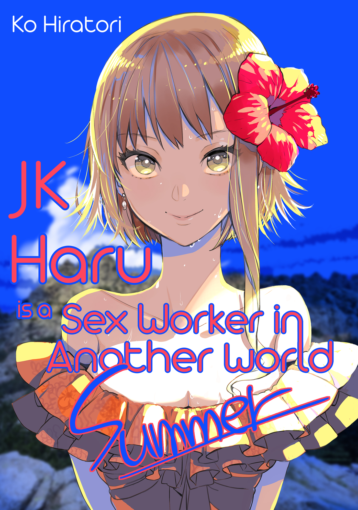
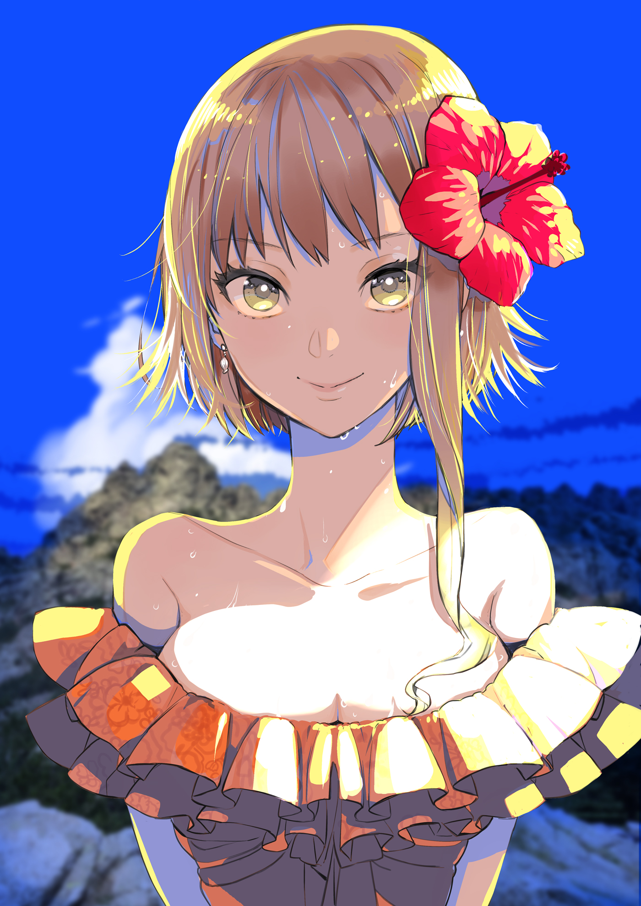

I Wanted to Save You Like a Hero Someday
{T minus 06:45 to the truck accident}
The morning air seemed gritty with the previous night’s deadly battle. Clouds lay heavy over the sun’s eyes like the lingering scent of darkness. For me, the chill was pleasant. I gradually resumed the demeanor appropriate for my day profession of high-schooler—though the inside of my mouth still tasted faintly of blood.
Blood has a coppery flavor.
Or was it iron? I haven’t eaten either of them, so how should I know? Why is it metallic, anyway? Sounds bogus. The taste of blood in my mouth is also a lie. I wasn’t hurt. All I had done the night before was watch anime and listen to radio shows. I’m tired.
Drinking a cheap cola I bought at the bulk-discount grocery store in my neighborhood, I got on the bus. At the same time, I scanned all the seats. It was only kids in the same school uniform as me and old people. No one sketchy-looking.
If there had been a guy who seemed like a bus-jacker sitting in the front, I would identify the innocent-looking salaryman type in the back as his partner. But there wasn’t anyone like that. Of course there wasn’t. The bus pulled away from the curb.
The thing was crammed full of high-school students, which meant tons of pointless noise. Chief among the sounds I didn’t want to hear were the conversations of couples. I canceled them out internally—’cause I was jealous.
I also really hate conversations between junior and senior club members. I’m a way badder dude sipping my 1.5 liter bottle of off-brand cola than you guys slurping your weird astronaut drinks, anyhow.
I stuck the bottle under my arm, leaned against a pole near the front of the bus, and opened my book. I think book covers are weak and rude to the heroine, so I don’t use them. Do you want to cover the face of the girl you like while you talk to her? Do you want to hug her through a book cover? Not me. And I do want to hug her, so I hope they make a body pillow soon.
Usually I would read while listening to songs sung by the voice actress who played her in the anime, but while I was listening to the radio last night, I got pissed because they ignored my message, and when I threw my headphones, they broke.
The world’s not fair. I wish I could hurry up and go to a different one where I could hear her voice in real life.
“Oh, I might know the guy you’re talking about. It’s the South High soccer team, right? We’re friends, I’m pretty sure.”
While I was absorbed in my paperback world, we’d reached the next bus stop and some girls got on. I quickly hid my face behind the cover of my book. There was no real reason except that meeting girls from school outside the classroom is stressful, so I decided to go stealth.
As a result, they didn’t see me, but when they went by, there was this—how to describe it—stupidly good smell.
What the hell. Is she some kinda freak? What do you have to put on your body for it to smell so much like candy?
Haru Koyama.
“See, we’re friends on LINE. That’s him, right?”
“Yeah, that guy! Haru, how do you know him? That’s creepy.”
“Just through my boyfriend. He’s on the soccer team, so, you know.”
Even if she didn’t brag about her boyfriend at the top of her lungs, I knew she had one. I’m known at school as a being of lofty ideals, and I don’t take much interest in reality’s life forms, so I don’t talk to them. But Haru Koyama and her friends are so loud that I know her basic profile. Like, I know that this is her second boyfriend in high school. And I know that she commutes from so far away that she takes two different busses.
My class is almost entirely ugly chicks, but Haru Koyama has a pretty normal face, and she’s got a lot of friends, so she sticks out so damned much that I just happen to have some info about her in the back of my head is all. It’s not like I’m interested in her.
Good grief-ing in my head at how noisy the bus was, I returned to my other world. The illustration of the heroine had her dressed like a princess knight and flashing her panties, arms locked with the protagonist.
There aren’t many girls who could pull off this look in the real world. Maybe one, if any, in my class.
{T minus 06:32 to the truck accident}
I entered the classroom of pigs. No terrorists. It was another peaceful day. How many more times are you gonna make me say a boring line like that? They call you a place of learning, but you’re a friggin’ zoo.
“Whoa, don’t freak me out like that!”
A white object flew through my line of sight and bounced off the wall. It was a ball. Most likely what they call a baseball.
“Oh, Chiba. Sorry, didn’t mean to throw it by you.” The mob boy held his hands up. With no other choice, I picked up the ball to toss it back to him. What the hell, this is heavier than I thought. I’m gonna hurt my shoulder.
“Thanks a bunch.” He went straight back to talking to the other mobs.
Now then, I thought. Did he even apologize? Oh, he did say “sorry.” Did he thank me for picking it up? He did, yeah.
So then...no reason to go berserk on his ass. You escaped this time, guy. There’s no telling what I’ll do when I get pissed. But, hmm. I felt sort of dissatisfied. Like I was being underestimated.
Wait, though, could you really call that an apology, what he just said? Can’t you sound a tad bit more remorseful? You really freaked me out, and I picked your ball up off the floor!
“Uh, did you want something?”
When I stared at him, he turned around. Wow. Apparently I’m capable of making people sense my thoughts. I said, “Nothing,” with a nihilistic smile and made a point of leaving without another word. I had no intention of taking his life, so I would stop at a mental warning.
Mental powers are handy. You can avoid pointless battles. Well, but it’s because I’m so unique that I get treated like I’m aloof.
“Oh, you’re here.” A guy set his bag down before taking the next seat over and shamelessly grinning at me. His name’s Sekiguchi, and he’s one of the few guys in class I can talk to on an equal footing. In other words, of all the insufferable bastards at our school, he’s one of the worst.
“Did you see it?” Sekiguchi asked.
“Yeah,” was all I replied.
“Heh-heh-heh...”
We smiled the smile of comrades who had shared the same sublime experience. The previous night’s SoraDan (the late-night anime Sky-Blue Dungeon: Second Tour) was godly. That one scene will be talked about in the history of Japanese media for decades to come. More like forever. I mean, because it was the greatest. You can’t not talk about it.
“When Yufumin was like, ‘Wanna touch?’ and stuck her chest out—”
“That scene where the Dragon Air Brigade charged at the cloud golem—”
Our opinions clashed. Runaway value collision. Sekiguchi got red in the face and pushed his glasses up his nose so many times it looked like he was dribbling them. “You’re a pervert!”
“Nah, nah. Plus I was kidding. I agree with you—about the part with the Dragon Air Brigade.”
Was it really that good? ’Cause I’m pretty sure the softness of Yufumin’s little boobs as they swayed was some god-level animation. But getting called a pervert by Sekiguchi made me mad, so I just agreed with him.
“Yeah, the captain’s lines during that part were so full of passion! And the vice-captain all like, ‘I knew’!” He got pretty passionate himself. I just let him ramble on, nodding occasionally and thinking about Yufumin.
If you clash even once, it’s hard to geek out together even about anime you like. I don’t hate Sekiguchi or anything, but he’s got that thing where he can’t really read the atmosphere. Geez.
In the center of the classroom, Haru Koyama and her friends were cracking up and making a racket. The baseball mob from earlier kept putting the ball down the back of her shirt and getting smacked.
I got serious about my conversation with Sekiguchi and tried to talk as loudly as possible.
{T minus 04:07 to the truck accident}
Yawwwwwn.
I leaned against the back of my chair and stretched. God, this class is so boring. How does social studies help you when you actually go out into society? No, I’m sure it’s good for something, it’s just so tedious. Politics and shit.
I figured, Well, why not look at Haru Koyama?
She had her head propped up on her elbow and was writing something in her notebook. It’s just my guess, but I bet it had nothing to do with the class. Maybe a portrait of the teacher or something. I heard she’s good at dumb doodles like that. Not that I’ve seen them. But that’s how these people are, they get all giddy over something stupid like that.
The classroom is a small world. But how many of these kids realize that? There are so many who mistake this place for the whole thing and act like they’re one of the ruling class or something. They have no idea how unimportant they are.
Haru Koyama is one of those people.
Or at least, that’s what everyone else must have thought. But I felt like there was a possibility she wasn’t.
Why? Because I know that sometimes she gets this bored look on her face.
I saw someone who had breathed the air of a different world, who had put both her life and sanity on the line.
I was the same, so I knew.
I was pretty sure that Haru Koyama wanted to talk about anime with us.
Just then, the atmosphere of the classroom changed completely.
A lukewarm presence descended. Like a shadow.
Before whatever it was could get me, I kicked off the ground and flew to the ceiling. A crack ran through the blackboard behind me, and it broke into pieces at almost the same time.
What had manifested itself in the slight space between the board and the wall was a jet-black creature reminiscent of a giant salamander, but about the size of a small car.
No, it wasn’t right to call it a creature. This was a spam mail from another world. The worm, an autonomous enemy intel-collector colony whose goal was the eradication of humanity, was only mimicking a living thing.
But wow, it was huge. Had the filter malfunctioned? What were the Firewall officials doing?
The classroom and desks were in shambles. People who had been my classmates until a moment ago vanished in one gulp. Having kicked off the ceiling lights and landed behind the worm, I drew my Avastgun (ver. Halting Roar) from my belt and took aim. At the same time, I made sure the app was loading on my phone.
It was an app with no name that my partner created. Based on the reaction of the Avastgun, it would search the Firewall database, identify the worm, and refine the vaccine program for me.
But though my partner was a notorious brainy cracking expert babe wanted around the globe, the only information she could lift from the Worldwide United Defense Organization servers with this single app was the previous generation’s backup. If this was an entirely new kind of worm, we were screwed.
The worm turned its big head to look at me. I recognized the glasses dangling from its mouth.
No way... The smile of my dirty-minded best friend who was always beside me jabbering about anime crossed my mind.
It felt like the world was being dyed the color of blood. But I managed to hang on to my reason by a thread. Don’t go berserk. You’ll destroy another whole district. You don’t need that kind of pain a third time in your life.
But the bad news didn’t stop there. The DB check turned up nothing. In other words, this worm was a new variety—a joker.
I clicked my tongue in my head and fired. Just kept pulling the trigger. All I could do was keep pumping bullets into the thing until the Avastgun and the app did enough random inspections to refine the vaccine. Fire, fire, fire until I killed the thing.
The other students finally grasped what was going on and fled screaming. Your reaction time is garbage! Stick your tails between your legs and run while I keep it busy!
The worm spat multiple spear-like tentacles at me. This was an attack pattern I’d never seen. Leaping between floor and desk, I evaded while shooting the thing for all I was worth, collecting data.
All the app came up with was a log of errors. Was it a completely new type that bucked all our assumptions? No, it couldn’t be. We destroyed the data necessary to create major mutations three years ago. But there was one other possible evolution that we missed: αDam. Maybe it—
“S-Save me...” A frail, pitiful voice called for help. The baseball mob bastard was crawling spinelessly around under his desk.
Tch, the hell are you doing?
I shoved my phone into my back pocket and took Blastgun (ver. Silent Frenzy) from my back. Both of my weapons were second-generation Beretta models, but I had rooted them so I could customize them to my liking. If I made too big of a scene here, the guys from Firewall would find me, but this was no time to worry about that.
Shooting with both guns, I jumped off a desk, dodged the tentacles by spinning in midair, and then kicked Baseball Mob’s butt to get him going.
“Run, mob boy!”
“Th-Thanks, Chiba!”
I fired shot after shot, shielding the boy as he slowly crawled out from under the desk. But I didn’t have the vaccine yet. The battery warning light started flashing.
Hey, whoa. I pulled out all the stops, but I’m gonna be the one to cry uncle and get eaten by this janky bastard? You call that a punchline?
Not today. I grabbed the spare battery I had hidden up in the broken ceiling light I kicked earlier and—
A silver blade ran straight down the middle of the worm. The hulking black thing stopped moving and its body split neatly in half, the data inside spilling out.
Standing atop the collapsed body was a girl wearing the uniform of my school. In her right hand she held a katana replica. The flame and five-pointed star motif on the handle was proof it was official Firewall issue.
Her short skirt fluttered as she hopped down. Then she—Haru Koyama—drew the latest Avastgun model and shot the puddle of tar-like remains on the floor.
No, they weren’t remains. A mosaic pattern rippled through them, and they disappeared along with the body’s operation response.
So that was the actual body? In other words, this was the newest variety of Trojan. What I had been attacking, thinking it was the body, was only an external shell for the data body capable of physical attacks. Yeah, yeah, sorry for being so uninformed. I mean, what could I do? That stupid thing.
The cleansed data for this world was there. In other words, Sekiguchi and the others who had been eaten were restored. If we left them alone, they would wake up eventually. I’m not the kind of jerk who would write the story so they stayed dead.
I lowered my guns, but Haru Koyama thrust the point of her katana toward my eyes.
“Now then. You’re some kind of white hat hacker? But the gear and app you’re using are totally illegal. Sorry, but it’s our job to crack down on your type, too.” Then she added in exasperation, “I never expected there to be a pesky high-school hacker in my own class.”
I was likewise stunned to find a “pro” in the same class as me. And how tacky to disguise herself as a high-school student.
“Come with me. We’ll talk at HQ.”
“Doesn’t sound like you want to talk.”
“That’ll depend on your attitude.”
Then I decline your invitation.
With all the data invasions from the other world, everyone seemed to think that regulating data completely was “the safest” thing to do, so of course state employees wouldn’t understand why rogue hackers like me were necessary.
Well, I haven’t thought up why that is either, but anyhow.
“Sorry, but I’m blowing this joint. Tell the teacher I left early.”
“Huh? What kind of bullshit—?!”
I opened an app and released one of my stock of small worms. I generated it in a sticker that I posted to our class’s chat group—a farewell.
“What?” Haru Koyama must have had her phone in the pocket of her skirt. Poor thing. That worm’s favorite food is synthetic fiber. “Wait a—ugh! What the hell?!”
With a “Sorry!” to Haru Koyama, whose bright red underwear was revealed for all to see, I jumped out the window.
A jeep skidded to a stop below. At the wheel was my partner, the cracker babe “Invader Mira,” dressed as usual in her incomprehensible style—goth loli with goggles.
“Wait! I’ll never forgive you, Seiji Chiba! Don’t you forget it!”
Sheesh. Playing around as a high-schooler was fun, but I guess all good things come to an end—
And that’s when the bell rang.
Immediately the classroom erupted in noise. I put my head down on my desk and reviewed the story of my interrupted fantasy.
Hmm, maybe her underwear should be white. She may not look it, but she is a virgin.
{T minus 02:11 to the truck accident}
“Sekiguchi and Chiba are in charge of shopping today. I’m coming with, so I’m counting on you guys.”
Baseball Mob started talking to me so suddenly, I panicked and smiled. I guess he took it as a yes. Well, whatever.
It seemed we were having a school festival, or rather a traditional festival of the school region would be held. I wasn’t interested in it at all but ended up in charge of shopping and set pieces.
It happened before I knew it. I guess because everyone had to do something, or something. The school is so behind the times in that sense. Make a place for someone with lofty ideals like me! I hate working in groups.
“And of the girls, it’ll be Hamazawa, Airi, and Moka. See you after school.”
Huh, girls are coming, too? Hamazawa I knew because she had been in the same junior high as Sekiguchi; we had talked about cards once. I had no idea who the other two were. So it’s three boys and three girls?
What’s up with that? Guys and girls going shopping together after school? Are you nuts? Are you even high-schoolers?
They’re getting a little too excited about this festival. Why should I have to walk outside with a girl and be forced to carry everything?
And I’m sure someone will suggest we go to an arcade or something along the way. Like that baseball mob.
What’s with that? Why should I have to play my card battle game in front of girls from our class? They’ll find out I’m a ranked player. This is why I always say I don’t want to brag.
“Seriouslyyyy?”
The girls who had been named were wincing and saying “This sucks” and whatnot.
“What’s with this group? Are you for real?”
“I don’t get it. How’d you pick these people?”
“Hey, we decided we would take turns shopping, right? That’s all it is.”
“But why does that mean we have to go with them? What a joke.”
They were looking over at us with mean smiles. Us, or maybe more like at Sekiguchi. It was unforgivable, the way they were treating my best friend.
We don’t wanna fucking walk with you either! Go look in the mirror before you start whining.
“Oh, wait. I’ll come with.”
Just as the vibes had reached peak shitty, Haru Koyama volunteered for some reason. Everyone just stared at her.
“Why? You’re working on the stage performance, so you don’t have to do crew stuff.”
“Eh, I gotta be in the Miss JK Contest. I totally forgot, but as long as I’m doing it, I figure I’ll wear a bubble-era styled wig and a bodycon suit—and expense it.”
“Wait a sec, you’re not taking the Miss JK Contest seriously? You’re our class rep!”
“I don’t get it. Well, if it’s Haru, I guess I do.”
“That’s gonna be hilaaarious. We’ll go with and help you shop.”
No, she’ll screw it up. I can only see her screwing up. And why was she bringing up that superficial Miss JK Contest, anyhow? Cut it out.
Stuff like that kinda pisses me off. It irritates me that she can just be like, Eh, I don’t care about the contest. I don’t really care either, but she should have been more into it. Think of the people who elected you, dammit!
It was obvious she was happy to be chosen and liked the attention. She should have just put on the airs of the top school caste she belonged to. Not that I care about nonsense like that.
And if you’re gonna buy something, wouldn’t a swimsuit be better? There’s probably a swimsuit competition. Not that I’d know. And probably also, you know—I bet some lewd character like the student council president or the principal will orchestrate some kind of sexy incident. Not that I’d know.
Well, whatever, she’s our rep. I’ll go see her. Sure, I’ll go to the Miss JK Contest. Gotta show support.
Still. Of all the times to offer to go shopping, she does it when I’m going? What are you up to, Haru Koyama?
She’s not like, observing me, is she? Maybe I should keep an eye on her, too, just in case. It was possible a swimsuit choosing event would be triggered. Not that I had any interest in that whatsoever.
“We don’t have a very big budget, so make it something cheap, like a ’fro.”
“Whaaat? Well, it’s fine. I can work with a ’fro.”
Work with a swimsuit...
{T minus 00:20 to the truck accident}
School’s over, so why do I have to hang around with kids from my class? Geez.
Well, I got tapped, so I didn’t have a choice. I’ll just go and get it over with. I got things to do. Although I did LINE my mom and tell her I might be eating dinner with kids from school. If we’re going, then hurry up, you guys!
“Hey, I keep getting these weird messages. Do you know what this is?”
“What’s wrong, Haru? Oh, ha, it’s just spam. Ignore it.”
“I do, but they just keep coming.”
“Why not block the address?”
“I do. But then they start coming from a different address. What should I do?”
Seriously, though, how long are we gonna twiddle our thumbs here in the classroom? Don’t you feel bad for making me wait with my bag on my shoulder? Hamazawa and Sekiguchi haven’t said a word in a while, either. They’re nervous. How sad. Talk to them.
The bell rang and they were still screwing around like they’d forgotten we had errands to run. The school festival is right around the corner. We all have to work together to make it a success, right? You’re the ones who invited me!
“Tch.” I clicked my tongue and leaned against the window. It seemed like no one heard me, so I did it again. Tch.
“Oh, hold on. Those guys know a lot about this kind of thing.”
Baseball Mob suddenly turned around, so I quietly pretended to be picking at something in my teeth. But apparently he had his eye on Sekiguchi, not me, so he and the girls encircled my awkwardly fidgeting friend.
I bumped my alertness level up while still pretending to look at the blackboard in the back.
“Sekiguchi, do you know what this is? Haru keeps getting these weird messages on her phone. What should she do?”
What, you’re coming to ask us wise IT masters for advice?
All you can do is keep firing domain block bullets while buffing your guard with anti-virus software. It’s a ruthless world, IT is—if you get shot down, all you can do is fall.
“Umm, you’re getting it on your carrier address, right? Do you know your network password?”
“What’s that?”
“If you’ve never used it, then you must still have the default settings. I’m going to open your profile. Is that okay?”
“Sure, go ahead. What are you going to do?”
“I think you should change your settings for receiving messages. Are you getting any newsletters?”
“Huh? No. Or more like I don’t really use my mail that much.”
“For now I’ll make it so you don’t get any mail sent from computers. Or mails with URLs in them. That should reject most spam right there.”
“Wow.” Haru Koyama brushed her hair behind her ear and leaned over to look. She was so indecent, sitting on the window sill with her legs crossed as if on purpose. She probably still even smelled good.
Sekiguchi bit his lip as he worked. “You should be good now,” he said, holding her phone out and nervously pushing his glasses up.
“Thanks!” She was just stretching her hand out when Baseball Mob took the phone.
“Thanks, Sekiguchi.” He wiped it on his pants before handing it back to Haru.
The other girls smirked. “Didn’t he just get your email address?” they said. “It was probably Sekiguchi spamming you in the first place.”
“I wouldn’t do that,” said Sekiguchi, looking down like an idiot.
I did the loudest fucking tongue click in my head. Sekiguchi would never do that sort of thing. He’s my IT disciple. I taught him everything he knows.
But those skills don’t exist to save this bunch. They’re for the weak, innocent masses. Ahh, I just wanna go to another world and use my knowledge to gain the upper hand. Then I’d treat these guys like small fries—that would wake them up.
Just as the gap between our mood and theirs threatened to warp space-time, Haru Koyama whacked Sekiguchi on the shoulder. “Thanks, Sekiguchi! It’s great to be able to count on you.”
For a second, the atmosphere froze. Just, Sekiguchi’s ears were so red it looked like he got doused with a pan of boiling water. Her face was that close to his.
“Um, Haru, you’re kinda close.”
“Honestly, it’s cruel. I gotta admit I’m surprised.”
“What? Really?”
Sekiguchi was liberated all too simply, and their group went back to ignoring us and getting rowdy over their own conversation. Sekiguchi was gaping like a total doofus, but suddenly came back to himself and became a glasses-adjusting machine.
So what was that all about?
I know what it was. She was just collecting votes. She wanted to get Sekiguchi on board for the Miss JK Contest. You’re playing dirty, class rep!
And I mean, c’mon. Anyone can fiddle with email settings. That’s basic. The only reason Sekiguchi got asked was because I was spacing out by the window. It was such an easy thing. It’s not as if he saved her. It’s not as if he rescued Haru Koyama.
Don’t misunderstand, Sekiguchi. You’re just not that kind of guy. Don’t put your trust in a girl. They’re all looks. Inside they’re ridiculing us. They just flatter us when they need us for something, so if you expect anything, you’ll only be betrayed. Us and them are enemies in the end!
Sekiguchi reached his hand for the spot on his shoulder where Haru Koyama had touched him. I couldn’t bear to watch, so I cleared my throat. “Ah, ngh, ahh.”
It was louder than I thought it would be and ended up sounding like the gasps of a mature woman in some porny manga.
Silence fell in the classroom. Then Baseball Mob said, “Oh right, we have to go shopping.”
Exactly. That’s what I’ve been saying this whole time.
{T minus 00:05 to the truck accident}
“But spam is so funny lots of the time, don’t you think?”
“Yeah. Look at this: ‘This is Iwata. I’m pinging you because Akira changed his addy.’”
“Whoo-hoo! He likes, you, Haru!”
“I totally wondered what I would do if it were actually him.”
“No, c’mon, that would never happen. Don’t get fooled.”
We were on our pilgrimage to the store. From the moment we left school, we’d split into two groups. Walking in front was Baseball Mob with the girls, and behind them was us. Hamazawa was clinging to the three in front a little distance away.
All I could say about the positioning was that it was vaguely dissatisfying. Well, walking all six of us in a line would have been rude. And it wasn’t like the positions had any meaning.
Sekiguchi and I didn’t talk. We chatted often enough at school, but we weren’t good enough friends yet to walk home together or LINE afterward.
“Or like this one. ‘I clicked the link and it sent me to another world. Any questions?’”
“How is he emailing from another world?”
“They probably have the net and smartphones there, don’t you think?”
“What? How handy. I bet they have convenience stores, too.”
“But there are actually lots of isekai ones. ‘I’m in another world recruiting heroes!’ or like, ‘SSR gacha cheats available if you act now in another world!’ I have no idea what they’re talking about, though.”
“They could probably trick the guys behind us.”
That’s a load of crap. I get those messages all the time, but I hardly ever open them. And I only click sometimes. Listening to them made me feel sick. I’d rather talk about anime.
But Sekiguchi had seemed sort of preoccupied for a while now. It was obvious that he was conscious of the presence of the girls in front of us—or rather, a certain girl.
Sekiguchi, are you that easy?
Gimme a break. Are you still thinking about what happened back there? That was definitely a trap. Pure imitation. It’s precisely because she can do that sort of thing to anyone that she’s one of the cool kids.
It would never happen—ever. They’re a different race of people. They know that and come bug us on purpose. They do it to make fun of us.
It’s happened to you a zillion times before, right? Even my cola gets teased. They just want to tear people down and laugh at them.
It’s the worst. I can’t believe it.
{T minus 00:02 to the truck accident}
If the world ever looks gray, jump into the next one without hesitation.
I think it’s a line from a light novel I read as a little kid. I forgot the title and author. I don’t even remember what the scene was or who said it. But I felt like it was telling me to experience all sorts of different stories.
The world is full of so many stories that one person could never experience them all. If you don’t like the one you’re in, go to the next. On and on. The reason we live is to joyfully encounter as many types of content as we can.
That’s why if things won’t work out in this world, you just try in the next. If things don’t work out in high school, there’s college. Or you could join the ranks of the story creators. That’s what I’m going to do.
There’s nothing lamer than being thrown into despair by a kid in your own grade. Our situations aren’t even that different. Maybe to Sekiguchi the world looked rosy, but to me, even if it wasn’t gray, it was definitely some kind of horrible color. I wanted to get this stupid shopping trip over with and go home to my room to watch what I pleased. And I absolutely didn’t want anyone else influencing the color of my life.
“Hey, after we shop, wanna go hang out somewhere?” Baseball Mob asked the girls.
Sekiguchi misinterpreted and raised his head.
Nope. There was no way he would be inviting us. It was definitely the kind of situation where, Sorry, only three people fit in the car.
{T minus 00:01 to the truck accident}
“Oh, it’s my boyfriend!” Haru Koyama’s phone had chimed with a LINE message, and when she looked at it, her face lit up. Baseball Mob seemed lost for words, and Sekiguchi seemed startled.
You dipshits, don’t be getting the wrong idea. Haru Koyama has a boyfriend, and it’s not like she even hides the fact! She even goes around bragging about how hot he is! And look how happy she looks right now!
“Sorry, you guys go ahead.” She put her phone up to her ear and waved us on with her other hand. The other girls teased her a bit, while Baseball Mob just seemed embarrassed.
I felt like it was rude to even watch a girl on the phone with her boyfriend, so I looked away. Why should I have to be the considerate one?
Haru Koyama was walking down the middle of the road, talking in a pitch that was a notch higher than usual. “What’s going on? Don’t you have practice?”
How dumb.
Sekiguchi and I walked gingerly past, trying to avoid catching her attention.
Just then, the sky that had been cloudy since the morning opened up to shine a ray of sun on her.
{T minus 00:00:30 to the truck accident}
“Huh? No, it’s totally fine. Right now I’m out shopping with some kids from school. Ah-ha-ha, yeah! I’m gonna wear an afro!”
She smelled the same way she did that morning. Her voice in my ears tickled like crazy.
I’d been worried about what color the world was, what color the people were, but that stuff didn’t matter anymore. I had the high-school boy thought that if only a girl were next to me and smiling, everything would be perfect. In spite of myself.
I kept my expression neutral—made a face like I wasn’t thinking about Haru Koyama—and sighed. My heart was beating like I’d just gotten out of the pool.
This is the problem with the popular kids. How come their smiles are so easygoing? It makes it seem like I’m a weirdo. Them and their unfair charms.
What if Sekiguchi got the wrong idea again? If you have a boyfriend, don’t spread your kawaii all over! Tch!
No, I’ve never once thought Haru Koyama was cute.
Really. I’m serious. Fuck.
What the hell, geez...
{Truck accident initiates}
“Uh, what’s that truck doing?” Baseball Mob looked down the road.
It came way into the intersection doing a wide, unsteady turn. Hovering between lanes, it caused an oncoming car to slam its brakes. From where we were, it was impossible to tell if the driver was drunk or trying to be cool.
“Hey, let’s move.”
Baseball Mob with a good idea. We should get out of the road, too.
I had the feeling I could probably stop a truck with one hand, but there was no reason I had to try it right then.
“Huh? Where’s Haru?” said Baseball Mob.
She’s on the phone.
{T minus 00:00:05 to being transported to another world}
“Koyama!”
Sekiguchi’s shout startled us all.
Haru Koyama looked up, too, but she didn’t seem to realize why he’d called her name.
The truck’s wheels squealed as it tilted on the straight road.
Someone shoved me, and I tripped.
{T minus 00:00:04 to being transported to another world}
The one who ran into me was Baseball Mob. As I was losing my balance, I saw him, trying to flee, crash into Sekiguchi who had suddenly cut in. That was some fabulous footwork by Sekiguchi, but in the next instant, he stepped on something and fell. Baseball Mob then tripped over him and fell, too.
The dark liquid spraying everywhere was coming from my crushed bottle of cola.
{T minus 00:00:03 to being transported to another world}
With its wheels still audibly slipping, the truck headed right for us without slowing down at all.
Behind me, someone screamed. As if that were the switch, my sluggish legs got kicked into gear.
I planted a foot on Baseball Mob and leaped.
{T minus 00:00:02 to being transported to another world}
“Koyamaaa!” When I called her name aloud for the first time, I felt a rush of adrenaline.
Haru Koyama was standing there frozen like an idiot, and I sprinted toward her with all my might.
What am I doing? Why am I running? What do I do next?
I knew only one thing for sure.
I had gotten past every other guy in the world and was aiming for Haru Koyama.
I was sure I would regret it if I stopped—because if I was going to be a hero, this was the time.
{T minus 00:00:01 to being transported to another world}
Nah, it couldn’t be the only time.
Actually, a similar thing happened when I was little.
It was summer, and I was visiting my grandma’s house. I made friends with a girl who seemed straight out of a slice-of-country-life type of manga, and when she nearly drowned in the river, I pulled her out.
She thanked me so much and said she owed me her life and everything. I thought, Okay, sure, I’ll let you thank me, and went along with it. But after a while she started putting some space between us, or rather, she started being cold to me. I told her that was no way to treat the guy who saved her life, but she stayed sassy, and in the end I stopped playing with her.
After that, a lot happened—I got more hobbies, like anime and light novels, and stopped going to my grandma’s house, but I wondered how that girl was doing. Was she happy? I forgot about what I did for her, but she didn’t, did she?
But wait, why am I suddenly remembering all this stuff that happened a zillion years ago? Why does time seem to be going on and on?
It’s just like what happens before you die! It’s the thing everyone talks about when they miraculously make it back alive.
But I couldn’t stop now. Haru Koyama was right in front of me. The truck’s tires were skidding as it approached.
Nah, I’ll make it by a hair. There’s no way I could just suddenly die. That’s what the dopamine whispered to me. Who is the hero of the day? Me. Not the boyfriend, not the mob, and not Sekiguchi. It’s Seiji Chiba. The me of today is different than the me of yesterday. Don’t ever look at me the same way again. Don’t make fun of me. I’ll stare right back at you. That’s right. That’s why I’m running. I’m going to change my world.
I called Haru Koyama’s name once more. I don’t know if I managed to actually say it or not, but I screamed. Slow-motion. And yet my senses seemed sharp. I knew the girls behind me were shrieking and trying to escape. I held out my hand to her. Like a movie, like the first episode of an anime, I reached out to grasp the moment my destiny would change. I’m right beside you now.
Then Haru Koyama, who had been watching the truck dumbstruck with her phone in her hand, finally noticed me—and the look on her face said, Who’s this guy, again?
The world turned gray, and I tasted iron.
{JK Haru Is a Sex Worker in Another World: Summer}
Murder at Blue Cat Nocturne
If I told my friends I got hit by a truck and transported to another world, it would be hilarious, but since I’m in another world, my phone doesn’t connect.
At first I thought, You gotta be kidding me! too. But after that there were a whole bunch of twists and turns that were no joke, so I had no choice but to just live my life. It’s pretty insane how people can get used to just about anything as long as they’re alive, or more like, life is a force to be reckoned with. Not that it makes it easier.
I even got used to being a sex worker. And I’m even proud of what a pro I’ve become. Plus, I understand pretty well how this other world with a god, demons, and heroes works.
But I still have the feeling somewhere in a corner of my mind that I’m walking around in a dream. Maybe the cheat skills we were given are a lifeline too thick. They’re what makes everything seem so removed from reality. Life feels too much like a game.
It’s a rough time, so I tend to use whatever powers are handy to get by. I always think it’s cowardly to rely on them so much, but actually, they save my butt pretty often.
That’s why I’ll never fully be one of these people. I can tell, even as I feel bad for enjoying my not-at-all-ordinary life like I’m still the high schooler I was that day, waiting for the school festival to come.
This is a story of something that happened one day in another world.
“You lost your underwear at Blue Cat Nocturne? While you were drying them?”
“Shhh!” Kiyori blushed. Lupe hunched her shoulders, conscious of the people around us.
We were having a breakfast meeting at Sumo’s cafe. I got a little over-excited because I smelled a mystery. The old dudes sitting nearby all clicked their tongues in annoyance.
The terrace seating created at our request had been recognized to the extent that other people now used it too, but the customers were still practically 100 percent dudes; the number of women cafe-goers hadn’t really increased at all. The road to turning Sumo’s joint into the type of cafe I knew was a long one.
Well, that was an issue we could deal with later.
“Actually, sometimes a pair or two does disappear. I figured someone was messing with us, so I said not to worry about it. We get harassed and teased all the time.”
“...Oh.”
Kiyori looked surprised, but as Lupe said, this wasn’t the first time something like this had happened. For some reason people—both men and women—tended not to take sex workers seriously. Of course it was frustrating, and it pissed me off. But it also wasn’t specific to this world.
Kiyori hung her head. Everyone had experiences with harassment. If we got upset about every little thing that happened to us, there’d be no end to it.
Still, though.
“That’s going too far. It’s robbery at that point! Let’s tell the soldiers!”
“It won’t do any good. The lost item is a sex worker’s underwear. They won’t even give us the time of day.”
The soldiers are like a combination of my old world’s police and self-defense force. I was pretty sure their duty included protecting the people’s panties. But depending on the situation, a sex worker’s status is lower than a pair of panties. Wait, “lower” is going too far. I’m a sex worker too, after all.
“But if we just leave it, then the victims will keep having problems.”
Kiyori said, “Shall we try asking via the Church?” But if we did that, it could cause trouble for Kiyori and the people of the Church, so we said thanks but passed.
“Our only option is to catch the perp ourselves.”
“Huh? You don’t have to go that far, do you? Don’t do anything dangerous.”
“Crying yourself to sleep is worse. You can’t just grin and bear it when something important to you gets stolen. Women and sex workers have to speak up and say something is unforgivable when it’s unforgivable.”
“I think you’re exactly right!” This time it was Kiyori who was getting over-excited. The older dudes around us told her to “Pipe down!”, so she shrank into herself.
“Lower your voices, you two. I can just buy more underwear. In fact, I’ll buy replacements for every—”
“Lupe, you don’t need to do that. Leave this to me. We can catch the thief without doing anything dangerous. My buddy Ukyo says the culprit always returns to the scene of the crime.”
“Who’s that...?”
“Now that they’ve got a taste for our panties, when they realize the soldiers aren’t doing anything, they’ll come back to Blue Cat Nocturne’s drying spot. We’ll set a trap there. So, hmm, well it’s pretty cheesy, but how about we dig a pitfall?”
We caught the criminal right away.
Filling in the hole—which I’d used my Dig skill craftsmanship at full throttle to create—was an underwear-laden Chiba.
“Oh, it’s you? You walking sexual curiosity.”
How disappointing. I had a feeling this outcome wasn’t completely outside the realm of possibility, but for it to actually happen was a real bummer. Chiba used to be so hopeless, but lately he had started to get to know the other girls, and with Lupe’s training, I thought maybe he was changing for the better. Actually, his true nature of not living up to expectations hadn’t changed at all!
“W-Wait a sec. Listen to me!”
“Shaddup. I don’t care if we know each other—a crime is a crime. I’m sorry your fetish got the better of you, but it doesn’t justify breaking the law.”
Right, Ukyo?
“You got it all wrong. I’m carrying these because”—Chiba seemed like was trying to defend himself, but when he saw all the contemptuous looks of the sex workers peering down at him, he gave up, and his shoulders slumped—“...because I couldn’t control my...sexual curiosity...”
“Okay, we’ve got a confession. Someone call a soldier. Let’s ask for a proper other-world execution, cruel and merciless. Like an orc funeral or something!”
“Haru, calm down. Chiba must have his reasons. Let’s hear what he has to say.”
“Lupe, you’re going too easy on him. The more you spoil a fetish, the more it grows. A fetish is a monster that nests in your heart. The whole reason he’s stuck in this hole with a bunch of panties right now is that he lost control of it. People are doomed when they get this bad.”
“It’s true that one time, Chiba tried to uncrumple the underwear I took off to look at them, but when I told him to stop, he stopped. He has the kind of fetish that listens when you talk to it.”
“He did that to mine once, too. He’s just a total panties man. He always peeks when we’re going up the stairs, even.”
“Yep, if you ever wear a short dress, he’ll be staring at your thighs. You can tell he’s just waiting. And when he’s trying to catch a peek from behind, he stares as if he thinks we’ll never notice.”
“Huh? Wait a sec. Isn’t this perv totally lucking out at this angle? He’s probably thinking he wants to stay buried in the dirt forever!”
“Cut it out already! I refuse to discuss this in front of everyone or be a party to this call-out spree. I’ll explain later, so just let me outta here!”
“Listen to this high-and-mighty jerk... We have absolutely no intention of discussing anything with you!”
“Haru, let’s just listen to him first. Please?”
Lupe, are you his mom now or something?
If she was going to say that, then I couldn’t fight her. I was definitely going to tie him up so he couldn’t run away, though.
I unleashed my Bind skill—the one I got from the chokey dude’s little twin brother. I needed to reform Chiba before his fetish was sublimated into a skill like theirs.
“Did you really have to do this?!”
I bound his upper body with a criss-crossing turtle shell pattern and pushed him into the shed. It was a musty spot for keeping barrels of alcohol and old parts and junk. Chiba was kicking and screaming, but I locked the door. You can simmer down in there for now.
There was no telling what Chiba had done with the stolen underwear, so we washed each pair before returning them and explaining to everyone. Then I decided to go to Sumo’s place. I thought I’d buy a cake for all the girls to apologize for the racket. Of course, I’d make Chiba pay me back later.
As I was scraping together some cash in my room, Lupe showed up and said she would come with. “It’ll be hard on your own.”
She really is everyone’s mom. Even I’m letting her spoil me now. As she helped me carry the cake home, I ended up venting to her as usual.
“I’m really so pissed this time. Why should I have to go to all this trouble? It’s like being ashamed of a relative. I was half-serious about executing him, by the way.”
I dunno why, but Lupe was smiling. She almost always smiled when listening to what I had to say. “You’re so nice, though, Haru.”
“Huh? What did I ever do that’s nice?”
“You said ‘like being ashamed of a relative.’”
“What? Nah, I mean, it doesn’t have any profound significance or anything. I just say that ’cause we happen to be from the same town. We never talked or anything. We’re weren’t friends.”
That’s true. And even now, I don’t consider us pals or anything. We were just in the same class, and he was calling me some kinda paste thing I didn’t understand. None of our friends even overlapped. Or LINE groups. At least, I don’t think they did.
My friends always made fun of Chiba and his friends as gross otaku, and sometimes I laughed too. No, maybe I made fun of them the most. I never knew what was so funny, so I was always thinking what a pain it all was while I just matched the other girls’ mood without caring. I didn’t even know what kind of guy he was. I wasn’t interested in knowing.
But what I learned since ending up in this world together, and talking and sleeping with him, is that he communicates incomprehensibly and his boundaries are all fucked up. It’s creepy how one second he’s timid, the next he’s acting like he knows you inside and out, and then he’s suddenly touching you. I don’t know if he’s smart or not, but for all his obsessive attention to detail, he sure won’t listen to anyone else’s opinions.
But then he gets hurt really easily and is quick to anger. It’s annoying how he plunges into depression whenever someone gets mad at him. He can’t accept anyone saying something different from what he expected. That part of him can be really gross, and it pisses me off.
He’s no relative of mine. Only shame.
But one time Lupe gently told me I was too cold to him, so I do try to pay attention to that. But honestly, if I’m not overly cold, I don’t think my emotions get through to him.
“It’s funny how you know Chiba the best, but you say you’re not interested.”
“Nah, I don’t really know him. I just end up hearing stuff I didn’t even want to find out. It’s just because we’re from the same town.”
He’s an otaku, and a weirdo, and a perv, but that’s all. You can explain him pretty well with just those three words. But in this world there aren’t any smartphones, and even if there are things like newspapers, they just report in a matter-of-fact way, so the only sources of real info are word-of-mouth and gossip. And you only really talk to people whose faces you know.
I don’t know if that’s the reason or not, but for example, they don’t really call people “gross,” here, and there’s no word for “otaku.” They just don’t have those categories. If I say something like “like a virgin” then someone will finally say, Ohh, I getcha, but I think that’s only because we’re sex workers.
They don’t have those shared categories, so they don’t stick labels on people so easily. It’s not as if stereotypes and prejudice don’t exist, but maybe they’re less common. Everyone’s attitude is that you don’t know someone until you talk to them. It might just be because this city is on the front line of the war with the demon lord, so a lot of people come and go. Although if I know one thing for sure, it’s that this world is more misogynistic.
“Let’s talk to him. If you start to go too hard on him, I’ll stop you. And in return, if I go too easy on him, you can stop me. No angry yelling, though. If we keep ourselves in check, I think Chiba will actually tell us why he did it.”
“...Yeah.”
But when it comes to communication, people in this world are more mature, or like, sometimes I’m not really that much better than Chiba, which freaks me out. I was always confident about that kind of stuff before, but it’s like a difference of caliber. In this world it’s about how much you can take, not how much you can dish out. And I’ve always fought my way through by dishing out.
If only we had phones. Chiba might be thinking the same thing as me—maybe it was stress making him act out. If this were a classroom, thanks to Lupe, me and Chiba would be in a common LINE group and be able to maintain a proper distance as classmates. That would have been just right.
We’re two people who couldn’t become friends just by sleeping together. Inviting him in the beginning was a mistake.
That’s what I was thinking with a mix of nostalgia and regret on the nice walk home with Lupe carrying the apology cake.
Then came the shock.
Chiba was dead.
“Whaaaaaaat?!”
I was so freaked out I collapsed, and Lupe’s knees gave out too. The shed was already a mess to begin with, and now Chiba was lying right in the middle of it, in front of some boxes and stuff piled in the back.
He was still wrapped up from my Bind power, lying face down with his feet pointing our way. In the slice of light that shone through the open door, we had a clear view of the blood he had coughed up and his pale face.
“Ch-Chiba!”
“Wait, Lupe! Don’t go near him.”
She tried to run to him, but I grabbed her shoulders. Preserving the crime scene is elementary in a scientific investigation. Right, Ukyo? Rokkaku?
I approached carefully, so as not to step on anything lying on the floor, and touched the nape of his neck. No pulse. I put my ear to his back. His heartbeat...well, I couldn’t hear anything.
I cleared my throat and collected myself as much as possible before informing Lupe in a way that hopefully wouldn’t upset her too much. “He’s gone.”
“Nooooooo!” She crumpled into my arms. The shuddering of her narrow shoulders told me this was just reality, and we had to accept it.
I realized that on some level I had been trying to enjoy the weird little incidents that happened on the regular in this other world. Frankly, I figured today was just another day of messing with Chiba, and hadn’t thought any more of it than that while tying him up and imprisoning him. I never thought he would die. I never thought he would puke blood.
I didn’t know what I could ever tell his parents.
The question was, how did it happen?
“I didn’t think this guy would die a good death, but...I sure didn’t expect it to be this pitiful.” He came to another world, learned his limits, became a panty thief in his despair, and died. Did all the “reborn in another world” stories he always talked about end this sadly? I’d like to read one sometime. “But this is a murder mystery. Someone killed him.”
It certainly wasn’t suicide. For me, this situation would have been so embarrassing I would want to die, but for Chiba it was daily life. And he wasn’t the type to kill himself.
Someone had definitely murdered him.
“Yeah... And the one who tied him up so he couldn’t move was you, Haru.”
“That’s right.”
“And the one who locked him in this shed was you, Haru.”
“Yep.”
“And you have the key, too, right?”
“Hold up. I didn’t do it. I even have an alibi. I was with you the whole time!”
“You said more than once that you wished he would die...”
“Yeah, I did. I said it plenty of times. But look, I didn’t do it, so think for second! Calm down and think about it, okay?”
Me, the culprit?
Nah, there’s no way. And I’m a reliable narrator. Seriously.
“Let’s get our facts straight first. Then we can reason it out with cool heads. We’ll catch the culprit ourselves.”
“U-Uh-huh. But don’t you think we should leave that sort of thing up to the soldie—?”
“We can’t do that. I mean, you know what sort of investigation they’d do. This is a brothel, and the victim is a panty thief. They’ll try to frame one of us as the murderer and get it over with as quickly as possible. They definitely won’t look into it properly. It could actually be more dangerous for us if we don’t track down the perp on our own!”
I will avenge Chiba and clear my name.
’Cause this is a Blue Cat Nocturne murder mystery!
The scene of the crime was a shed at a brothel.
It was next to the laundry hanging area around the back of the building and couldn’t be seen from the street. You either had to go around the building or exit through the back near the kitchen to access it.
At the time of discovery, the door was unlocked. There was no master key. The shed’s walls and door were wood. There weren’t any windows, either. It was a total locked room.
I was the only one with a key. But at the risk of sounding insistent, I was out shopping when...Chiba coughed up blood and died. From the lack of external injuries, it was likely the murder was committed via poison.
It had to have happened sometime between the time Lupe and I went to Sumo’s and the time we returned with the cake. I don’t think it took an hour, but it was definitely more than thirty minutes, so anyone could have done it.
But the only ones who knew panty-thief Chiba was even in there were the girls at the shop. I don’t like the thought, but the girls are the only suspects that make sense. And their underwear were stolen, after all. That’s a fine murder motive, isn’t it, Conan?
Chiba, why did you do something so stupid?
“For starters, let’s interview the girls in the shop. But we can’t mention that Chiba was killed yet. I want to hear what they have to say before everything descends into chaos.”
“O-Okay...”
As Lupe and I served the cake, we asked everyone if anything weird had happened. To protect their privacy, I’ll list their testimonies with their names concealed:
Girl A: I was cleaning the hall on the second floor. Did I notice anything? Not really.
Girl B: I’m off today, so I was in my room.
Girl C: Cake? No thanks. Anything weird? You were making a stupid racket again.
Girl D: Girl A does a lousy job cleaning, so I was redoing her work.
Girl E: When I was cleaning on the first floor, I saw Girl C hanging around in the hall.
Girl F: I was prepping food for today in the kitchen. I think Girl B came in for some water.
Girls G-L: We had band practice. No one left their seats at any time.
Girl M: I was in my room and heard Girls A and D having a bit of an argument.
I have no cluuuuue! The only thing I learned from this is that Girl C really doesn’t like me. What did I ever do to her?
Well, I can cross the band members off the suspect list, I guess. That cuts out half. I can probably take off A and D, too. And—
“But no one could unlock the door, right?”
“Yeah. But I was thinking...”
I told Lupe to follow me back to the scene of the crime. Before, I was so shocked that I couldn’t observe things carefully, but there was something bothering me.
The shed smelled like meat and booze. The air was chilly and creepy, with an animal stink to it. Trying to avoid looking at Chiba, I explained my thoughts to Lupe.
“If the culprit came through this door and made Chiba drink something, I don’t think he would have fallen that way with his back to us.”
Well, if he thought he was going to be killed, maybe he tried to run away, but though he may not look it, Chiba is a level 90ish adventurer. If the murderer was one of the girls, I’m sure he had a thing or two he could have done before fleeing, even with both of his hands tied. Of course, once I say that, then the issue becomes that the only girl here who could kill him is me.
Whether he was forced to drink poison or tricked into it, the positioning of his body struck me as strange. He had fallen facing away from the door.
“And these walls are full of gaps. There aren’t any lights or windows, but you can still see with the sun coming in. This place is totally run down.”
In other words, if Chiba wanted to, he could have busted through a wall to escape. So why didn’t he...? He could no longer answer that question. Maybe he was just too stupid to realize it was an option. He really was an idiot, right to the end.
“Look at this.”
“What...? Footprints?”
The culprit had stepped in the blood Chiba had coughed up. It was only a partial print of the shoe’s sole, so it was hard to make out, but the feet were small. Probably a girl’s. The footprints appeared on several boxes and chairs stacked in the back and then stopped before the wall.
“Huh?!”
Just as I thought, part of the wall was missing. There was a hole just big enough for a girl to use. To test it, I tried going through and escaped with no issues.
“Lupe, you come, too.”
“S-Sure. I’m a little nervous, but...”
It was up high, so it was a little dangerous, but Lupe also managed to get out that way. Sun and chirping insects. The air outside was bright.
You didn’t even need a key to get into the shed in the first place. But if it was a secret entrance that not even Lupe knew about, the culprit probably had to be quite a veteran.
I glared up at the brothel. The one who killed Chiba had to be in there. I totally understood how they felt, but that didn’t mean it was okay to actually do it.
“Lupe, let’s inspect Chiba’s body next. I want to know precisely how he was killed.”
“Err, uh, uhh...”
Really, I didn’t want to look either. But at this rate, I wouldn’t be able to avenge him. I have to catch the criminal!
“Let’s go. I’m gonna track down the culprit for sure.”
I grabbed Lupe’s hand, and we went back around the shed.
Then came another shock—a shock so shocking I thought I might die, myself.
Chiba’s body was gone.
“Whaaaat?!”
Lupe and I both collapsed again.
What the fuck, I hate this. Chiba, have you turned into a mysterious phenomenon now? You are the biggest damned handful. Couldn’t you at least chill out once you’re dead? Your hyperactivity is off the charts!
“Did someone...steal the body or something?”
But it was probably less than a minute since we had found the secret entrance, left the shed, and come back around. Could someone really have gotten away with a dead body during that time?
We just stood there in the empty shed, flabbergasted. Eventually Lupe thumped her palm with a fist.
“Maybe Chiba wasn’t dead after all!”
“Oh!”
Lupe sounded so happy that I shared her relief almost before I knew it. But was that really okay? Then what was the blood? And his heart had stopped. It was still too soon to be happy. He could have just turned into a zombie.
This is a brothel in another world! There’s no telling what could happen!
“Anyhow, we have to look for Chiba, or what used to be Chiba. He can’t have gone far.”
We couldn’t find any footprints, and when we went out to the street, we didn’t spot anyone suspicious. And if a turtle-tied zombie were shambling around, there would be some kind of commotion. We didn’t see anything like that, either.
Then is he inside Blue Cat Nocturne?
We went back to investigate the brothel. Nothing seemed terribly different from the last time; some people were moving around cleaning or getting ready for later. The garbage bins were clean. All of the band members were in the shop. In the kitchen, prep for the food that would be served to customers was proceeding, and the plates from all the cake we had passed out were there.
There were no new objects or people to speak of. And no one was missing. No Chiba.
We went around and questioned everyone again.
Girl A: I was taking the trash out by the street. I didn’t see the panty thief.
Girl B: I didn’t see anything, but...Girl C was rushing around.
Girl C: You’re so obnoxious! What I do is none of your business.
Girl D: I’ve been cleaning the whole time. Girl A is so dumb, I can’t stand it.
Girl E: I was getting things ready around the shop with Girl F. The band was practicing the whole time.
Girl F: I was prepping around the shop. The band was here, but I didn’t see anyone shady.
Girls G-L: [omitted]
Girl M: Girl A was slacking off on the bench out front.
What is with Girl C?
Isn’t that a bit rude? Someone died you know!
We weren’t getting anywhere. Other than that girl hating me more, there wasn’t any new info. What’s so bad about me, anyhow? I really don’t get her at all!
I sat at the table with my head in my hands. I was so sick of how stupid I was that I started bonking it with my fists.
Chiba had been killed, and Chiba or what had been Chiba was gone, and there was nothing I could do for him. I couldn’t do a single friendly thing for him, even in the end. Even though he probably had regrets, too.
What the hell. These cheat skills are worthless. I never have the ones I need. For example, if there were a Detective skill, or a Buddy skill, or a Body-is-a-Child-but-Brain-is-an-Adult skill, then I’d be able to beat the crap out of the perpetrator.
I mean seriously. Dig? Bind? I didn’t want abilities like that. But it’s my job—I don’t get to choose whose powers I absorb. And the first person I actually wanted to sleep with didn’t give me anything.
I realized my body was emitting a mysterious aura. If this was how it was going to be, I just needed to sleep with someone. It seemed a little against the rules, but I’d just have to go at random. I had to just fuck till I got a skill I could use. Welcome to the underground in another world. Former Tokyo high-schooler Haru Koyama, 18 years old... She’s coming for you, other world boys!
“Haru, c’mere for a second.”
“Hm?”
Just as I was getting desperate, Lupe motioned to me from the kitchen. I wondered what she wanted to show me, and it was the empty cake plates. Err, we just saw these, and we even counted them.
“What about them?”
“Mm, it might not have anything to do with anything, but wasn’t there an extra piece of cake?”
“Was there?”
I was pretty sure I had bought just the right amount. Lupe and I had passed out the slices together, even—one per person.
“...So, it’s only a maybe, but...” Lupe seemed to be having trouble spitting it out, and she tugged on her skirt, fidgeting. “I might know where Chiba is.”
The criminal always returns to the scene of the crime. I was supposedly the detective, but I, too, brazenly went back to the place I’d already returned to a zillion times, along with Lupe—the shed at Blue Cat Nocturne.
That’s where today’s criminal-slash-victim-slash-living dead was sitting on the floor, licking his sticky cake fingers.
“Oh shit!” When he realized he was caught, he whisked the cake behind his back.
The evening sun shining through the gaps in the rundown shed reflected off the red head any Carp fan would be proud of. His sad features made me think for a second that he was a living corpse, but then I thought, Wait, he was always like that, as my head straightened itself out.
Gunma had come back to life. It was a Kantō miracle.
“You...idiot!” I’m gonna wring your neck! I grabbed him. I was so pissed, I figured I would at least scream in his ear. “You stupid idiot! You should have just died! I was wishing you would! Ahhhhhgh!”
I’d had it with his bullshit and was so frustrated, but at the same time relieved, so I ended up crying some confusing tears. He really was a dipshit. So much so that I feel bad for the Carp. I was mortified that this was the only other person from my hometown in this world. He was my shame. My dark past in real time. But then...
“...What’s wrong with her?” He played dumb.
“She’s relieved, duh.” Even Lupe seemed to be having a bizarre misunderstanding.
Man, I was so pissed.
And then—
“What’s your excuse?!”
Chiba was turtle-tied again on the ground outside the shed, and I got back to grilling him.
When I really thought about everything that had happened so far, it was so not funny—I was mad. Why did I have to get freaked out and run around like crazy for this idiot? From beginning to end, it made zero sense.
Should I deactivate LevBi (my skill Level Bind)?
Should I just kill him?
“Uhhh....umm...” Chiba’s eyes got shifty. He looked at the brothel, then at me, then at Lupe, and bit his lip. “It’s true. I couldn’t control my sexual curiosity, and I stole the underwear. Because I love panties! I adore panties! Maybe I’m a pervert!”
“We know that! I’m asking about what happened after that. Why did you pretend to be dead? You weren’t actually, right?”
“Huh? I was just tripping, I guess you could say...”
“Tripping?”
Chiba blinked and licked his lips before replying. “O-Oh, no, I mean...playing dead was... It’s my newest skill that I acquired training in the demon forest. There’re bears in there, you know.”
“Bears, huh? You don’t say. Ugh, they’re like the strongest forest animal, aren’t they?” Not only demons, but bears, too? Ack. If I ever go into the woods again, I’ll wear a bell on my hip.
“I mean, Haru, you were saying to call the soldiers and have me executed. I was scared. I figured I would just die before you did that, was all.”
“Agh... Isn’t that pretty low?! Chiba, this is why I...geez.”
Lupe said, “Well, well,” to calm me down. “It was nothing, so why don’t we just be happy with that. We don’t have to worry about him dying or being killed anymore.”
How sweet of her to go so easy on him. Is her whole body made of sugar? I’d love to eat her up.
If you worry about every poor fool you meet, you’ll never last. How was she born so kind?
Seriously, what do I have to do to be a person like her...?
“The underwear have been returned, Chiba is fine, so we’re good, right?”
She rubbed my back, and I began to calm down a bit. Yeah. Everything turned out fine. Although some things still didn’t sit quite right with me.
“Mm, but wait a sec. The mystery isn’t even solved yet. Who was sneaking in and out through the secret entrance?”
Someone had left tracks after stepping in Chiba’s blood. I was pretty sure there was still a third party who hadn’t appeared yet.
“Huh? An entrance? No, th-that was...”
Chiba was clearly shaken. My intuition as a detective (not powers of deduction) had alarm bells ringing in my head. He was hiding something. There was definitely more to this. What should I do? Deactivate LeveBi after all? Voluntary questioning via violence?
“S-Sorry, that was...me!” Lupe suddenly stood up straight as a rod and confessed.
It was so unexpected that both Chiba and I yelped, “Huh?!”
“Uhh, I actually knew about that entrance before, sorry. I used to, right, come here to slack off during work. I’m really sorry. And then, uh, I wondered how Chiba was doing, so when we got back from shopping—no, sorry, before we went shopping, I peeked in on him.”
When she got to the part about how she’d found him collapsed, she fell silent. Like a humanoid robot who had abruptly finished its storefront demonstration, she froze with the floundering conversation in both hands, wondering which way to take it.
Her eyes alone moved quickly to look at Chiba. Having received that baton and being physically unable to move, Chiba turned just his eyes on me in the same way.
Huh? Me?
Since their through balls all landed at my feet, for some reason, I decided to think about it. “It was dim in there, and you thought he was only sleeping...?”
“Yes, exactly!” Lupe and Chiba exclaimed in harmony.
Having picked up some momentum, I continued my line of reasoning. “But later when you learned he was dead, you were worried you would be a suspect, so you didn’t say anything...?”
“Yes, that’s really what I thought, Haru!”
“Are you some kinda genius, Haru?”
Ugh, stop. I’m just making rough guesses. Did I seriously get it right? You gotta be kidding me.
Sheesh, though, it really sounded like some kind of joke. Or like, I thought maybe they’d go through the real solution later without me, but when they were cheering, calling me a genius and a great detective, I got so embarrassed I started squirming. It was like I was actually the other world’s number one detective. We’ll have to face off sometime, Holmes☆
“...I’m sorry I didn’t say anything, Haru.”
I told Lupe I wasn’t mad at her at all. I smiled and told her I wouldn’t hold a grudge against her for briefly thinking I was the culprit.
“But Haru, you made such a big deal out of the whole thing. It’s just panties.” Chiba was still tied up, but he teased me like a doofus as if he considered the whole incident over and done with.
My temples twitched.
“I even came to return them, but then you were going on about execution—that’s so overkill. You’re the one who made this so ridiculous. You should think about what you’ve done. Oh, and untie me.”
His babble was so infuriatingly infuriating that I couldn’t even make normal comebacks like, But whose fault was it in the first place, huh? or, Who the hell wants their panties back after you did God-knows-what to them?
Which made me remember: I didn’t care about the murder mystery. This was about how much I wanted to teach that fucking panty thief a lesson!
Deactivate Level Bind!
I unleashed my combat level. My skills Sword Fighting +150, Martial Arts +120, Speed +140, Accuracy +100, Dynamic Visual Acuity: Divine, Peripheral Vision: Cosmic, and Reaction Speed: Light activated. Immunity to Status Effects, Immunity to Attack Magic, and Instadeath Immunity activated. Fire, Ice, Wind, Earth, Thunder, and Summoning Magic—unlocked, all with the boost of Sage’s Wisdom. Dual Spell—activated. Skill Killer—activated. Double Blade, Bastard Sword, Charge Spear, Aegis—activated. Embody Armament Concept and Sermon to Eradicate Dead Souls—on standby.
Status List—activated.
I checked my level against Chiba’s. And snorted. “...If you have any last words, better say them now, Chiba.”
“C’mon, Haru, calm down. Chiba’s sorry for what he did. Right?” Lupe frantically put herself between us to stop me.
Oh yeah. I couldn’t act this way in front of her. Chill. You can’t snap. You decided you would live your life in this other world as a pacifist. I’m a normal girl. I’m super against violence.
“Hey, hey, what the heck? Are you all mad again? Violent girls have gone out of style! Not that your violence is anything but cute to me as the cheat-skilled protagonist, but enough is enough, yeah? Just untie me already! How do you even know how to tie someone up like this? Are you some kind of bondage freak?”
At the cafe I had been thinking that cheat skills were handy and great, and that I felt sort of bad for enjoying my not-at-all-ordinary life, and whatever, but that was a mistake.
In the end, today I used three skills:
Dig
Bind
Candle
Look what you made this JK do, other world!
Jaysohlbrother’s Kitchen
My name is Jaysohlbrother. But Miss Haru says, “Sumo is better,” so I go by Sumo most of the time now.
I’m Sumo. I’d like to cook something today. No, I mean, I cook everyday, but Miss Haru says, “You can’t be a celebrity chef unless you can talk at the same time,” so I’m going to practice cooking and talking. I don’t know what “cele” or “britychef” means, but I’m making it my goal to be one. Miss Haru says, “If anyone can do it, you can, Sumo.”
So then about that cooking. I guess anything is fine, but let’s grill some meat.
This is mangameat. At Jay’s Cafe, we call this thick cut with a bone through the middle “mangameat.” It’s our specialty.
The name is said to have come about when, decades ago, one of my predecessors was in pursuit of a new shape of meat. A famous boy adventurer at the time strolled by and said, “It looks like meat from a manga!” That’s where they got the name. But apparently no one knows what a manga is. Actually, Miss Haru made a strange comment too. She said, “Looks like something Luffy would like.”
Now then, the way to cook this meat is just to grill it well. After searing the outside on high heat, we just keep it turning it until it cooks through. Once it’s cooked to some extent, it’s time to season it.
Jay’s Cafe’s special blend consists of forest salt mixed with erb powder and peppe seeds. At Miss Haru’s suggestion, we started selling it. To us, the idea of selling just the spices was pretty shocking, but contrary to our expectations, there are lots of people who buy it on their way out. Miss Haru Is amazing.
So we sprinkle this seasoning on the meat. Miss Haru said that sprinkling it from up as high up as possible will help make sure the meat gets coated evenly. We hug our bent elbows into our sides and drop the spices pinched between our fingers.
Apparently Miss Haru likes this. She often requests that I “do it sexier.” I worry the flavor will be too strong, but since it makes her happy, I sprinkle quite a bit.
So that’s how the meat goes. We mainly do meat here, so we have a lot of grills, and there are cooks manning each of them so we don’t keep customers waiting. But Miss Haru says, “The way you plate the food is too rough. It’s all meat—no balance at all,” so we don’t score very high. And she says, “This isn’t the sort of thing girls want to eat,” as she’s chomping into a mangameat.
The idea of serving things girls want to eat is quite a challenge. For one thing, girls don’t come to the cafe. Well, not besides Miss Haru and her friends.
I want to prepare things for Miss Haru when I can, but in terms of business, it might be tough. My old man lets me do as I like on the condition that I’m personally in the kitchen, but he also doesn’t want me making anything too strange.
Lately I’ve been making sweets, but I’ve also come up with some new dishes. We set up some open-air seating in front of the cafe (Miss Haru’s idea), and Miss Haru and her friends advertise what a good time they’re having drinking their tea, but if you ask me whether we’ll really be able to build up a business aimed at women I’d have to say that honestly, uh...yeah.
But we’ve only just started. The stuff Miss Haru comes up with is so amazing that sometimes it’s beyond my understanding, but I believe in her and want to see her ideas through. My old man and the regulars laugh at me, saying, “That lady really perked you up,” but...I think Miss Haru needs a place she can be that isn’t the brothel. Yeah.
While the meat grills, let’s make a cake. The batter is made with vloua powder, sugar, eggs, and ream grass juice. What you do is simmer the ream grass. The water will turn white. Once it’s cooled, you scoop out the top layer. If you beat it, it thickens up and becomes more solid, but Miss Haru seems to like it better as a liquid. Still, ream keeps better as a solid, so this time we’ll do that. Both gimli and ream are grown with wind alphytemagic which helps the cake rise well and come out fluffy.
After adding some sugar to the ream juice and whipping it into clouds, you spread it between the baked cake layers and on top. Besides ream grass, you can brush it with melted sugar, mix in roasted cao nuts, and use different fruit jams and whatnot as variations when you decorate it.
I find this decorating part the most fun, or rather, I’m confident in my skills, and when I do a good job, it makes Miss Haru super happy. Miss Haru puts a lot of emphasis on the appearance of her food. She says that “pretty,” “cool,” or “instaworthy” foods will attract customers. Even if I don’t understand what it means, if it makes Miss Haru happy, I want to make things instaworthy.
This time we’re making a normal round cake. Pour the batter into a palm-sized pan of heetrezist leaves and bake. When it’s done, you just pile the ream juice on top. You can add fruit, too.
One of the basics of cake-baking is to make more than you think you’ll need in case an order comes in, but since the only ones who buy them are Miss Haru and her friends, we generally have leftovers. Although sometimes Miss Haru comes to buy a lot of them as “apology cakes.” The other day she came in with Miss Lupe to buy cake for everyone working at Blue Cat Nocturne. I didn’t ask what she did this time, but I felt bad, so I offered a discount. When she said, “I’ll make Chiba pay for it,” I figured that was fine and gave her and Miss Lupe a bunch of my deluxe—
“Mr. Sumo, why are you talking to yourself like that?”
The flesh of my entire body shrieked. A customer had come in even though the cafe wasn’t open yet. It was Miss Kiyori. She’s Miss Haru’s friend, but she comes in on her own now and then, too.
“Sorry, I just came to thank you for the cookies you baked me last week... But wait a minute, is it true that your real name is Jaysohlbrother? Why would you hide something so important from me?”
“Uh, err, it’s because...”
Miss Kiyori’s big eyes grew rounder and rounder as she brought her face closer. Apparently she had been listening from the beginning. The flesh of my entire body trembled in shame.
I couldn’t really explain why I was Sumo, but I told her how Miss Haru had given me that name, how I got used to it, and how even my old man calls me Sumo now. I stuttered a lot, but Miss Kiyori listened all the way through, sometimes making little feedback noises.
“I see... Miss Haru calls Mr. Endless Rain weird things like Gunma, Saitama, and Chiba, too. Perhaps where she’s from it’s rude to call a man by his given name.”
Miss Kiyori is smart. I felt like I had grown to understand Miss Haru’s puzzling behavior a bit more. From now on, I’ll only go by Sumo.
“So then Mr. Ja...Jaysohlbrother. What were you doing just now?”
But suddenly being called my real name by Miss Kiyori made the flesh in my face stiffen. Not only was it awkward to have been caught narrating my cooking to myself, but having a woman around the same age as me calling me by my real name got me all flustered for the first time in a while.
“Um, ahh...” I’m not very good at speaking. I’m confident when I talk to myself, but especially with women, I tend to get tongue-tied. Miss Haru is fine talking on and on by herself so I can have fun just listening, but Miss Kiyori, how should I put this...she tends to ask a lot of questions, so it’s tough when it’s just the two of us.
“...”
But she does patiently wait for me to finish talking, so I feel charged with the responsibility of explaining.
I explained. According to Miss Haru, I needed to sell myself as a chef. She proposed that I should be attracting customers, not the cafe.
Honestly, I don’t really feel like I’m cut out for it. For example, the idea of opening a cooking school for women to gain women customers. She says that people would be happy to reproduce the flavors of the cafe at home.
They might be happy, but the cooking I do isn’t all that complicated, so if they learn to make it at home, I feel like they’ll probably stop coming to the cafe. So though I’m aiming to be a celebrity chef, I’m not really sure how everything will turn out. That’s what I tried to explain.
“Aha. Bringing people together through cooking. Sounds very Miss Haru.” Miss Kiyori nodded. “Mr. Jaysohlbrother, it might not be a bad idea to try it. Restaurants have been completely ignoring the potential of women customers. And I think if you’re teaching them to cook, they’ll be loyal customers, too.”
Loyal customers?
Miss Kiyori explained, her eyes sparkling. “Yes. They’ll be customers, but also apprentices. There are no other cafes like that, so I’m sure word will spread even beyond this city. Once that happens, even people who live far away will be curious about your cooking and come to eat it. And if they like it, they’ll buy the cafe’s seasoning. Once that flavor becomes the flavor of home, they’ll stop in to eat while they’re buying more seasoning. Expand your customer base and keep them. I don’t know much about business, but it sounds like a good idea to me.”
I didn’t really get it at first, but as I thought about it more, it started to sound really smart. Miss Haru really is amazing. That’s what I thought Miss Kiyori was saying. I nodded over and over.
“Also you don’t need to worry. Amateurs won’t be able to reproduce your cooking so easily,” said Miss Kiyori with a smile. “I watch carefully while you cook, but when I go home and try to copy you, I can’t get the same flavor. If you do open a cooking school, please let me enroll.”
Come to think of it, Miss Kiyori did always sit in a place where should could see my station while she waited for Miss Haru. I thought it was because sitting alone on the “terrace” would make her stick out too much, but she was observing my hands so she could learn to cook? Then I should have been explaining what I was doing while I worked—I really owe Miss Kiyori.
“...Umm.” I asked if I could make her something. She ordered tea.
I wasn’t sure if making tea counted as cooking or not, but I figured I would take advantage of this chance and explain the process as I went. “Today’s tea is black naeb.”
“Oh, I love black naeb tea. It has such a sophisticated bitterness.”
I was lost for words. Miss Kiyori said “love” so casually, but the effect was, mm, pretty powerful on me. I knew she wasn’t saying it about me, but it’s just not a word I hear very often from a girl. Yeah.
“Oh right. It’s Miss Haru’s favorite tea, too, right? Is that why you serve it so often?”
She can be merciless at times. I couldn’t deny it, so I couldn’t say anything. I was in the middle of trying to narrate my process, so I wished she would give me a break.
“Uh, so the black naeb tea we serve here is prepared in a pot like this.”
We put a netted bag of black naebs in a big pot and let it soak for two nights. All that water gets thrown out, and then we simmer the naebs for half a day. After that, we cool it down and dilute as necessary to adjust the flavor. Miss Haru seems to like it rather thin, so I add quite a bit of water. When I do that, though, the flavor seems a little lackluster, but when I add sugar or float some tomin leaves on top, she praises it as “tasty.”
“That’s all it takes to make tea. Tea brewed with dried leaves doesn’t taste much different at a cafe versus at home. But there’s another way to make black naeb tea. The people of the eastern side of Seigaya forest apparently use that method.”
“Seigaya...?”
“Yes. Err, it’s not a very well-known area, but they have a different culture from ours.”
They put around ten black naebs in an empty pot and warm them up. They’re naebs that have been dried and rehydrated. This time we were using naebs soaked in water for two days, but actually an hour is enough. And the idea is to use naebs that are as small as possible.
As the naebs warm up, their skin splits, releasing the fragrance of earth alphytemagic. As you continue, though, the scent of the naebs themselves comes out. Then you take them off the heat, put five or six into a cup, and pour hot water over them.
Floating a dried apple flower on top can be good. It’s just to add some flavor, so you take it out before drinking, but whole dried apple flowers release some fire alphytemagic that keeps the drink hot and makes the liquid swirl a bit. It’s fun to look at.
“Wow, it’s so cute. And it smells nice.”
“Now we just wait until it turns the color of the black naebs.”
“...”
“...”
Oops. I ran out of things to talk about. I didn’t factor this waiting period into my calculations. Putting some naeb knowledge on display would have been fine, but I couldn’t think of anything interesting.
“Uh, so the other day Miss Haru—”
“I was also wondering, Mr. Jaysohlbrother. You said you were narrating your cooking, but actually half of what you were saying was about Miss Haru, right?”
“...Yeah.”
“Don’t you think you talk about her a bit too much?”
It felt like all my body’s flesh was being kneaded. It’s true that there aren’t many topics I can discuss. Food and Miss Haru—that’s about it. No wonder even my old man calls me Sumo.
“Why do you suppose the people of Seigaya Forest make their black naeb tea differently?”
“Oh, I think I heard they don’t have as much drinking water as we do here...”
“I see. So they must not drink tea very often, then, huh?”
“They drink it as medicine, and apparently also on special occasions. Incidentally, if you make it this way, you can also eat the naebs.”
Since we have no way to use the drained naebs, we have them disposed of along with the bones. But warmed black naebs soaked for only a few dozen minutes retain their flavor and fragrance.
I spooned up a few and dropped them into Miss Kiyori’s open hand. After inspecting them for a moment, she carefully put one in her mouth as if she were taking a pill.
When she bit down, a vague smile appeared on her face. “It’s a little bitter, but aromatic. The naebs must have been grown with care.”
I’ve tried eating them before, and they don’t taste very good. I felt like I’d made a strange recommendation—another failure.
But Miss Kiyori said, “This is the sort of topic I like,” which made me blush again. “You really know your stuff, huh, Mr. Jaysohlbrother? I think if you share those sorts of stories as you cook, your customers will enjoy it.”
To think my naeb knowledge would come in handy. I always thought interesting conversations were the funny things Miss Haru brought up, but Miss Kiyori seems to enjoy this sort of thing. In that case, I actually have plenty to talk about. When it comes to cooking, I’m pretty confident. Recently, at least.
The apple flower absorbed the hot water and its rotation slowed down, its petals opening on the surface. I scooped it out and placed the finished tea in front of Miss Kiyori.
“Thanks.” She held the cup in both hands and smelled it with a happy look on her face. When she took a sip, she said, “Tastes weird,” with a smile. “But it’s good. I like the apple aroma. Despite the potent bitterness, it has a smooth aftertaste. I guess you could say it’s a sophisticated flavor?”
Miss Kiyori complimented me, but I’m a cook with a fair amount of training, so I can understand honest feelings from expressions to some extent. I don’t think it’s a flavor that Miss Kiyori—or really any young woman—is bound to like.
So then why did I serve it to her? Maybe I was being sort of cocky. Miss Kiyori is always happy to eat what I cook, even if I mess up a bit.
I asked if she would rather have normal tea. But she said that she liked this kind of tea too and politely refused.
I just remembered. I was baking a cake.
Today I was practicing for my cooking school, so I felt bad that it was just a plain round cake, but I served it as a “thank you for going along with my practice session.”
Miss Kiyori politely refused, but I needed the validation, so I stubbornly thrust it at her in silence. I was tenacious. Miss Haru says that pushing is the foundation of both love and sumo. Not that this was love or sumo.
“All right, if you insist.” When she took a bite of the cake, she pressed her hands to her cheeks with a blissful look on her face and said, “Mmm.” It struck me that a pretty person really is pretty while eating, too.
“The natural fragrance and sweetness of the ream grass spreads through your mouth like a meadow. And the texture and softness of the cake support and envelope it. That’s because the cake is well-made and the amount of ream grass used is just right. And the berries have been cooked properly to mellow out their acidity. All your work overflows with care and kindness. I feel so floaty and happy, like I’m napping—or maybe gazing at the clouds—on a hill where ream and berries are blooming. It’s so delicious.”
Wow, though, she was unusually talented at conveying her impressions. If there were a job that was just enjoying lots of food in front of people and giving your impressions, she could definitely make a living doing it. If there were a job like that...
“And it looks cute, too. That’s important.” It seemed like I had managed to make it instaworthy, too. I’ve really been working on that lately. “A cake is such a mysterious dish. Did you learn this from Miss Haru?”
I cook more than just the cafe’s menu. Much of it is things I learned from Miss Haru or recipes we came up with together. But I explained how the cake was different. What I heard is that my predecessor’s predecessor recreated it based on an explanation from the boy adventurer (the same one who gave mangameat its name).
Miss Haru is familiar with lots of evolved forms of cake, so I learned improvements and new techniques, but the base is still from my predecessors’ recipe book. When they put it on the menu, none of the customers were interested in it, so the recipe had been shelved for a long time.
Miss Kiyori seemed surprised—from about the time I mentioned the boy adventurer.
“Umm...is something wrong?”
“No, err...” She wondered if maybe that boy adventurer was from the same town as Miss Haru, her voice shaking. If I looked closely, her hands seemed to be shaking, too.
“But the demon lord is still alive. Maybe tons of heroes have been coming for ages. Yet no one has been able to defeat the demon lord. Our enemy deep in the forest is so horrible that no hero up to this point has been able to defeat him...” Miss Kiyori was murmuring about something, but I didn’t really get it.
What’s wrong? Why is she talking about the demon lord while eating cake? Leave it to someone who finds my conversations interesting to change the topic in such an eccentric way. But I don’t know anything about the demon lord or adventurers. I have nothing to do with any of that.
“Mr. Jaysohlbrother.”
“Uh, yes?”
“We want Miss Haru to stay smiling here with us, right? We want her to live a long life, right? We want to change the world with her, right?”
It was so sudden that I hesitated, but considering it was Miss Haru, I agreed. Wishing her many smiles and a long life, I nodded, sandwiching my neck flesh.
“Then we can’t leave everything to Miss Haru. This is our problem, so we can’t be so quick to give up. I have to get stronger, too.” She spoke quietly as if talking to herself. I feel like it’s pretty rare for a Sister to want to get strong. Maybe she really is a bit of an odd one.
I realize I’m an odd cook, and Miss Haru is probably an odd sex worker, so maybe my generation of this cafe is going to be kind of crazy.
“So, Mr. Jaysohlbrother, do you know any combat techniques?”
Finally Miss Kiyori lost me. I’m a cook. I’m aiming to be a celebrity chef. Even if I went to the battlefield, it would be to run the kitchen. But when I met her powerful gaze, or rather, gazed into her big eyes, I felt pressured to come up with an answer. I broke into something like a cold sweat.
“Actually, I am learning something called sumo from Miss Haru.”
“What? From Miss Haru herself? So your name means ‘warrior’? She must expect great things from you. I’m jealous.”
Really? I was a bit embarrassed.
“So what kind of moves do you use?”
“Umm, okay, well, I’ll try to show you.” I felt a bit silly, but moved into an open area.
Since Miss Haru made it to number three in sales at Blue Cat Nocturne, she moved into a bigger room. So she said, “Well, since I have the space, I’ll teach you sumo,” and that’s how my training began.
Honestly, I thought she was going to do some new kind of thing that would feel good, but instead she threw my lecherous butt without breaking a sweat. The fact that Miss Haru, who was so thin and small, could pick me up was surprising, but I was also surprised by how insistent she was about doing sumo every time we went up to the second floor.
She said, “It’s fun, like an after-school club.” I don’t know what an afters choolclub is, but she seems to enjoy it, so I do, too. It makes quite a racket, though, so I think her boss scolds her.
Now I was doing it in front of someone else for the first time. I was worried I might scare Miss Kiyori. Still, I was eager to show off the fruits of my daily training.
I planted both my feet and then lifted one leg up high. I stomped that foot, then did the other side. I scooted forward, dragging my heels. Then I opened both palms toward the heavens, and after that I moved one hand to my belly button.
“...What are you doing?” Miss Kiyori cocked her head in confusion.
I had a bad feeling that maybe I had done something wrong, but I answered, “Sumo.”
“Huh? That was sumo? I guess I don’t really get it. That is, I’ve never seen anything like it before.”
“Miss Haru says that this is the basic sumo greeting...so when I go upstairs, this is the first thing we do.”
“To each other?”
“Yes.”
“You mean, with a straight face?”
“With a straight face.”
“Ah-ha-ha-ha-ha! Uh, sorry. But when I imagine it, I can’t help but—sorry. Ah-ha-ha-ha-ha!” She apologized over and over but nonetheless kept laughing. I must have really tickled her funny bone.
Maybe it’s not for combat after all? But I was happy I got Miss Kiyori to laugh.
“You two really are a lot of fun, huh?” she said, wiping the corners of her eyes.
If both Miss Haru and Miss Kiyori think it’s fun, that’s a reason to continue. I think I’ll keep working on my sumo for a bit longer.
“Mr. Sumo...err, sorry. Mr. Jaysohlbrother.”
“Umm, you can call me Sumo. I’m used to it.”
“No, please let me call you Mr. Jaysohlbrother. Otherwise there was no point to me learning your real name.” She said it over again, looking straight at me.
Miss Kiyori has such a beautiful face. (Of course, Miss Haru does, too. Oh, and Miss Lupe.) I used to be a total stranger to anything to do with women, so it hit me again how much my life has changed in the past few months after meeting these girls. It all started when I fell in love with Miss Haru at first sight and shamelessly followed her to the brothel.
“Mr. Jaysohlbrother.” Oh right, Miss Kiyori was talking. She called my real name again and then stopped for some reason, smiling as if to gloss it over. “You really love Miss Haru, don’t you, Mr. Jaysohlbrother?”
The only thing I don’t like about Miss Kiyori is how she sometimes hits the nail right on the head and stabs you with it.
“Huh? Uh, umm.” I had no idea how to answer, so all I could do was wipe away the waterfall of sweat pouring down my face. But no matter how much I wiped, my temperature kept rising. It was as if I’d turned into a big mangameat.
“...I like that about you,” Miss Kiyori said softly. She hit the nail on the head again, but for some reason, it seemed like this time she stabbed herself, and she pressed her hands to her heart. “You’re so single-minded and pure. The emotions you show are always so clean and fresh. For the longest time I’ve been trying to be more like Miss Haru, but maybe I should be aiming to be more like you.”
She looked up at me bashfully, biting her lip as she smiled. She was bright red. “I love you, Mr. Jaysohlbrother.”
Then she cast a spell that stopped time. Even my breathing and heartbeat stopped, so I rushed to inhale.
I had no idea how to react. That wasn’t a stabbing at all. Or rather, it was such an impossible blow that my head turned to mush.
“Sorry to say something so weird out of nowhere like that. What I love about you is how serious you are about Miss Haru. I just want to watch you, with that passion, cook; it’s not as if I want you to turn my way.”
She told me not to think too hard about it. I don’t think I can think very well in this state, anyway.
“I don’t want to interfere in your emotions, and my ideal relationship with you is the one we have right now. I just really wanted to tell you how I felt. I’ll probably be defiled again, so at least before that happens, I just...”
I didn’t really understand her confession. But between wondering what she meant by “defiled” and the fact that, come to think of it, she had said she wanted to get stronger, I got the feeling she was trying to do something different from normal Sister work, something totally unexpected, and it made me strangely nervous.
But it didn’t seem like a subject I could broach. As I was hesitating, she finally clapped her hands in front of her chest as if to close the conversation.
“Anyhow, sorry to be weird. It’s hard to put your own feelings into words, isn’t it? Even though you should be the closest to them, they’re so easy to lose sight of. Hee-hee.”
I completely agreed. I often lose track of what I’m trying to say. Even then, my heart was pounding and my brain wasn’t working right.
“Huh?” Miss Kiyori cocked her head and then sniffed the air. “Mr. Sumo—err, Mr. Jaysohlbrother! Your meat!”
“Ack.” I forgot I was still grilling the meat. Hurrying to take the burned lump off the heat, I touched it with my bare hands and dropped it. I nearly turned my hands into mangameat. “Ow, that burns...”
“Are you okay, Mr. Jaysohlbrother?”
Miss Kiyori cast healing magic on me. I’ve heard it’s pretty expensive if you request it in the usual way, but she turned down my offer to pay. “You always give us a discount, so this is the least I can do. More importantly, I guess that meat has gone to waste, huh?”
I picked the charred mangameat up off the floor. I couldn’t very well serve it anymore. But I couldn’t imagine throwing it away, either.
“If I scrape off the outer layer, I think it can still be eaten.” I put a knife into the meat. From beneath the burned crust appeared juicy flesh of the right color.
“Oh, looks great. I’m glad you could save it.”
Yes, for the two of us to eat, it was just fine. It didn’t matter that it got a little dirty. “I can transform anything into a tasty dish. Even if the food is dirty or damaged, it doesn’t mean you have to give up on it.”
“You’re right. Under the charred exterior the meat is grilled brilliantly.”
“The important part is what’s inside. And cooking can be a metaphor for all sorts of things. A little issue is actually no problem. Yeah.”
“It might actually improve the aroma. And all that juice looks delicious.”
I was trying to say in a roundabout way, in response to Miss Kiyori’s mention of being defiled, that no matter how defiled she was, she was still beautiful, but either because I didn’t express myself well enough or because she was really hungry, she interpreted it as just more commentary on the meat.
But whatever, that’s fine. I’m sure the meat was happy to be called delicious-looking.
“Would you like to have some before you go? I can’t serve it to a customer, so you don’t need to pay anything.”
“What? Really? I just might...”
“Yes. I’ll season it now.”
I performed the seasoning-from-high-above technique I learned from Miss Haru.
“Does that have some special meaning?” Miss Kiyori asked with a straight face, and once again, I wasn’t sure how to answer.
The Muck Always Sinks to the Bottom
I’ve been hanging around with Widgecraft for going on thirty years now.
We all went gray going along with his ridiculous dream to defeat the demon lord. Everyone had different colored skin and eyes, different upbringings, different languages; but we stuck together till we all had the same hair color. It was quite a long journey. Frankly, I’m impressed we survived.
Widge is a dumbass who loves a good festival, but once he’s in the forest, he’s cautious and stronger than anyone else. That’s why I teamed up with him, of course, but there were more than a couple times I thought, Oh shit, we’re doomed.
I’ve been punched so hard by a demon I flew up into the trees. I’ve been surrounded by a swarm of poisonous ants. I was tormented by a horrible fever, cause unknown, for three days and nights.
It was a life of coming out of the forest crying, I don’t wanna diiiie! and then going right back in because if you’re going to die, the forest is the only place to do it. I’m a bit of a dummy myself—I just have to breathe that forest air. It’s basically my hometown.
So into the pub where this band of dumbasses hangs out comes a woman who looks awfully out of place. She wore a pure white dress with a pure white hat. Even her skin was so pale you wondered if it had ever seen the sun. In contrast, her hair was a glossy black, and her gleaming eyeballs were so big they seemed about to pop out of her head.
This was a real lady. She was a clever, elegant, city girl. Her parents let her go to school, and now she worked as a fancy-pants Sister.
I’m from a minority group that lived on the eastern edge of the forest, got mud-colored skin full of tattoos, and no one in town even comes near, but here she was sitting across from me, and with this serious-ass face she says:
“Can I be your apprentice?”
At first I didn’t even know what she meant. Then after thinking for a minute, I realized she was teasing me, and I thought it was funny, so I laughed. I laughed up a storm, took my glass of bukaren wine I hadn’t even had a sip of yet, threw it in the Sister’s face, and gave her a thumbs down. I made sure she could see my darkly shining orc fang ring.
“I’ve got a message for your god. ‘If you wanna be my apprentice, come on by.’”
The guys at the pub laughed their asses off. The Sister bobbed her head, made a half-asleep nonsense comment, “I’ll try again another day,” and left.
She had a better ass than I expected, so I made my friends laugh again by making a joke about it.
*
I was born, as you know, in the Seigaya region. It’s on the other side of the Demon Lord Forest smack in the middle of this country. I was born in the east, but not in a city there. I was practically raised in the woods. This skin, these tattoos. The food and culture is different, you know. So we’re called the Cursed People.
Of course, we’re not cursed at all. Not a thing’s wrong with us. The curse is in you all’s eyes and hearts.
Anyway, we couldn’t stay where there were lots of people. We lived in a little riverside village, crawling around in the dirt with the beasts.
The river running through the forest is the color of dirt. They say it’s a flow of rainwater, and drinking straight from the source is a recipe for the runs. Besides that, the weather’s much hotter than it is here. The first things I remember are the reek of grass and the smell of mud; the buzzing of the bugs and the demon battle cries you hear at night.
We get a spear right from birth. They’re the short kind you can use as projectiles. When you reach a certain age, you get your own string and feathers to tie to it. That’s so everyone knows who made the kill. By the age of 15, we’re full-fledged hunters. That’s what we’re raised for.
“Igo, you’re next.”
Once, when I was eight or nine, the adults ordered us to climb to the top of a cliff and jump into the river. There were a few trials a year like that until we came of age. The guys who died weren’t cut out for living. In other words, they couldn’t be helped.
I was good at moving my body and showing off my bravery. Nothing ever scared me. I turned around, pointed my thumbs toward the ground, and pulled a stupid face by rolling my eyes and twirling my tongue as I fell. The adults made sour faces while the kids my age clapped.
People said I would be a hero. A hero. They were idiots, the whole lot of ’em. They believed with a religious faith that a man who would turn the world upside down could be born in that little shit stain of a village.
After each trial, the men who performed especially well were tattooed. It was a lot of pain for a kid to take, but it was an honor. I drank celebration water and calmly accepted the ink. By that time, I already had a chest full of black. I had more than any of my friends.
But on rainy days, it itched. The ink was made of demon blood. The adults said it wanted to return to the forest.
The demons are terrible beings, but to us they’re almost like gods. It was believed that bringing our flesh closer to theirs was one way to grow stronger. As a kid, that logic made no sense to me, and the whole thing was just a big pain. It itched so bad until the blood took to your own.
One rainy day, I thought I would go to the river and wash. The itching wasn’t quite as bad if you cooled off the skin. But that was where I encountered one for the first time.
A demon.
It was watching from the opposite bank—a monster with four legs like a horse and a long neck. But its body was all squishy like it didn’t have any bones, and its eyeballs took up half of its head. When it opened its mouth, I could see packed rows of sharp little teeth, and sticky drool dribbled out. Then it licked its lips at me as I stood there quivering, unable to move, and waded into the river.
Demons are demons, I thought. There’s no way a couple tattoos can bring humans any closer to them. Humans are nothing but food. We get eaten and die—that’s it. The thought made me pee myself.
But I didn’t die back then. I was saved.
Men who fail to pass the trials but also fail to die are made into wall men. They become the wall outside the village that protects it.
Standing before me was a man with long, dirty hair. I had never met him inside the village. He shouted something that wasn’t human language as he scooped water out of the river and flung it at the demon. That made the demon back away. Little by little. The demon that went into the river voluntarily now hated the water once the man had touched it.
Then the man began binding his own arm. He wound a thin string tight around it just below the elbow, then bit the inside of his mouth and spat blood on his arm. The blood bubbled on his skin and started to smell like rotten eggs. He thrust it toward the demon and screamed like a horse, “Neigh, neigh!”
The demon chomped the arm and sucked the blood that spurted out. All I could do was shake with tears coming out of my eyes. But the demon just did what it was doing for a little while, then eventually removed its mouth and tamely went back to where it came from.
The man’s arm was a mess. He was groaning on his knees in the river when I approached him. “Are you all right?”
He turned to me and said, “That one wasn’t starving. We’re lucky,” smiling through his cold sweat. “All it cost us was a little blood. Today’s a good day.”
I noticed upon taking a closer look that one of the man’s legs was made of wood. I thanked him. But he wasn’t happy about that. He didn’t seem to like my tattoos.
“Don’t tell anyone you met me. Go home.”
I was helpless anyhow, so even though I was worried about the man, I went back to my house. Then I heard from the men of the village about the wall men. They said it had nothing to do with me, but they told me a little when I pestered them.
Men who couldn’t become warriors were thrown out. They were put outside the communal society and made into tools to work like horses. In our village we had this thing called dark arts, which is sort of like magic. The difference is that while magic uses spirit energy, dark arts are from the same tree as what the demons use.
In other words, that’s why we’re persecuted as the Cursed People. Plus the technique used to create the tattoos. People from outside think we have demon blood running through our veins.
But when we’re persecuted like that we’re forced to rely even more on the dark arts. You probably don’t understand this, but if someone hates you, that means they fear you. We couldn’t very well abandon the dark arts; they were our only weapon. Not even if we were isolated, persecuted, or ignored. We had no choice but to go on using dark arts and be feared in order to survive.
And in that shitty environment, the dirtiest jobs were left to the weak. The muck sinks to the bottom. That’s just how it went.
A man who becomes a wall learns particularly nasty dark arts from the wall men before him. And then they fight to protect the village from demons. The men who couldn’t pass the trials were forced to do the most difficult work.
It’s strange to me that they didn’t run away. But at the time, that didn’t occur to me. It was only natural to work for the village. That little area around it was our entire world. Somewhere to run to? No one imagined that.
Anyhow, all I had to do was look down on the wall men like the other men of the village. After all, I would be a hero.
But then one saved my life. A man never forgets a debt. I wanted to meet that wall man again. And there was something about that dark art I caught a glimpse of that attracted me. That power to repel the demons. Despised or whatever it was, it was still strong.
I made the mistake of thinking it was awesome.
At first the wall man avoided me, but when I kept following him around, he started to talk to me little by little.
“You have tattoos, so you don’t need dark arts,” he said, but he never got to the most important point. He only really asked me what kind of trials I had passed and what life in the village was like. Other than that he silently dragged his foot, ate some grass now and then, and walked in circles around the village.
To me, he seemed like a hero. Because he was fighting—and without getting compensated in any way.
One time, I observed a day in the life of the wall man from a bit of a distance.
He mostly just walked. Even if he passed another wall man, they didn’t make eye contact. He walked ’til he was exhausted, sat once in a while, and was up and walking again in no time.
Honestly, it was so boring, I immediately got sick of watching him. But things changed in the evening.
A demon came out of the forest.
He got down low as if he were a demon himself and then crawled toward it. I was pretty far away, but I saw it: a floating ball of fur, about as big as if a kid had curled into a ball. It was drifting toward the village.
The wall man took some wood chips from his breast pocket. They had been shaved from a keeli tree. Then he took a swig of the liquid inside his leather pouch as he chanted something in a mumble.
I learned later that the liquid was poppybat blood. Yep. It’s a prohibited substance. Just a tiny amount erases fear completely. Taking too much makes you high, though. It was the only thing our remote village could trade with the cities. I used to collect it all the time.
Once he drank that, the wall man’s body stopped shaking. Then he screamed—in a beast-like voice, in a beast language. He stuck a keeli chip into the ground. The attacking demon instinctively backed away from the wood. Having repelled the demon, the wood chip burst into flame and burned up. But the wall man provoked the demon and stuck chip after chip into the ground.
It was a barrier.
He hopped around in the grass on all fours, and when the demon approached, he shoved it back with the barrier. At some point, other wall men showed up. The scream must have been to call his partners. Everyone else did the same thing, gradually driving the demon away.
The wall men didn’t kill the demons—because to us they were like gods. They just cautiously, politely asked for them to spare us. The men would fight if one entered the village, but of course, that was only if the wall had been completely killed off.
The wall man I knew ripped a branch off his wooden leg, bit it, and blew fire. A man with no arms drew a design on the ground and used a dark art to launch himself into the air for a body strike.
That kept up until nightfall. Eventually the demon floated up high and seemed to disintegrate into the dark sky.
For a time, the men didn’t move. Then, after a little while, they walked off one by one. They went back to their wall duties without any celebration of or delight in their victory.
I had been watching the whole time—and I cried.
The noises the kids of the village were scared of, the ones they thought were “demon voices,” were the shouts of the wall men. They were only allowed to scream at the demons.
I decided to become a warrior—because becoming a hero sounded good to me. All I had seen was our little corner of the world, but even so, I swore to turn it upside down.
Alas, I don’t think even three years passed before...
Our village was destroyed.
*
“Do excuse me for my sudden intrusion the other day. To reintroduce myself, I’m Sister Kiyori. I heard from Mr. Widgecraft that if I came here I could meet Mr. Igo.”
That lady had come to the pub again, looking out of place in her Sister habit. I never imagined that bastard Widge would send a Sister looking for me. He’s always playing such nasty pranks.
“I believe you’ve met Miss Haru. I’m her friend. That’s how I found out about you. She said you’re a very powerful wizard.”
Oh, Widge’s new chick?
Last time we went into the forest, he said he was bringing a prostitute along, and I thought maybe his lust for women had gotten to his brain. But he shocked me by saying he was bringing her along as fighting power.
And sure enough, she was so strong I thought I might be crazy. She could do practically everything Widge could, so I almost thought she was his daughter. But he said that wasn’t the case.
“I’m still working on her. Apparently she’s fallen for some other guy, but I’m definitely going to steal her away.”
I hate that Haru chick. Her face is tolerable, but she’s dumb as a rock and has a foul mouth. Yet she seems to think that she’s every guy’s taste and is always interfering in our business.
She said, “Phat tats, my dude!” about my tattoos (What does that even mean?), and put her hands all over them. I’ve never had a woman do that before. Who does she think she is?
“Miss Haru told me you can use a powerful barrier, Mr. Igo. As a Sister, I’m learning to use holy barriers. I’d love to learn your technique, if you would teach me. What do you say?”
And who does this girl, that one’s pal, think she is?
There was no way a Sister would be interested in the dark arts in the first place. I figured she was either a fake or trying to trap me. Hilariously, she even brought some cookies she said she baked.
I took a sip of my drink and waved her over. Once she was next to me, I aimed at her pretty face and spat it all over her. “That was the mist-blowing barrier. Remember that and scram.”
The Sister blinked with her wet eyelashes. Then she bobbed her head and turned to go. The cookies or whatever she’d left on the table, I kicked toward her ass.
“Hey, you forgot your brat snacks!”
She bobbed her head again, swept all the crumbs off the floor, and left.
A man I didn’t know sitting nearby made a dumb remark, so I boiled his drink with a dark art.
*
While I was working seriously toward becoming a hero or whatnot, passing my trials, a real hero appeared and set the world on fire—a man who was summoned from another world to defeat the demon lord, just like the legend said.
I heard he was unbelievably strong despite being a kid. He told people his name was “level 300” or something. I don’t think there was anyone who could beat him with a sword.
And apparently he knew all sorts of things: how to make tasty food, stories no one had heard before, how to compete in both war and politics. The city people were more obsessed with his knowledge than his strength. They forgot that he was just a kid and started taking orders from him.
My village wasn’t destroyed by a demon, but by a person. The reason the persecution turned into an attack was part of that kid’s policy: unity and solidarity. We were all supposed to chant, Down with the demon lord!
In other words, each individual was supposed to lend their strength to the effort to defeat him. By doing that, all the influence and military might would gather in one place. Anyone who opposed the leader was driven out. He kept a tight rein on authority by only parceling out power to people who believed in him.
And apparently that worked quite well. I dunno anything about politics, but city folks must have been pretty open-minded if they let a single hero take all the benefits for himself.
We were a powerless people on the very edge of Seigaya. There weren’t many of us, and we used the dark arts. And somehow we had just barely managed to carve out a place for humans in the forest. We were a handy stepping-stone on the way to take out the demon lord and were seen as unpleasant outsiders.
It was raining that day. The army had only just shown up, but the village was lost. They said it was military training. Of course, the hero was there, too. The cheeky-looking little punk was dressed up in gleaming clothes.
“When I heard ‘people of the forest,’ I thought there would be fairy cuties or something. Who are these ugly mugs?”
We didn’t know why they were laughing at us. But they told us to move to the city because the army would be staying in our village now.
Of course, the adults said we couldn’t do that. If we went to the city, we’d be harassed and we wouldn’t have any way to make a living.
So they said they would let us live in the garrison. In other words, we would have to work ourselves to the bone for the army that took over our village. If we did that, then we could continue living as we had been. We just had to pay taxes and serve them.
A few of the adults tried to protest and were killed. While they were at it, they killed some of the younger remaining men, too. Their reason was that there were too many of us.
Us kids were spared. The hero acted all cool saying, I can’t kill women or children. I dunno why he spared them, but it was probably about satisfying his desires—the same reason he killed off the men.
There were some others who were spared: the wall men. It was assumed they wouldn’t put up a fight since they were already injured. But I knew better, and I had a plan. The invaders thought the dark arts were like good luck charms or tattoos. They underestimated us when they thought we had no anger or pride.
I gathered the wall men and announced that I would go to the city and kill the hero. “So teach me the dark arts,” I said.
They all agreed—except for the one who had saved my life.
For several years, I studied the dark arts. Whenever soldiers showed up, we hid in the woods.
At one point I spent several months in the woods on my own. I needed to get stronger. I worked on my physical strength, but more than anything, my dark arts. I wanna scare the crap out of them, is what I was thinking.
Then it was time to carry out my operation. I was going to go to the city and kill the hero. The wall men said they would come with me—because it would be a dangerous journey.
...Heh.
Yeah, I have to laugh. Now I’m an adventurer who lives in the city and heads into the dangerous forest. How does that work, right? You can only laugh.
There were four of us. The wall man I knew didn’t come.
The day we were setting out he said to me, “Maybe I shouldn’t have saved you.” When I asked him what he meant, he said, “You could have died in the forest.”
That was the last time I saw him. I was a bit, well, yeah—sad. But I wasn’t about to let that stop me.
We left the forest and walked. When we eventually reached a town, we snuck in at night. I was light on my feet and young, so I stole us some food and then we hightailed it to the next town. That’s how we moved. Nothing on the road could frighten us, but the busyness of the towns was hard to handle.
We traveled on, trying not to do anything that would draw attention. But when we arrived at the big city where the hero lived, we needed somewhere to hide out. Somewhere out of the way with no people around—somewhere dark where we wouldn’t be seen. In a poor neighborhood on the outskirts of town, there was a church. We made that our secret base.
The key location was where the hero lived. Apparently he had seized the mansion of the noble or whatever (the rich guy who previously owned the land), rounded up the lord’s daughter and other beautiful women of the city, and created a house where no other men were allowed.
That was fine with us. It meant all we had to do was get past the guards outside and the only people in the house would be women. We thought about when to make our move.
One windy night after a streak of fair-weather days, the wall men and I mixed poppybat blood into the guards’ drinking water. That much color and smell could be hidden. Dark arts could make piss water drinkable, after all.
Then we surrounded the mansion with a barrier and set it on fire. We made it easier to burn by covering it in vines grown with a dark art. Of course, we didn’t think that would be enough to kill the hero. Besides, I had decided to kill him with my own hands.
Gripping my short spear, I went into the house. I was protected from the flames and smoke by a barrier I had created around me, but that gave me less air, so I didn’t have much time. I had to get this done quick.
Everything was going fine—or at least it had been up to that point. That’s why I thought something so conceited as, I have to get this done quick, about killing the hero.
From a bedroom on the collapsing second floor came the hero wielding a sword. When he saw me he looked surprised, but in the next moment he blew me away, barrier and all—with a simple horizontal swipe of his sword.
My spear broke, my barrier scattered, and I went flying through the burning wall to land outside. I broke my left arm and a rib, but that was probably thanks to my barrier. The hero meant to slice me in half.
I realized the situation was hopeless. One hit was enough to open my eyes. Between him and me...there was something that made us very different. We were from different worlds, after all.
But I couldn’t run away. I had a sword stabbed through my thigh. As I struggled like a pinned bug, he had the nerve to say, “Well you’re a new kind of demon. Is that your attempt at transforming into a human?” He coughed. “Your skin color’s off.”
I felt insulted, so I forgot my fear and yelled at him. How he’d stolen my village. How he’d killed my friends. And how he spared me because I was a child.
And what do you think he said to that?
“I dunno who you are, but if I saved your life, then why aren’t you more grateful?” He seemed honestly confused.
I couldn’t get through to him. He saw us as puppies or something. He thought that even if he murdered our friends and invaded our territory, he could just feed us and we’d like him.
I realized that begging for my life or spewing hatred at this guy would be pointless. So I told him to hurry up and kill me. He took the sword out of my thigh. He seemed about to stab me through the heart, but then he saw the drinking pouch on my back. The smoke was ruining his throat. He opened the pouch and gulped down what was inside.
Then—he started to hurt. He clawed at his throat, writhing.
“You little—is this—poison!?”
It wasn’t poison. It was the water mixed with poppybat blood that the guards had drunk. I had removed its taste and smell with dark arts, but it was mixed potently enough to send them for a loop.
The hero’s suffering wasn’t normal, though. Sometimes it didn’t agree with people, but I’d never seen a reaction this bad. He seized and fell over.
Really? I wondered and felt for his pulse. And yes, really.
He was dead. The hero died of poppybat blood.
Maybe that was just another difference between us and the hero from another world. Maybe what for us was a dangerous game was a violent poison for him.
But now there was no way to check, and it didn’t matter, anyways. Just in case, and to show who killed him, I stuck my broken spear through his heart.
It’s not the most satisfying story, but that’s how I won.
Huh? What? This is the first time you heard about that?
Of course it is. Who would tell a story about how the hero was killed by a cursed child? After we fled the city, those idiots all realized how stupid they’d been and changed their story. That is: The kid who called himself a hero was a fraud. It was all made up.
Naturally, it was they themselves who did away with him. They declared, The criminal who deceived our citizens and stole our wealth, women, and children has been put to death. On top of that, they added, The criminal was tricking people using the dark arts of a remote ethnic group. They made the whole thing our fault.
We ran back into the forest. The village had been burned. There was no one there who could fight, and the wall men had all been killed. The wall man who saved me had been one of the first to fight and die defending the village.
Maybe I should have died there, too.
But I didn’t know why we had to die. I remembered everything from all the way back to being a little kid through to the present, but I couldn’t understand why we should have to suffer like this.
The muck always sinks to the bottom. I only just happened to be born down there.
Hidden in the forest, I kept on thinking. All I had was hate. I bided my time, sharpening my spear and cursing the entire world.
And then I met that demon again. The same one I had encountered as a kid. The horse with no bones.
I wasn’t scared. I had seen plenty of things more horrible than a demon. I put up a barrier and twisted it up in the grass to trap it with no problem. Then I killed it. I stabbed my spear into its brain and gouged. I kept gouging the contents of the thing’s head out until it stopped moving.
Up until then, the demons were terrible beings—and gods. But I killed the hero and a god. Who the heck did I think I was? The demon lord, that’s who. I thought I must have been the demon lord.
It was raining. I remember that even now. It just kept raining over me when I became the demon lord.
I killed the soldiers that came in pursuit. I killed the demons and beasts I encountered in the forest for food.
I made tattoos out of the blood. Day by day I felt myself growing closer to the demons. Eventually, no one came after me anymore. Still, I lived in the forest, teasing the adventurers I ran into and killing any soldiers.
I wore their clothes plus body parts from the demons I’d killed and made myself look more like the demon lord. I meant to be a creature that was neither human nor demon.
I must have done that for about ten years. I think I must have looked just like a demon. I abandoned speech and writing and lived my life thinking only of that day.
Apparently rumors about me had really gotten around. An awful lot of adventurers showed up to kill that monster everyone’s talking about and win a reputation. Of course, they got what was coming to them.
But among them was one guy who wanted me to be his friend. Naturally, I was going to take out any joker like that. But the thing is, this guy wouldn’t go down so easily. He had a nasty sort of persistence, caution, and cleverness that was different from that hero kid. He was a man with a human sort of strength.
It was that dumbass Widgecraft.
*
The third time the Sister showed up, even I figured maybe I should listen a bit to what she had to say.
“A holy barrier is activated by releasing magic sealed ahead of time in holy water, holy wood, a piece of paper with a holy crest drawn on it, or even one’s own purified hair. Widgecraft said, ‘The method and the art might be different, but as far as the barriers go, the principle is the same.’”
The Sister started talking about something that boring with a super serious look on her face. Does she actually think I don’t know that? If I give her face another drink, will this conversation get more interesting?
“I heard that unlike magic, where only those with the aptitude can be users, the dark arts can be acquired as long as you study hard. I was thinking that if I could learn them, maybe I could create a more powerful barrier by combining holy magic and dark arts.”
But then she said something intriguing—about mixing shitty church magic with our dark arts. What kind of shit would you get then?
“You don’t know when to quit your sneering jokes, do you?”
My drink was too good for her. She was begging for knuckles. But before I could raise my fist, an old drunk interrupted.
“Hey, Igo. With that girl again? You should let me treat her today.”
I threw my drink in the Sister’s face as I had done every time. But unlike the other times, the liquid was repelled before it reached her face. It splashed back with the same energy I’d thrown it with, and doused the man.
A long hair that had fallen on the table at some point shriveled up.
Come to think of it, every time she got up to go, there was hair left behind. Was that supposed to mean that she could make a barrier whenever she wanted? Or had she just not used it? Was she waiting for her chance to show me what she could do? Of all the cheeky little...
“What the hell do you think you’re doing?”
The drunk took a swing at me, so this time I threw a drink at him. It was a barrier using the drink as a medium. He went flying all the way to the wall, and when I gave him a thumbs down and a glare, he ran away in a pitiful state.
I could shut you up with a drink, too. I was just giving you a chance to apologize. I don’t give a flying fart about the church’s well-mannered barriers.
The Sister bowed her head, her eyes still wide. “That was a wonderful technique. Please, I beg you, make me your apprentice!”
Is she serious? She’s a Sister, but she actually wants my dark arts? For what? Shouldn’t Sisters just heal men like they’re supposed to?
“What would happen if the church found out?”
“I’d probably be excommunicated.”
“So how does that benefit you?”
“I want to get stronger. That’s all.”
“Then what’s in it for me?”
She stiffened up for a few moments and then replied meekly. “I’ll do anything.”
Pretty face, the kind of body men like. So she knew how to use it, huh? “Then I want to try that out before I decide.”
“Yes, sir.”
I told her the location of the cheap inn where I made my home, and to come the next day. I would overlook her hair, but I told her to definitely not bring anything else that could be a barrier.
She said, “Yes, sir,” in a low voice and left.
Honestly, I didn’t think she would come. No woman had ever wanted to fuck me.
But it was only just midday when that serious-ass Sister really did show up, and she even brought tea things along.
“A friend taught me how to make tea.”
And it was even black naeb tea from Seigaya. She poured hot water over toasted black naebs, floated an apple blossom on top, and waited. When the flower had opened up completely, she set the cup in front of me.
That smell really took me back. But it wasn’t the tea I knew. “There’s no tea like this where I come from. We just roast the beans over a fire and steep them in lukewarm water. This is some fancy-schmancy recreation made for city people to drink.”
When the army occupied our village, I saw women forced to remake tea for the soldiers because they said it tasted bad. It took as much effort as turning piss water into fresh water, and the amount you could make was limited. The tea they threw out was a truly precious resource to us.
“O-Oh, really? My apologies.”
This woman was bringing back awful memories, so I thought I’d give her a good slap.
But I did feel some nostalgia. It was the tea I drank as “celebration water” whenever I overcame a trial—an honor I was given along with my tattoos.
It’s true that age makes you sentimental. It wasn’t like me to talk, but I started telling her things.
The smell of the muddy river. The reek of the grass. The sounds of the runty black naebs popping in the fire.
About my first encounter with a demon, the wall man, how I lost my village, and my confrontation with the man called a hero.
I even told her about the times I fought with Widgecraft. It was pitiful, like I was making a confession or something.
It was all the fancy-schmancy tea’s fault.
*
Back then Widge was—obviously—younger, and every bit the city fellow with a nice face. I thought he was just trying to be cool killing shrimpy demons at the entrance to the forest.
But he was actually unbelievably skilled and didn’t fall for traps so easily. He was stupidly strong, too. If you let him get two hands on his sword, there was no way to approach him anymore.
And that was the guy who pressured me to be his friend. At first I really did mean to kill him, but when I saw how stubborn and strong he was, I got fed up with it all and ran away. But he followed me wherever I went. Days in the forest, and he still came after me—even though he was a white-skinned city man.
“Come defeat the demon lord with me.”
There were any number of other things he could have said, but he had the nerve to invite the self-styled demon lord to defeat the actual demon lord.
I even told him I was the demon lord. But Widge laughed. “You can say that once you defeat the real one.”
Ahh, he really pissed me off. What did he know about me? There was no way he could understand my hate. It’s by loathing humanity and then loathing it some more that a demon lord is made. And I was already made.
But I couldn’t win against Widge. He was a real monster. I ended up asking him if he was from another world.
“Nah, c’mon. I was born out west. I have a bit of a grudge against demons, you see. I figure we gotta stomp ’em out at the root. And if the legend of the hero is true, then I’ll just get him on my team, too.”
I knew the hero. He was strong as a monster, but he couldn’t beat the demon lord, and I was able to kill him. Killing the real demon lord would be impossible. No one could even reach him.
“I heard those rumors. That he was a fake hero—and that you killed him. That’s even better. If you can kill the hero, you can probably kill the demon lord.”
It seemed I had found a true nutcase. I thought I had no idea what he was thinking, but it was actually quite simple—the only thing he had on his mind was killing the demon lord.
He would do anything to accomplish that. He would try any possibility. You probably think you’ve come this far on your own, but really it’s Widge lighting a fire under your ass.
You know? That’s fine, but whatever you do, don’t fall for him.
Well, after that we had plenty more fights, and he learned all my tricks, so anytime we went at it, I’d end up losing. I definitely wasn’t going to be his friend, though. I didn’t want to team up or trust anyone ever again. And that’s what I told him when I pushed him away. But he refused to give up on me. He wore me out.
Even if I set up traps and barriers to keep him stuck in the darkness of the woods, even if I lured out a mob of demons, he mowed down all obstacles. Gradually our relationship changed and we began to take out larger demons together, drink until dawn, things like that. We learned each other’s secrets and backgrounds, slugging each other ’til everything was laid bare.
One day after he won as usual, he had me pinned in a thicket of grass and said—
Nah, it doesn’t matter what he said.
Anyhow, I decided to team up with him. I was tired of this stubborn face-off.
And now it’s been thirty years. We’ve gained and lost companions along the way, but we’ve finally reached the stoop of the demon lord’s castle. Only a little further and Widge’s dream will come true.
Honestly, though, I don’t think we can defeat the demon lord. That guy can’t be taken lightly.
And at my age, even hatred fades away. Whether it’s the demon lord or the city people, if I can’t kill someone, then I don’t intend to. I just want to leave my mark on the world to show I suffered through life.
We’re going to be the first humans to reach the demon lord’s castle. Widge’ll be the first man to sock it to the demon lord.
Yep, if I can get him into that position, that’s plenty for me.
Do you get it, Sister?
Don’t go thinking you’re going to get the proof that I’ve lived despite nearly dying time after time for free.
I’m going to put you through hell, too. If you survive and can still make the same request, then I’ll listen.
*
Well that got pretty long, so by the time I was done talking the tea was cold.
But the Sister’s face was even colder. It seemed like the color had drained out of her already colorless face.
“That’s about enough talk, I think. Now strip.”
When I gave her the order, she stood up and began undoing her white dress. As I thought, she had a body that would make any man happy. She must have dangled this carrot before many a fellow and given them tasty memories.
Her face gradually reddened as if she felt some shame. Or maybe she was thinking about what I was about to do to her. Either way, I thought it was stupid. A life where this is your weapon?
“May I tell you a little about me?”
The Sister suddenly made a brazen request. Maybe because she’d shown me her skin. Maybe she thought men were suddenly kinder once you got naked.
“I’m not interested. Now that you’re naked, just shut your trap.”
I thought that would get her to close her impertinent mouth. But she smiled for some reason. I couldn’t tell if she was mocking herself or me, but her lips trembled.
“...That’s how it is. The muck sinks to the bottom.”
“Huh?”
“I understand. We’re always down there, too.”
She buried half of her face in her hair and murmured, “Then can I give you my impressions on what you said?” Before I could reply, she said, “That was a horrible story. Truly. Maybe you don’t really see it. Or you’re pretending you don’t?”
Was she trying to start some sort of religious dialogue? I didn’t quite know what to make of that question she asked me as she bit the corner of her mouth.
“There wasn’t a single woman in your story.”
I had no idea what she was talking about. I just stared at her blankly.
“You had a mother didn’t you, Mr. Igo? You must have had a mother who was happy to see you pass your trials, right? But you never mentioned her even once.”
“...Maybe I had one. I don’t know. We didn’t make families in our village. Men and women lived separately once they got to a certain age. I told you the men were warriors, right?”
“Then what did the women do?”
“Their jobs were to make kids and meals. No different from here.”
A woman’s role was the same whether in a city or village. The only difference was whether she belonged to a household or to everyone jointly.
“What happened to the women after the army occupied your village?”
“They became the army’s property. Women are lucky because they don’t get killed. They can be useful.”
“Your mother was among them, right?”
“I guess so.”
She inhaled through her nose and then exhaled. Her eyes were awfully determined. “When you went to take revenge on the hero...” She glared at me and confirmed that we hid out in a church.
I told her yes, we did, but what about it.
“There should have been Sisters there. Even in a poor neighborhood, they should have had some of the more skilled people in the area.”
“Yeah, there were—two old wenches. I wasn’t interested in them, but the wall men were happy.” They were women, after all.
We didn’t kill them. When I told the Sister that, a tear fell from her right eye.
“...And you don’t remember the women who were in the house when you burned it, I suppose.” And then, “The muck always sinks to the bottom.”
I did think that they were unlucky.
“You seem angry that you’ve been discriminated against, but there are other people you completely ignored. It has nothing to do with where they were born or what color their skin is. They were only born as women.”
“They have a role. Their bodies are different. That’s that, isn’t it?”
“Yes. That’s what I thought for a long time too. I had given up. No, I didn’t even realize I had given up. But someone told me I couldn’t live like that. It didn’t matter if we had different roles or different bodies—it was wrong to put up with discrimination.”
“Hey, what are you even talking about? I told you I don’t care what you have to say.”
“And I won’t be silenced like that anymore, either!” she shouted, puffing out her big chest. “We can’t get anything unless we first get naked. No one will listen to us. Have you ever been ordered to strip by the opposite sex and gotten completely naked? Has anyone ever shouted obscene words at you in public? We’ve got disgusting eyes sizing us up twenty-four seven, but then get despised as if it’s our own moral failing. I don’t want to believe that’s just how it goes. There are actually good people and wonderful men in this world. But for some reason we’re just getting hurt every day because of all the hurtful things shouted at us!”
“What am I supposed to do about it? You blame men, but I don’t see how telling me—”
“Please let us defeat the demon lord!”
She made such an absurd request I just stared at her dumbly with my mouth hanging open.
Maybe even this weird Sister finally felt embarrassed, because her voice grew quieter. “...I want to defeat the demon lord. With Miss Haru. As women. I want to let women around the world know that we’re every bit as capable. And I want to show the men. I’m aware that it’s a silly, childish dream. But if we don’t do something that big, we can’t turn the world upside down.”
Turn the world upside down...?
That was the hero’s job. That’s what I dreamed of when I was a kid. But a woman doing it? Ridiculous. How crazy do you have to be to come up with an idea like that?
“I want to get stronger. So strong that I can defeat the demon lord and change the world. Even if it’s impossible, I want even a little power so I can inspire the next generation. I want to be the kind of person who can rally others. I don’t want to be the person with no confidence I used to be anymore.”
Maybe she had run out of breath shouting like that? Her shoulders were heaving. Then she bowed her head.
“I’m sorry I was rude. I won’t say anything else. I’ll obey you. I’ll do anything, so please make me your apprentice. That’s my wish.”
I sighed and wiped my face with my palm. What the fuck. Why’d she have to go and ruin the atmosphere? She really doesn’t understand how to read a mood if she thinks she can do all that and then just say, Do whatever you want.
Looking up at the ceiling, I sighed again and ended up laughing. What the heck. I never thought I’d see the day I’d be impressed with a woman.
Turn the world upside down... I saw myself—hiding out in the woods preparing for an attack—in her.
And this woman had met someone who was to her what Widge was to me. That chick Haru. And you really could mistake that one as Widge’s daughter—sheesh.
What a bunch of nonsense. This world, I tell ya.
“Right, well, let’s get started.”
I stood up and took my clothes off. She made a little urk sound and hid her face. After I had taken everything off and kicked away my underwear, I grabbed the nervous sister by her trembling shoulders and made her look up at me.
The area around her big eyes was bright red. She seemed like she was about to burst into tears. My body was covered in tattoos, patterns for transforming myself into a demon. The mark of a man who had forsaken humanity. I must have looked awfully creepy to someone who did the work of a Sister.
“Look at me. Look at every last part of me.”
She gritted her teeth, opened her eyes, and did as she was told, running her eyes over my entire body starting from the top. She sped past my crotch, and then stared at her own feet. She was so bashful even her chest was blushing.
Satisfied, I moved away from her. “Okay, you had a look. Now we’re even—for me getting you naked.”
“Huh?”
“If that’s not enough, I’ll give you what you want in return. For starters, you want to learn barriers, right? Sure, that’s fine. I’ll teach you.”
The Sister—err, her name was Kiyori, right?
Kiyori’s eyes opened so wide I thought they were going to pop out.
“What? Isn’t that what you wanted?”
“Y-Yess, but...it’s okay with you?”
“I said I’d teach you, didn’t I?”
“And your condition is...?”
Oh, that. I glanced at her big chest and said, “Don’t worry. It’s like you said—I never once paid attention to women since I was born. I never intended to lay a hand on you. You’re not my type.”
“What?”
Well, I don’t blame her for being surprised. It was a secret I never even told Widge. I was raised among men, and the first one I admired was that wall man. And during all the time before I met my partner, my heart never once settled on a woman. And now and forever, my soul belongs to that man.
In other words, I have no interest in your naked body.
“I only fall for guys. I don’t feel like fucking women. Actually, women’s bodies seem jiggly and gross to me. My plan was to get you naked and then throw you out. I’d be like, ‘How could you make me look at that?’”
“...”
Oh?
Kiyori’s face was looking stupider by the second. Maybe she would be more appealing to men when she was this off guard. If I fiddled with her makeup a bit... It just seemed like she didn’t really have a sense of beauty.
And if she hurried up and got excommunicated, I could make her some clothes.
“H-Hold on, then why did you strip, too?”
“To apologize. It’s unfair to only make you do it, right? I’ll admit that much makes sense—out of respect for your determination.”
“If you get it, then please let me wear my clothes! And please hide your dangly thing!”
Kiyori covered her body with her hands and crouched down. She really did have a huge chest. Eww. I even told her I wasn’t interested.
Well, but for other men, her body was probably pretty alluring. The thought that Widge would probably like her made me jealous.
“Okay, first I’ll explain about the medium. Listen close, Kiyori. The medium has a bigger effect in dark arts compared to magic. Think of this as a very important basic principle a—”
“But could you please put on some clothes before we start, Master?!”
*
As usual, Widge had made it a bet.
I made him treat me to a drink with some of the money he won off me while he listened to me complain.
“Hmm, sounds like it’s going pretty good. That’s rare for eccentric old Igo.”
“Oh, come on. That studious dummy just barges in on me every day for training. I can’t believe you pushed such a pain in the ass off on me.”
“The reason you’re drinking less lately is probably because she’s been lecturing you, right? A Sister’s job includes nitpicking everyone’s health.”
“Are you serious? Why would I listen to anything my apprentice grumbles about? She’s just so obnoxious all the time that I drink a drop less.”
Widge must have thought something was funny, because he crinkled his face into a smile. Even full of wrinkles, nothing changed. He always smiled from the pit of his belly.
“I never thought I’d see the day, Igo. Well, if you live long enough, anything can happen.”
I gave him a thumbs down in response. It’s all your fault. You got that little girl involved.
“Now then, all the pieces are in place. Last time Haru wimped out so we couldn’t go, but next time we’re heading into the demon lord’s castle. Get pumped, Igo!”
He seemed to be having so much fun. Must be nice to not have any doubts. Nothing has changed for him since that day he snagged me. His twinkling eyes were always looking toward his dreams, and he didn’t even notice everyone around him getting caught up in it.
I didn’t care when I was going to die, but then I ended up going around with this guy till we grew old. Still, I’m happy just to be on the journey with you.
“But are you really okay with that, Old Man Widge?”
“Eh?”
“Those girls are just hopping a free ride down the trail we’ve been blazing together for decades. And they think of the demon lord as just some stop along the way. They only want to use it to better the situation of the socially disadvantaged or some troublesome thing.”
“Hmm? That’s encouraging. That’s how youngsters should be.” He grinned and said that a future written by old people was no future at all. So this was as far as we needed to go.
“I’m not the one who will defeat the demon lord—Haru is. If we can get her there, that’s plenty for me. If I can be satisfied that all these years weren’t a waste, then I can die happy.”
Ohh, I see how it is. Are you that serious about this Haru kid?
“I’m looking forward to it, Igo.” Widge squinted, looking off into the distance.
Normal people wouldn’t go anywhere near that forest, but for us, it was home. If I have to die, that’s the place to do it. If I didn’t feel that way, I never could have teamed up with this dummy. That’s what I always thought.
“No, we should come back alive too.”
It was rare for Widge to look surprised, but he did. Well, of course he did. I was surprised myself. Who’d have thought I’d have something to do in this world after the demon lord was defeated.
“Your woman might be the one to defeat the demon lord, but mine’s the one who’s going to turn the world upside down. I have to keep an eye on her progress. I’m her master, after all.”
Widge lifted an eyebrow and whistled. I gave him a thumbs down as usual.
And I may have said all that, but this was my incomprehensible studious dummy of an apprentice I was talking about, so I wouldn’t live long enough. I would just go ahead and have high expectations.
“Igo,” Widge said, tilting his glass to make waves on the surface. “Remember how I talked you into joining me?”
...How could I forget?
You said you’d take care of my soul, that you’d break the curse on me, the guy who hated the world with all his might and called himself the demon lord. You said you’d cut it to ribbons with your sword.
That curse was lifted a long time ago—thanks to you.
“How would I remember that?”
“Right...it was twenty years ago, after all.”
“Thirty.”
“We won’t have much to do after the demon lord is defeated.”
“Probably not.”
“But you know, once the demon lord is gone, all the guys who were waiting for the chance to be the new demon lord will come crawling out of the woodwork. We’ll never be allowed a quiet retirement. How about leaving the tough stuff to the young ones and make our living beating the crap out of those guys?”
“If you say so.”
Live how you like, Widge.
You’ll be my hero till the day you die.
Mom
“Yeah, hmm. If I can complete a holy barrier that even the demon lord can’t break, I’m fine breaking the church’s precepts. Of course I am! The stuff those close-minded people say can go to—”
Kiyori pointed her thumb toward the ground and went blam.
I’m pretty sure that just the other day she was still an elite Sister, serious and meek, but under the influence of who knows who, she’s turned wild. Now she’s teamed up with some trap specialist friend of Widge’s and is dabbling in some shady stuff that would definitely get her in trouble with the church if they found out.
It did make me worry a bit, but she can be bizarrely stubborn, so she’s finally realizing this grand collaboration between the power of faith and some kind of wild dark arts the demons use? Or something? I don’t really get it, but apparently she’s figured out some barrier that is totally amazing in all sorts of ways.
I’ve had enough experiences in life that I can tell people a thing or two—though I may not look it—but Kiyori might pass me up pretty soon.
Anyhow, thanks to her, it’s harder to say no now. Widge, who scouted me for his demon lord subjugation party, is saying he wants to go into the forest. With Kiyori, too.
Why are these people so worked up about the demon lord? He’s the only villain they have,and everybody thinks that if he’d just disappear, the world would be at peace.
But I don’t buy it. Oh, I’m sure everyone will celebrate with a bunch of parties and whoo-hoo around town, but that’ll simmer down quick enough—and the world isn’t so simple.
Even if the demon lord disappears, there are men all over the place who want to be him—even in this city on the front lines fighting against the demons. There’ll be loads of ’em popping up.
But when I mentioned that to Widge as he was treating me to dinner one night, he scolded me. “That’s exactly the sort of thing someone with just enough life experience to be jaded would say. That’s why I keep tellin’ you to quit being a prostitute.” He dismissed my complaint with a weary look. “There is trash in the world. But are you saying that means you can’t believe in the kids? That can’t be true.”
No, it wasn’t. I remembered the boys I’d kicked the can up into the blue sky with. Sorry, Happy Friends Squad. You guys are still my hope.
“Don’t sweat the small stuff—pay attention to more youthful pursuits. I wanna show you the wider world.”
It was the same line he’d been feeding me ever since we first met. He says he wants to know how the world looks to me. And that he wants me to learn about this world.
I think I can trust this guy. At least...he’s trying to help me become an adult. He feels sort of like an uncle I can rely on. Except for that he’s always trying to seduce me, of course.
But I want him to understand that I’m scared to be an adult here. I can’t imagine it, and that’s why it frightens me.
And besides—there’s someone I like. And I can’t tell anyone in this world who it is.
If I can’t see my future, then someone saying, Onward! or Decide! only stresses me out. It’s like the summer of your last year of high school with no classmates or homeroom teacher to confide in.
“Plus weren’t you summoned here to fill that role? Do you even realize that?”
I do, but there’s another person in the running—that is, a classmate of mine. But he turned into a panty thief in this other world. Even if he becomes the hero, he’s the type who’ll cause a huge scandal.
I had no choice but to nod.
“I dunno what you’re being all wishy-washy about. You’re already stronger than anyone here. And ‘I don’t feel like it’ isn’t going to fly as an excuse.”
People who want to settle this with strength won’t accept that I just want to live my life. Pacifism is important to me.
I get their point, though. I probably do have a responsibility. One person shouldn’t have so many cheat skills. Public something-or-other. I have to use my abilities for the good of all. The pressure not to stick my head in the sand is really pressing down on me.
Someone will appear to end the story.
The night I saw the silver-haired man last, he said that to me.
I’m going to be the one to finish this world’s big story. I can’t leave it to someone else. Even if I’m scared, I have to go.
“You’re the one who got a Sister involved, right? Better steel that resolve,” Widge said.
As if resolve is so easy to steel. But I nodded.
We found the route that leads to the deepest part of the forest on a previous trip. I had come with Widge and his crew, and we got to the point where we could see the demon lord’s castle, but I froze.
Unlike that time, though, we had Kiyori with us now. She really helped us fight our way through, too.
We were the first adventurers to reach the demon lord’s castle. It hadn’t been easy. Widge and the others were all beat up. Kiyori was white as a sheet as she put up a barrier all on her own—to protect us from the demons outside.
So I couldn’t run away anymore. I walked alone down the dark corridor. No, not a corridor—it was more like a cave. The walls and floor were soft and slimy. Maybe I was inside some huge animal.
The demon lord’s castle...
The dungeon said to appear only at night was wet with bright-red blood.
The rain outside grew redder as we approached. Inside, it continued to fall; its color deepened, and it started to smell like rust. The heavy, cold drops even turned me red. I really don’t want to say this, but it made me think of Endless Crimson Rain.
Blood flowed from wounds in the cave walls, and when it congealed, demons were born.
This wasn’t the demon lord’s castle, but his scar. It was a place to confess horribly sad things. And the one who made this wound wasn’t a demon.
I’m dying. This is totally awful. As I cut down the demons that appeared one after another, I felt my own heart being worn down. I wanted to see Lupe so bad. I wanted to eat something sweet.
But if I didn’t go, I wouldn’t get to see him, so I went. I knew I would hurt him, but if I didn’t hurry, everyone else would be in danger, and the one who wanted to end it most of all had to be him.
I could hear an animal breathing. Big, heavy footsteps and something rubbing against the wet floor. The short breaths sounded pained, yet the growling was deep enough to make the air quiver. Even though the person I most wanted to meet was right there, I felt like I was going to cry—because that familiar piercing gaze was stabbing me from across the darkness.
Even though you know I’m stronger.
But I couldn’t give up here. I had to meet him properly.
“Long time no see. It’s Haru.”
The air trembled with the darkness’s scream. It seemed I wouldn’t be allowed to chat; he spat blood rain and got me soaking wet.
But this other world is a sadistic fuck, so that much I was pretty used to. I smiled from across the darkness. When I remembered the profile of the silver-haired man who used to ignore the hell out of me at Blue Cat Nocturne, I actually felt like any attention at all was a good sign.
“You live so far away. It was pretty hard to get here.”
Of course, he wasn’t interested in hearing what I had to say today, either. He screamed again and doused me. He’s really a hard-ass. Very demon lord.
Oh yeah, he said he was coming to the shop to people-watch. I wonder how he saw me. Maybe he thought I was an obnoxious chick. Maybe he thought (just a little) that I had a nice ass.
Just him coming in was enough to make a day lucky for me. Even rain was enough for me to shout, Yesss! and Madam would glare at me, wondering what I was so giddy about when it meant we would have fewer customers.
It was so fun, getting to fall in love in another world.
“Mister...”
I took a deep breath and cast away my sword. The darkness wavered and stung. But I don’t want to hold that thing in front of you. That’s what I concluded.
“I’ve been thinking about what you said, and I feel like there must be all sorts of other ways to end the story.”
He told me that if I was going to come, I had to be serious, but unfortunately for him, I was serious in a different way than he expected.
I want you to listen without getting freaked. And please don’t back away. This is me being serious.
“On the contrary, don’t you think it could all start from here?”
I slipped the shoulder of my wet dress down and showed some skin.
When I’m facing the man I love, I don’t want to wield some dangerous object—I want to get naked asap. That’s how I really feel, and even though I’ve seen your true form, it doesn’t change.
I didn’t think he would allow it. He didn’t care about my feelings. I’m sure he just thought I was a nympho.
But I do this for a living. And I’ve risked my life getting this far.
He growled in his throat. But I refused to take a single step back. I was going to make something of this love.
Sorry, Kiyori. This will cause trouble for you. I’m really sorry I’m not going to defeat the demon lord.
When I get back, let’s eat sweets—you, me, and Lupe...
*
...I was born really far away from here, in the country.
I’m from a sheep-farming family, and I never went to school, so of course I had never seen the city.
So when I was told to become a prostitute, I didn’t really know what it meant.
But my eldest sister was already married, my second elder sister was marrying into the next village over, and my younger brother was still little. I more or less understood the idea that because of the bad weather the previous year, I would have to sell myself somewhere in order to pay back our debts. And I had friends who had disappeared off somewhere, too.
Anyhow, it meant I wouldn’t have to take care of the sheep anymore. I could undo my gloves and turn them into socks or something. My naughty little brother ruined them so quickly that there were never enough no matter how many I made.
If I start now, I can finish them before I leave. If I work hard, I’m sure I’ll get them done. That’s what I was thinking, knitting silently in my room when I heard a voice from outside calling me.
“Lupe. Wanna go fishing with me?”
I hesitated because I wasn’t finished with my knitting, but said, “Sure,” and left with my fishing pole.
His big hands patted my head and rubbed my back. My big brother was from a slightly better house, relatives of ours, and his father had helped our family out a bunch of times when we were having trouble.
I didn’t really know the details of all that, but my big brother always played with us sisters, so I loved him. I couldn’t tell my sisters, but he even said I was the cutest one.
I dropped my line in the river and waited. The weather was nice, and the breeze was gentle.
There was no one around, so he sidled up to me, said, “Here’s a secret,” and told me I was going to be a prostitute. It seemed like he knew all about it. He asked, “Do you know what you’ll have to do?”
“Not really. I guess sleep with men?”
When I laughed about what a weird job that was, he glanced around and said, “Should I teach you how?”
I said, “Okay.”
Then he grabbed my arm and said we should go “over there.”
When we got home, I told Mama what my brother did to me.
I was crying, but she looked straight at me and said, “You can’t tell anyone about that,” and put a finger to her lips. She said his dad had lined up the prostitute work for me. “He only showed you what your job is going to be. You’ll be doing that every day from now on.”
I told her no way. It hurt and embarrassed me, and I never wanted to do it again.
“Everyone woman does it. You’ll just have to put up with it.”
I didn’t understand why I should have to put up with something like that. I cried and cried that I didn’t want to work that kind of job.
Mama scolded me, “That’s enough. Don’t cry,” and caressed my cheek with her rough hand. “You have nothing, so you’ve got to smile. If you don’t smile, you won’t have anything to eat. Work on being pleasant. That’s your only weapon to survive.”
I thought it was strange to smile if you have nothing. And what’s more, Mama was telling me to smile, but she was crying.
Still, I knew that survival was the most important thing. So I smiled. Mama said, “That’s good,” and hugged me.
And then I became a prostitute at Blue Cat Nocturne.
I hated my mom after that, so I never even wrote her a letter.
That story’s no fun, so I’ve never told it to anyone before.
“I’m Haru. Nice to meet you!”
By the time she came around I was used to the place, and I’d seen lots of girls come and go. That’s why my first impression of her was that she wouldn’t last long.
In a nutshell, I couldn’t take her seriously. She was a weird one. She was fine sleeping with the men, but when it came to living in a woman’s world, she would never fit in.
The number-one seller is the same way, but that’s because she was born in the shop. For someone coming in later, that personality would make things rough.
Eventually things wouldn’t be going very well and she’d either run off without saying anything or transfer to another shop. Or maybe she’d become a slave.
I don’t know what ends up happening to those kinds of girls. But I think that there’s no better life than what they had here, and I’m scared for them.
“I’m Lupe. If you have any questions, just ask.”
So I try to help the new girls by showing them the ropes so at least they wouldn’t have trouble for lack of knowledge.
Still.
“Lupe, what should I do? My underwear got moldy...”
This Haru girl was even more clueless than I imagined. She even went pale in the face thinking the boldgrass we use after washing was mold.
“That’s to soften the fibers. Once it dries you can just shake it off, and your underwear should be all fluffy. Look.”
“Oh, you’re right. Whoa, so this is fabric softener? Is it magic? Wow, this other world is awesome. It’s wild how you guys solve every issue with grass, though. Makes me wonder if I’m high on some or something.”
“How have you been washing your stuff if you didn’t know that...?”
Haru blushed and looked down. I decided not to ask any more.
“Thanks. I’m one notch smarter, now, heh-heh.”
This one was always smiling. I’d even seen her laugh and sling comebacks at the other girls when they were being mean. That’s a pretty important skill to have as a prostitute, so I was a bit impressed.
Her smile didn’t seem fake. She was a girl who could smile enough to hide her real feelings. It made me think she had fought through lots of other situations in the same way. She had a different way of smiling than me, but I figured it was because we were from different places. I didn’t think those places were similar, but I did have the feeling they were close. I was a bit curious.
“You don’t have to be formal with me. There’s not even that big of a gap between our ages.”
When I tried to close the distance between us, sure enough, she went on guard. Maybe I was being pushy. But times like that, if you don’t keep pushing, the wall will never come down. I took her hand. “Come on. Bring the other things you need to wash. I’ll show you how.”
“...This is my only dress.”
“Oh. I see. If you don’t mind a hand-me-down, I’ll give you one of mine. I have one that’ll look cute on you.”
I felt like it was a bit of a waste, but I decided to be generous and give her my favorite. Since the previous year, I’d been making enough as a top seller to save some money, so I could buy a cheap dress anytime. No problem, totally fine.
“Thanks, Lupe! You’re so nice!” Haru squeezed my hand. She’s so easy to understand.
But I’m not nice at all. I just treat people sometimes because if the people around me aren’t smiling, it’s harder for me to.
And even if I save up money, I can never escape this place, so I might as well use it to make my life here easier. It’s all just for my own survival, not kindness.
There are a few customers who call me Mama. I smile and take it when they slap me, forgive all sorts of things, listen to what they want to say, and for some reason they apparently confuse me with their mothers. So then when I scold them, they bow their heads and apologize.
Men like that are actually pretty cute; even the proudest ones turn into spoiled little boys. It makes work go easier, so I have them call me Mama. Or more like, I can sort of tell which guys have that quality, so I lead them a little.
Of course, men are still men even when they’re being treated kindly, so I don’t let my guard down. I don’t want them to think that just because they give me a present or something I’ll be satisfied, so I have them demonstrate their loyalty in their attitude. I learned how to do that sort of management and taming back on the farm, so as their sheep dog, I sometimes show my teeth—with a growl.
I think work is going well. I’ve been number two in sales ever since last year. Apparently Madam tells the other girls to learn from my example, so I’m always nervous while I’m working.
I may look happy, but I don’t think we should forget why prostitutes smile.
“And then he was like, ‘Muselussable!’ and arched his back like this!”
But lately I’ve been smiling for real, and laughing so hard I could cry more often.
Haru’s good at telling stories. Before I knew it, she had fit in with the other girls. Not only that, but whenever she says, “Speaking of,” everyone turns to listen. Everyone wants to know what she’ll talk about, and she always involves other people and gets them laughing.
The bench she put out in front of the shop is my favorite place now. The chats we started having while it’s still light out, as a little break, end up lasting until right before the shop opens. When I think that I can complain tomorrow to Haru and the others about the stuff I hate today, I can look for the funny stuff and be a little more positive.
...Although it’s a bit—well, pretty lonely with Shequraso gone.
But I made a new friend, Kiyori. We bust out of the brothel to go to Sumo’s cafe and drink tea, and I’ve met more people.
I’ve started to think that maybe I could live a little freer like Haru.
Then one day...
“I think I’m going to take some more time off.”
Haru announced that at one of our regular tea parties. Lately she’s been hanging out with this famous adventurer, Widge, and apparently she’s been going with him into the forest.
She’s not a Sister, so why was she going to a place like that? What was she doing there? I know Madam has said we’re not allowed to do any work outside the brothel, so of course, I reminded her.
“Sorry, Lupe. I’ll make sure to come back, so forgive me.”
Yet she wouldn’t even tell me why she was going. That annoyed me.
It annoyed me, but I’m not good at expressing my dissatisfaction at times like that. Mama was the only one I could be selfish with, and I hate how put out people get if you try to say what you want.
If I couldn’t get through to her by listing the rules and lecturing her, then nothing I could say would get through, so I just accepted it.
“Don’t worry, I’m going along this time. I’ll protect Haru even if it costs me my life.” Kiyori was really putting a lot of energy into this and getting a bit excited.
“Even if it costs me my life”? You know that might actually happen, so why do you say it so casually? Chiba told me there’s such a thing as a “death flag.”
Kiyori is going to die. She’ll be betrayed by Haru.
Nah, that won’t happen.
But oh, so she’s going along.
Hrrm, I thought.
My anxious feelings swelled, and I felt them drop into the pit of my stomach, but all I could do was smile, contrary to how I actually felt, and say, “Got it. Take care.”
Then Haru said, “We’ll catch you a virgin monster (the suspicious-acting demon rumored to be shaped like male genitalia) as a souvenir.”
I told her with a straight face that I really didn’t need one.
“Of course I’m still doing that boring-ass training like you told me to, Mama, but lately it seems like the monsters in the forest have leveled up, and I’ve seen some new types. It made me wonder if maybe the demon lord has finally noticed I’m around.”
I realize that it’s partly just me assuming that I’m the one who taught Haru not only about being a prostitute, but even just common sense. And she talks about herself so much she’s almost too open, so I felt like we didn’t have secrets in our relationship. But when I realized I was moping because I had only convinced myself of that, I decided I was being pretty self-centered.
“I’ve been doing bondage in the woods, too. Err, I mean—not like that. I mean like tying up one part of my body. Ah, that sounds even weirder, but basically the idea is that I give myself a handicap when I fight. It’s super dangerous. I only do it at the entrance to the forest, though, so you don’t have to worry about me.”
There are things I haven’t even told Haru. Like about before I became a prostitute. Everyone has things like that, but especially women doing this sort of work. It’s important to know what you can say and what you shouldn’t.
“In other words, if I remove the bandage from my right hand, the ogre princess will be unleashed—that’s a new part of my backstory. Cool, right? I even fight in the arena using only my left hand, so I think I’m getting stronger. Maybe I really am a genius. I don’t tell anyone else, though—that would be bragging.”
It’s hard to trust people who ramble on about themselves. Their insides seem somehow cheap, or maybe it’s more like they’re just empty.
If Haru felt she could tell Kiyori but that it would be better not to tell me, she must have thought it over, so it was probably the right decision. I’m glad I didn’t get nosy.
So I’m not going to fret about Haru anymore. She has her own life. I should do my best too. Yeah.
“Hey, Mama, are you listening?”
“Uh, yeah. But what happened to your right hand? Your bandage is coming off. You have to wrap it properly.”
“I told you, it’s the seal...eh, whatever.”
I rewrapped his ratty black bandage. Chiba’s doing his best, too. He didn’t seem to be hurt, but he had it wrapped all the way around his fingers. It seemed like it would be hard to even eat.
What a clumsy kid.
“Are you eating? You’re exercising, so you need to make sure to eat a lot.” I fed him some meat off of my plate—“Open wide.”
Chiba glanced around and then quickly ate it up.
He’s just like my little brother—down to the way he pretends to be embarrassed even though he’s a mama’s boy.
That reminded me, since Haru and Kiyori were gone, I’d been having him eat with me sometimes. I needed to tell him he didn’t have to come every day.
When lunch time rolled around, he’d be waiting outside the shop like a puppy. I told him he could come in and ask for me, but he said he was nervous to go in when the shop wasn’t open.
He’s pretty shy. Once you get to know him, though, he talks so much he doesn’t have time for a break. I actually think it’s kind of cute how the first thing he does when he comes to the shop is look around for Haru or me. Although I don’t tell him that because sometimes men get mad if you call them cute.
“Today’s my treat, so order whatever you like, Mama.”
I said, “I feel bad getting treated every day, so just come now and then.”
But Chiba pushed back harder than necessary. “It’s fine. I only ever eat out, so it’s just convenient. No problem.”
He didn’t mean anything bad by “while I’m at it.” He just didn’t know any other way to say it. But he had decided to treat me every day—since he was at it anyway.
“Thanks. But don’t you have anyone else you want to eat with?”
“Huh? Why would I?”
He looked to the left. I could tell he was lying.
And I noticed something during the panty-thieving incident. I think he’s seeing that girl. And since it’s her, she told him not to tell anyone. Especially not Haru or me.
I can imagine what sort of relationship they have. Maybe Chiba is teaching her naughty games. But I’ll pretend I don’t notice. It’s like a silent agreement we’ve built up over all the years we’ve been together. I can’t make any judgments about what she does.
“Well, it’s not as if other people don’t invite me, but I wanna eat with you, Mama!”
Apparently he used to pester Haru to go live with him. I heard that when he was dating Kiyori he made her cook and clean for him. I couldn’t really imagine what it must be like with her. He’s never said anything like that to me. He probably doesn’t want to show me inside his house—because he’s a slob.
He’s happiest when he’s with Haru, puts on the most airs when he’s with Kiyori, and tries to act all kind and cool when he’s with me. The strangest thing about Chiba, I think, is how he acts differently around different women; that’s rare for a man.
I think I’ve educated him as a customer, but people’s personalities don’t change so easily, and the parts I don’t understand remain incomprehensible. In his case, there are still lots of times I have no idea what he’s talking about. But he has a very active imagination, so his stories can be surprisingly interesting.
He doesn’t seem to have many friends, but I feel like if he wanted to, he could get really good at being social. Maybe even turn into a popular prostitute.
But he doesn’t seem to take that much interest in other people. Unless you move toward him, the distance won’t shrink. In that way, he’s the opposite of Haru. She’s more the type to come to you.
They say they’re from the same village, but I wonder what sort of place it is. How does it end up producing two people who are so different?
“It seems like you weren’t listening, so I’ll say it one more time—you’re the one who’s most important to me, Mama!”
“Huh? Err, sorry. I was listening. Thank you!”
“Heh-heh.”
Chiba watched the corners of my mouth closely as I ate. For someone who lies so much, he’s awfully suspicious and controlling.
The more experienced prostitutes told me what to look for in guys. He fits the criteria so well it’s funny, but there are still plenty of times I wonder what he’s thinking.
There are lots of other guys besides him who call me Mama. But there has never been anyone who wanted to eat lunch with me every day.
Since the incident, we’re not allowed to meet with customers outside the shop. “So as long as I’m not a customer, it’s fine?” Chiba said, and started only taking me out for lunch and not coming to the shop at night.
That’s another thing about Chiba that’s different from other men. If he doesn’t want to sleep with me, then why does he call me Mama? Why does he feed me and then not try to take me off somewhere?
He really is a weird kid. I have no idea what he’s thinking.
“Hey, Mama. I might be a bit late tomorrow...”
I told him he didn’t have to worry about it.
I didn’t ask why he would be late. I was sure he’d just tell a stupid lie.
Once the shop opens, I’m busy and don’t have time to rest.
And lately Madam has been calling me over more often. She’s been introducing me to all sorts of people. They’re what I guess you could call important customers. After we had sex, they gave me some extra money. One of them told me to dress a little nicer. Madam said the same thing.
The reason I choose cute, child-like dresses is that I think they look good on me and because I have a lot of customers who are into that. But apparently I need to start dressing like a proper adult.
I don’t really feel like changing, but I can’t stay like this forever, either. Madam has been prepping me to be her replacement.
“Lupe. The head of the guild is going to go around the countryside tomorrow. I’m going to go with him this time, so I want you to look after the shop.”
Unlike Haru, I was brought here from the countryside. I have debts.
It’s clear that continuing this work forever ruins your body, so unless some rich guy rescues you, you need some kind of talent like cooking or music or things get rough. I don’t have any skills, so unless I help out with running the business for money, I won’t last long.
Not that I really want to last long.
“Understood. I’ll give it my best shot.”
Even if I don’t think I’m cut out for it, I’m not so blessed in life that I have a choice. I just do what I have to do.
“Lupe. There’s a customer at the counter passed out.”
“Okay, I’ll handle him.”
There are only women at the brothel, so when a customer gets problematic or force needs to be involved, we ask some helpful regulars for assistance.
Usually they’re adventurers and we compensate them with drinks or food. Otherwise we ask someone from a neighboring establishment, or if no one else, the head of the guild. To protect the shop, I have to be skillful at making connections with those sorts of people.
“Hey, my dude. If you’re going to sleep, this is not the place.”
I had a burly customer carry him to a cheap inn.
Even with one person out of the way, there are all sorts of little problems that pop up, and if they aren’t resolved quickly, things start to get bogged down.
I was a lot busier than I expected to be. It always seemed like Madam was just strolling around looking elegant...
Ah. So the key is to find problem spots before they become problems. I have to keep going around and talking to people.No time to stand around.
By the end of the day, my face muscles were frozen in a smile, and my legs were stiff. When morning came, I was still where I had flopped face down on my bed.
B-Bam! I woke up with a start at the knock on my door.
“Who is it?”
For a second I thought it might be Haru, but there was no reply. Then came another loud knock.
“Me,” came a slightly hoarse voice.
Oh, you.
Did I make her mad? I somehow got up on my aching feet. My whole body was stiff.
“Morning, Kizuha. Can I help you?”
Gentle waves of long golden hair.
She had it tied up in a bun, and below her broad forehead were two big blue eyes glaring at me. It made me feel like Blue Cat Nocturne was named for her.
“What do you mean, ‘Can I help you?’”
Her silky white skin curved to form her ample chest. The arms and legs coming out of her short black dress were so long and thin I wondered if a certain someone was playing favorites. It made me jealous.
She’s so pretty that even as a woman I get a little chill. But at the moment she had a scary look on her face.
“There aren’t enough men. I was too horny to sleep.”
She was like a starving alley cat out to bite me.
There was something strange about this girl: She thought she was cut out perfectly to be a prostitute. Apparently she really liked to sleep with guys. She said she wanted three fucks a night. But she never came down to get her own customers.
“It’s your job to bring them to me, isn’t it?”
She was the top seller at Blue Cat Nocturne, and she had been ever since I arrived. So no one in the shop could oppose her.
“Sorry. I was too busy, so I couldn’t send any up to you. You know Madam has been gone since yesterday, right?”
“What does that have to do with anything? How much do you think I make a night? Instead of getting busy with nothing, it would be better for the shop for you to find customers for me!”
Kizuha’s room costs a lot. As a result, only rich guys can be her customers, and not that many of them show up in one night. We have to look for them and invite them to buy her. It was a bit much for me to do all alone, and Haru, who usually helps me, was gone.
“I’m actually really busy. If you came downstairs, I’m sure lots of people would offer to buy you, Kizuha.”
“Why should I have to do a pain-in-the-ass thing like that? I’m exempt from that crap. Madam said so, didn’t she?”
“...Yes, she did, but—”
“What is it, Lupe? Are you mad?” She ran her fingers through my hair. Then she brushed past my ear to rest her hand on the wall behind me and brought her face close. “Are you mad? What are you gonna do about it?”
Her eyelashes were so long I felt like they might suck me in. I couldn’t say a word when someone with such a pretty face was glaring at me. Plus she smelled like blood again.
I told her I wasn’t mad. And I promised that I would get her some customers that night.
“Hmph, oh? Then do your best,” she said as if it had nothing to do with her and went away at last. I was finally relieved, but then she suddenly whirled around and freaked me out. “I’m counting on you, Mama.”
She grinned and then left with a wave.
I was nervous. She put so much pressure on me. And I was sure she was mocking me, calling me “Mama.” I didn’t like the way she said that.
I mean, Madam is her actual mom.
It was after noon, but Chiba still hadn’t come. He did say he would be late, though. Maybe he wouldn’t make it. I had just told him he didn’t need to come every day, but I had been sort of looking forward to it, so I was a bit disappointed.
Then what should I eat? I had never been to Sumo’s on my own, but I thought maybe I’d give that a try.
Even Kiyori went to drink tea in her Sister habit. That was pretty great. A woman sitting alone at a cafe looks like a flower on display. Well, I’m not as pretty as Kiyori, but...
I think I can still go. I worked hard yesterday. And I’ll work hard today and tomorrow, too. Madam has been telling me to grow up, so maybe this is something grown up to try. Yeah.
But the world isn’t such a sweet piece of cake that my nonexistent courage would work against it.
When I tried to sit on the “terrace” out front, I got scared because I felt like the guy at the next table was looking at me. I figured I would be okay if I sat in front of Sumo, but there were a ton of male customers in there too, so it was hard to find a spot.
“What’s wrong, girlie? Nowhere to sit?” The man who was always on the terrace called out to me.
I suppose he was an adventurer, but his foot was injured, so he always started drinking at lunch time. He had a stiff-looking beard. When I froze, he grinned. “Wanna sit here?” He gestured at his crotch and showed his teeth.
As everyone around laughed, I made a point of smiling pleasantly. Guys at the shop said that all the time, too. I guess it’s the kind of joke men like.
“U-Umm, if you’re looking for a seat, there’s one in front of my station.” Sumo got between us, peeking around a tray full of cakes.
What a relief. He’s so big and reassuring.
“What? Hey. Is she your girlfriend or something? Sorry, man.”
But he’s a bit timid and reserved. When the man with the beard said the g-word, Sumo turned bright red and said, “Don’t be ridiculous,” in a soft voice.
Sorry.“It’s fine. I’ll come a different day.” I decided to turn him down. My stomach felt so heavy I might as well have been full anyhow.
“Sorry.”
I replied to his apology with one of my own, “No, I’m sorry.” More than anything, I was glad his business was going well. Let’s both work hard.
“Um, here you go, if you like.” He gave me one of the cakes on the tray. When I tried to pay, he said, “I have too many anyhow,” looking apologetic.
Even though Haru wasn’t around and we weren’t coming to the cafe, he still made the same number of cakes. They weren’t selling, so he was going around to the customers.
“Who would want a girly thing like that?!” The bearded man harshly refused when offered one.
Sumo was really trying his best. Who was I to suggest that we should both work hard, as if he wasn’t?
The delicious cakes seemed a bit sad. Even if I ate one on my own, it would just taste lonely.
I’m gonna go insane.
That customer was mad his food was taking forever; the customer over there started a fight out of spite because he couldn’t get the girl he wanted. One girl said she was sick; another’s face was swollen from being hit by a customer.
Smile. Smile. No matter how I feel, I can’t make a weird face in front of the customers. I can’t make the girls nervous.
Madam says it’s important to “light into someone” now and then. But I don’t think I can do that. I’m no Haru.
I went around to everyone and apologized. I knew it wasn’t the cleverest solution, but I didn’t know any other. Even when I remembered how Madam was always leaving tasks up to others, I couldn’t think of anyone I could rely on.
I was completely exhausted. And sales were garbage. Still, I had to smile until the end.
Another day sleeping right where I face-planted.
A slap on the butt opened my eyes. When I sat up in surprise, I got flipped over.
I could smell alcohol. And Kizuha was on top of me.
“Do you remember what I told you yesterday?”
Her big, shining eyes were so close that they were even more intense, and they were all I could see. I’m going to get sucked in.
“...Sorry.”
“If you get it, then don’t apologize! Bring me men. If you won’t...” She grinned and said she would eat me.
I thought I might actually get eaten. Her breath brushed my nose and crawled on my skin—like a tongue.
“Kizuha.” Her breath smelled a bit like blood. I hate this, I thought, but I had to say something. “Are you drinking again? Madam said that was the one thing you weren’t—”
“Oh shush. Who cares what she says?” She slapped back at me with those words, and I couldn’t say anything else. She had my arms pinned, so I couldn’t move, either. She sniffed the nape of my neck and brought her mouth near my hair. “You always smell so sweet. How many people fucked you last night? You ignored me and enjoyed the men by yourself! Isn’t that right?”
I told her I hadn’t been fucked. Pretty soon I would only be sleeping with specific customers—ones that Madam introduced to me.
“Oh right. You’re going to be our new mama, huh?” Kizuha stroked my cheek. She pricked my ear with her nails. When she saw me grimace from the pain, she smiled. “Mama, work hard for me. And then I’ll be a good girl. I promise.”
I really didn’t know what to say to that smile. It was so pretty it gave me shivers, but it also hurt like thorns.
Kizuha was born at the brothel. She says that she doesn’t remember when she got into the business. Madam doesn’t talk much about it, either. And I’ve never seen the two of them have a conversation. It’s because Kizuha does nothing but lie.
She always smells like blood during the day. Poppybat blood.
Of course, there’s no such animal. And it’s not real blood. It’s an oddly shaped fruit you can find in the eastern part of Demon Lord Forest. When you ferment it, it turns red and smells like blood.
The juice is more potent than alcohol—it ruins people. So if the soldiers find it on you, you’ll be arrested. But apparently it’s surprisingly easy to get ahold of, and some people even drink it at the brothel.
They get so far gone that they start talking to someone who isn’t there or suddenly turn violent. Some of them collapse and have to be taken to the hospital.
People who know how to handle it don’t get so messed up. So they recommend it to the girls, saying that when you do it after drinking some, it feels really good. Madam tells everyone to refuse because it’s dangerous, and that we can run away if we get too pressured.
Kizuha knows how to drink it. I don’t think anyone besides me has even noticed.
“...Make sure you eat. If you don’t get your nutrients, you’ll collapse.”
“What’s that about? Are you trying to act like my mom?”
Even I knew that what I was saying missed the mark. But Kizuha had been eating less and less lately. Maybe she had picked up another pet. She used to pick up any creature she found and keep them hidden in the shed. It was me who put a lock on the door when Madam said to.
And I wondered if the one she was keeping was a boy I knew.
“You look pretty tired yourself.” Kizuha cocked her head, commenting as if it had nothing to do with her, and brushed her hair back. Today it was neat. She was probably going to meet someone. “Is work really that hard?”
Compared to when I was just another girl, by a ton, yeah.
But if I couldn’t get used to it, I probably wouldn’t be able to survive. Everyone has to keep evolving.
“You’re not cut out for it, Lupe.”
I felt like something gross had been stabbed through my chest. I know that. I don’t need to hear it from you.
“You’re only faking it with a smile. It’ll never last. It’s impossible to do a job you can’t enjoy.”
She laughed and said she enjoyed herself. She laughed so much. The sound echoed, throbbing, in my head.
“Lupe, do you wanna do some blood, too? It’ll make things more fun.”
A red tongue licked her lips. Maybe just the smell had an effect. My cheeks were heating up. I felt suffocated and started to get a craving.
“Just kidding. I would never give any to you.”
After all that taunting, Kizuha finally got off of me. As the smell of blood moved away, I smelled flowers for a moment.
Chiba didn’t come that day, either.
I had a late lunch by myself in the brothel kitchen. It was nostalgic, but it made me wonder, Is this what we were eating? The food we’d always eaten together up until a little while ago just didn’t taste good to me anymore.
But I can’t be thinking like that. I’m going to have more and more days like this. I need to talk to the other girls; I need to keep tabs on the mood of the shop. I can’t get spoiled by how tasty the food is when we eat out.
And besides, Haru might never come back. Maybe she feels like she doesn’t have to be a prostitute anymore.
When she got here she didn’t know anything, but now she’s more capable than me. She can cook, do laundry, and even do repairs around the shop. She can’t calculate her sales to save her life, but she’s great at singing and playing instruments. And she’s super cute.
She seems to be going around with someone outside the shop and has even been to the forest, so maybe she’s already talked to him about quitting.
She wouldn’t tell me about it. She couldn’t say something like that to me, someone who’s stuck here forever.
I’ll be sad, but I think I’ll be able to congratulate her with a smile. I can do that much. But maybe she thinks I’ll cry and tell her not to go. Even though I won’t. I know that everyone will leave before me, so I’m fine.
...is the kind of boring stuff I was thinking about—even though when Haru was around I would try to have interesting things to bring up.
I should drink some water.
When I stood up to get some, there was no strength in my knees. They buckled under me and I almost fell. It was a shock.
That night, there weren’t many customers thanks to the rain.
It was horrible that I felt relieved about bad traffic. I turned up the light out front to make the shop seem warmer. I had the band play a relaxing song. I discounted one of the kitchen’s dishes and advertised it on the sign outside. To the commuting girls, I said, “You can go home early tonight, so liven things up while you’re here.”
Just because there are fewer customers doesn’t mean there are fewer things to do. But I can’t let the burden show on my face. I have to look around and be considerate.
A new customer—a heavy-set, greasy-looking guy—ducked in out of the rain, pulling his attendant with him. He did seem to frequent brothels, though. When I showed a girl to his table, he casually dropped an unsavory joke. He wore nice clothes. I figured he had money—and lots of it.
I greeted him on Madam’s behalf and served him a drink. He didn’t seem very interested when he eyed my modest chest, which was actually a relief. There were lots of girls with big breasts around today.
About the time he started appraising the girls as they ate and drank, I said hello again. And I told him something for his ears only.
“Our number-one girl’s room is currently available.” I introduced Kizuha by explaining that she had important government officials and high-ranking military officers among her patrons. Lots of men judged girls not by their looks, but by who else liked them—especially guys who seemed to have money and status. Of course, I added that she had a large chest.
“Ooh.”
I save the price for last. Some people don’t even let me say it. If they frequent brothels they already have an idea what the going rate is, and the shop is also a place for men to socialize. They are probably already thinking about the next time they’ll come.
“What do you think?”
“Okay, I’ll go.”
This one didn’t ask the price. He would be a good customer for sure. Next time he came, I would have the girls line up to greet him.
Great. I can leave the rest to Kizuha. She can satisfy anyone. She really does a great job. And she hasn’t had anyone in two days, so she’ll probably be happy, too.
I was so relieved I let my guard down, but the customer came clomping right back down the stairs.
“Hey, what the fuck? What’s with that girl?” He pointed at me and glared with a bright red face.
I had no idea what was going on, so I panicked. “Uh, what’s wrong?”
“I’m asking you what’s with that girl! She’s the best you’ve got?! I’ve never been so insulted in my life. Who does that little whore think I am?”
“Umm, I’m sorry, I can take you to another girl’s room right away.”
“You mean your second or third best? You think I’m gonna sleep with any of the women in this shop? What kind of chump do you take me for? I’m out of here!”
I really didn’t understand. After bowing repeatedly to see the customer off, I rushed up to the second floor.
There was the blue door at the end of the hallway. It was this shop’s biggest room. I knocked, a bit nervous. No answer. Fine. I’ll just open it, then.
“Kizuha?”
The fragrance of flowers wafted out, and I felt a dull pain in my eyes, like all the colors of the loudly painted walls and the stacks of rugs spread across the floor were pressing in on them.
Clothes, accessories, hats—all from men. They were all gorgeous but arranged so neatly they looked as if they had never been worn. There were so many colors, I felt uneasy. I worried I would drown in them.
She was in her bed. Her legs hung sloppily open, and she was sipping a cup of blood. There was a big hand print on her face. The customer had slapped her.
“Kizuha, you can’t do that. We can’t have you getting marks on your face.”
She was our poster girl, number one above all of us. She was a spoiled handful, but the one supporting the shop was her.
Smirking with the other half of her lips, she traced her cheek with a finger and said, “Oh, this’ll be gone by tomorrow. It’s no problem.”
It is a problem. What are you going to do for the rest of tonight? You told me to find you customers, and this is what I get?
“...What did you do to that customer?”
“Nothing. I just said what he looked like. And I told him I would hate to have a guy like him fuck me.”
“What the heck? Did you really say that?”
Her job was the one thing she took seriously. Or more like, sex work was all she did.
She could handle any guy. She fucked them like she meant it. Even the guys that creeped the rest of us out a bit, she would really fall for in bed. I heard she even cried when they left. That was how she bewitched customer after customer—with her looks and love. She could make any man her captive. Madam said that she had been a prostitute since she was born.
“Why would you do that...?”
“I wasn’t in the mood. Should I not have?”
Kizuha looked at my upset face and laughed. She seemed to actually find it funny. She was drunk on blood. Plastered. So even I got irritated.
I think she made the customer angry on purpose to mess with me.
“What’s the matter, Lupe? Are you mad?”
I bit my lip and endured. If I blew up at her, I would be out of luck.
“Please just do your job. There aren’t many customers tonight. Want me to do your makeup?”
I wasn’t sure if I could find another customer for her or if someone good would even come to the shop, all things including the weather considered, but I had to make sure she earned some money tonight. Otherwise I’d really be in trouble.
The past few days had been horrible. If this is what happens when Madam leaves, I’ll never—
“No! I said I’m not in the mood, didn’t I? I’m taking some time off. You go ahead and work hard at your own job.” When I went to touch her, she swatted my hand away and turned with a pout.
I can’t get mad. She’s only teasing me. If I get mad, I’ll be doing exactly what she wants. But I’m sick of this.
“Then get out of here. This shop doesn’t need girls who won’t sleep with customers. You can’t do anything but sex work either, so don’t act so spoiled.”
Kizuha looked up at me in surprise and furrowed her brow.
I was a little shaken up myself, the way my mouth went off like that, but I pursed my lips and stood up to her.
“Huh? Who do you think you’re talking to, Lupe?”
“To you. You’re being a real brat. I even brought you a customer today. How could you chase him off like that? I did my best and you—”
“Oh, who cares about that? You said you don’t need me. What’s that supposed to mean? Are you serious?”
That pissed me off. You don’t get to decide who cares about what! Don’t look down on us all like you’re the only one in the world with any value! Who do you think set it up so you can hole up in a special room like this?
“A prostitute who won’t sleep with a man is worthless. That goes for you, too.”
I was saying horrible things. In trying to hurt Kizuha, I flung words that came back and hurt me, too. My chest tightened, and tears spilled. Even if I wanted to apologize, my mouth wouldn’t form the words.
Kizuha shoved my shoulder, pushing me into the wall. I covered my face and cried.
“Are you stupid? If I leave, what’ll be worthless is this shop!”
There was nothing I could say to that; I just sobbed.
I am stupid. I’m inadequate. Somehow I managed to wring out an, “I’m sorry.”
Kizuha sighed and struck the wall behind me. “Smile,” she threatened in a low voice. I was so scared my shoulders shook. Kizuha glared at me like a wild animal. “I said, smile! That’s what the mama’s role is—to smile and gloss things over! Like always!”
I heard someone cracking up downstairs. Even if there weren’t many customers, the girls were doing their best to make the atmosphere fun.
I had to smile, too. But my throat kept spasming, and the tears wouldn’t stop.
Kizuha clicked her tongue. “Never mind. You can go. Just remember that I’m not sleeping with any customers for a while—I mean it.”
She pulled me away from the wall and kicked my butt. I trudged back to the noisy pub.
The next day, Chiba was sitting out in front of the shop. He was facing away from the door humming a song I’d never heard. I kneed his back.
“Ow!” He turned around in surprise and then immediately grinned. “Morning!”
When he stood up, I kneed the back of his leg.
“What, what? What are you doing?” He thought I was joking around.
I’m furious.
But because he smiled at me, I was able to smile for the first time that day, so I forgave him.
“Holy crap. Sometimes cake tastes really fucking good. There are lots of guys who hate sweets, but I like ’em. I guess because I’m the type that understands how women feel. Yum.”
As usual, I had no idea what Chiba was talking about. Or what his point was, I mean. Usually as I listened I actually would lose track of what he was going on about, which made me anxious, but today I felt somehow at ease. And I felt the same way he did about the cake.
Speaking of food impressions, Kiyori was really good at those—although she only ever praised Sumo’s cooking. I wonder what you’re doing now. Are you safe?
I bet you didn’t tell Chiba you were going into the forest. Before, you used to say what a strong adventurer he was. You even asked me for training because until not that long ago, you were planning on having him take you.
But you stopped expecting so much of him, huh? Because Chiba wasn’t interested. He’s interested in getting stronger, but he says defeating the demon lord is impossible, so he won’t bother trying.
I don’t know much about that kind of stuff, so I just listened to what he said and figured that’s how it was. I’m a little envious—of how he can give himself the okay to not go for all he’s worth.
Is it confidence? Or something less great, like putting up a brave front or being a sore loser? I’m envious either way. I guess all of that is confidence, really.
I have to bend over backwards just to survive. I don’t even know how I’m going to run the shop from tonight on. Remembering that ruined the flavor of the cake for me. Dangit.
“Chiba.” I wanted to ask if he was seeing Kizuha, but I couldn’t. I couldn’t go there. I was scared of making her angry.
“Hm? What is it? If you want to know something about me, you can ask anything.”
I would really hate it if they talked about me, I thought. While they did obscene things. When I imagined them doing blood and getting wasted, it made me sick to my stomach.
“...It’s nothing.” I felt guilty for hiding my question.
But while he could have picked up on my minor failure there, of glossing things over, he instead leaned forward enthusiastically and said, “What, what? Now you have to tell me what it was!”
This must be what annoys Haru.
The reason I like Chiba is that he’s like my little brother. But the memories I have of my little brother are from when he wasn’t much more than a baby, and Chiba is the same age as Haru—already an adult. And his face is totally different. If someone asked if they were really that similar, I’m not sure what I would say. I don’t know.
If he doesn’t want to sleep with me, then why does he meet me one-on-one? Even though he says stuff that must be come-ons, he’s never gotten aggressive.
This guy does things that seem to have no purpose at all, as if they’re totally normal. Is he bored? I’m envious if he has that much time on his hands. He probably never feels anxious.
Chiba stared at me, ignoring the smudge of cake next to his lip. He looked so funny I ended up laughing.
Ohh, I get it. He thinks he’s still a kid. That’s why he can live his life like it’s a hobby. He just thinks differently.
I figured it out. Basically, when he calls me, “Mama,” he means it. He doesn’t sleep with me because I’m not “a girl to replace his mother”—I am his mother. That was it.
Ohhhhhh.
“Really, what is it?”
“Mmm, I thought of a question. Can I ask you?”
“Huh? Sure. Of course, ask away.”
“What kind of person do you want to be when you grow up?”
I asked him as if I were asking my little brother. Chiba’s eyes twinkled. He really seemed like a child. It cracked me up.
I assumed he would say he wanted to be a hero, or that he wanted to end up in the bards’ songs, but I was wrong.
It was so unexpected, I didn’t realize what he said at first.
“I want to punch God.”
That really is what he said.
I glanced around to make sure there weren’t any people from the Church in the area. Phew, I’m glad Kiyori didn’t come running back from the forest.
“I’m gonna be the man who punches God’s lights out.”
He said it again without even realizing how tense I was.
I couldn’t even picture it when I tried. It was the first time I had ever heard anyone say something like that. I had never imagined it before.
What kind of situation would that be? Why would God suddenly be on the receiving end of violence from Chiba? How would they meet? It’s not as if God’s a customer at the brothel.
“...What’s the point of hitting him?”
“Hmm.” He looked up—and to the right. “Honestly, I don’t have that many complaints. To be frank, I like this other world. It’s all romance, adventures, and fantasy. Any boy would like it. But you know,” he said, cocking his head, “I’ve started to think a little differently lately—that for the people here it’s not like that. And the level cap thing really came out of left field. But still, I understand the system, so I have it better than most. Most people don’t even realize there’s a ceiling and only have skills they can’t use for anything. Well, my cheat skills are the same way. It would be different if there was no limit, but like this, defeating the demon lord is impossible. The design is messed up. Who could beat this game? Or is this the slow-life type? If so, then there should be a proper tutorial.”
Yeah, I had no idea what he was talking about, so I just smiled vaguely. So it’s just the same old Chiba, huh? I was stupid for listening seriously.
But he must have realized my reaction was superficial, because he said, “Sorry.” That was the first time he had ever read my expression. I was astounded. Chiba paid attention!
“Basically, there’s too much misery. I think it’s weird that people like you can’t attain more happiness. Well, I get that in human society and whatever if you make some changes at the lower levels, things improve a bit. But I know the guy at the top. If he doesn’t change things for us, they won’t change on a fundamental level, so I’m gonna pop him one and make him fix the world. I’m gonna make him cough up all the skills and evolve the entire species! Defeating the demon lord won’t be accomplished by a single hero, but by systemic reform that raises up those at the bottom. And I think that’s the hero’s job. In other words, it’s something only I can do. So I’m going to do it.”
I was still shaken, and I still had no idea what he was talking about. But I was really excited. I was attracted even though I didn’t understand. Chiba seemed like a totally different person—like someone from another world.
I didn’t know what to do, so I laughed like usual, except I messed up. I laughed so hard tears came out.
But Chiba was laughing, too.
“...Are you really...?”
“Hm?”
“Are you really going to hit him?”
“You bet. With a closed fist.”
Imagining it made me laugh even harder. God’ll be caught off guard. Chiba’ll surprise everyone. That’s so cool.
He folded his hands around mine as if he were making a vow. I was happy.
But the world wasn’t going to change so quickly. That night I was running around the shop making apologies with an ingratiating smile.
I had to rely on the regulars more, and they rolled their eyes at me, so I flattered them. And for some reason there were lots of customers making impossible requests—people I had never seen before.
“Hey, this isn’t the drink I ordered! I already drank it, but...”
“Don’t run away, c’mon! You can at least drink with me! Huh? Talking Time fee? What kind of idiot pays that? Just sit down!”
Ohh, is this because...?
Maybe it’s that angry customer’s doing. I see. I should have asked his attendant for his address and had some flowers sent around. I just didn’t get that far...
There were people starting fights, too. The commotion spread little by little. Maybe they were used to harassing people. Some regulars refused to break it up when I asked them. People were starting to dislike me.
I asked one of the older girls to see if the guildmaster would send some guys over. If we didn’t do something soon, the shop’s atmosphere would be completely ruined. We would probably owe them an extra-big cut, but there wasn’t anything I could do about it.
“Hey, lady, are you the madam here?”
Someone called me, so I greeted him. “I’m filling in.” It was the man who was trying to get a girl to sit with him without paying. He started pressuring me with complaints about the shop and backed me up against a wall until I was alone. Then someone came from the opposite direction.
“Uh, umm...?”
Before I knew it, I was surrounded. Three rough-looking customers. There were other trouble spots that needed my immediate attention, but I was stuck.
“What are you going to do about this? Some kind of juice got all over my food—it’s soaked!”
“My girl wouldn’t even pour me a drink! You’re in charge of the shop, aren’t you, lady? How are you going to fix this?”
“You know what ‘good faith’ means, right? You need to apologize to us properly like a prostitute should, right here.”
“Umm, excuse me. I have to go. To make amends I’ll send out new food and another girl right a—”
“How about getting naked and dancing for us? You’re good at that, right?”
“Ha-ha! Good idea.”
“C’mon, strip. Let’s go.”
They cornered me, sneering, so close I could practically feel their breath on me. The fear and fatigue of the past few days made my knees weak.
“I said to strip!”
I tried to smile. But apparently I couldn’t make it work.
One of the men said, “What kinda face is that?” and raised his fist. Another man grabbed my dress.
Someone stomped loudly on the floor and the shop went silent.
I opened the eyelids I had closed thinking I would be hit.
There was a girl on the stage. Everyone’s eyes were on her. I nearly screamed.
Haru!
But it wasn’t Haru. Blond hair, blue eyes.
In a flashy dress with a blue flower in her teeth, Kizuha surveyed the room from the stage.
Then she let the flower go and displayed it between her breasts. The man with his hands on my dress gulped.
“It seems I haven’t met many of you. My name is Kizuha. I’m a prostitute here at Blue Cat Nocturne. Unlike these gorgeous ladies, I’m an indecent woman kept up on the second floor. It just sounded so lively and fun down here that I was tempted to come down. Forgive me for burdening your eyes with my unsightly presence.”
She performed a completely elegant, sophisticated curtsy. The flower swayed in her open cleavage. Her long, pale legs peeked out of a dress with deep slits up the thighs.
The commotion had already stilled. The men’s eyes were all riveted to her.
“Allow me to apologize for interrupting your party. I’m a prostitute who lives to serve. I hope my indecency will entertain both your eyes and ears.” With that, Kizuha stomped the floor again. A glance to signal the band. Music began to play.
It was a song of passion. An abandoned woman sang like a scream of her love, regret, and pity regarding the man who left her. But the only one who could sing this song was gone, so only an intense performance rang out.
Kizuha didn’t sing. But she danced—something none of us knew until that moment. She lifted her skirt in her hands, sometimes stomping the floor, showing nearly the entire length of her bare legs.
She was beautiful. Her footwork, her expressions—even the tips of her fingers were soft and supple, captivating everyone who watched. The band put some energy into the music and crescendoed. The men forgot their fighting and watched Kizuha, mesmerized.
I had never seen that dance before. It was obscene, yet attractive. Her long limbs and straight back seemed made especially to dance on the stage. She was so cool, and yet so alluring. It was thrilling. You felt like you were seeing something you shouldn’t be.
“Masters, if you’d like to see more of me, please call my name. A single order is all it takes to make me dance madly for you all night.”
The men shouted her name as if they had gone mad.
That night was the first time I ever saw Kizuha come down from the second floor. And I learned something.
All of us had been devalued.
The ones who will be in trouble if she doesn’t stay upstairs are us. She is Blue Cat Nocturne. She danced that sad love song like she was grinding it under her heel. And she smiled. All as she drove the men wild.
My tears were unstoppable again. I was so frustrated. How could I call her worthless? I was a half-baked prostitute and could never be like Madam. I was the only worthless one here.
The son of the guildmaster came in with a bunch of tough-looking guys. He surveyed the tables, gave instructions to his people, and kicked the problem customers out.
Kizuha looked at me sobbing in the middle of the shop and seemed happy. She took the blue flower from her cleavage and held it up toward the customers.
“This flower is me. Whoever gets this flower will be my master tonight. Please put your hands all over me.”
Then she threw it. In the men’s scramble, the flower was torn to shreds. Kizuha laughed aloud and continued her dance.
I wanted to plug my ears and run away from there. I felt like I was going to be sick. But it was work. There were things I had to do.
“...Thank you for coming even though it’s out of your way.” I bowed my head to the guildmaster’s son. Come to think of it, the guildmaster was out in the country with Madam. I asked the son how much our fees would be this month.
“Don’t worry about it.” I didn’t understand what he meant, but before I could ask him, he took a huge gulp of his drink. “I suddenly thought of Shequraso’s singing, so I just happened to come drinking with friends—that’s all.”
He set down his empty cup and stood. His guys had finished their job, so they gathered around him.
“I’ll be taking over my dad’s job soon. You do your best and make some money, too.”
I buried my face in my hands and just stood there. Kizuha’s laugh reverberated. The customers were still going nuts.
I went to my room, took my feelings out on my bed, and, at some point, fell asleep.
Oh...my face looks awful.
I can smile all I want, but I’ll still look scary. I wonder if makeup can fix this.
Right, I’ll eat cake. If I’m going over there, I might as well buy some for everyone. That’ll cheer us all up a bit.
That’s what I was thinking as I headed to Sumo’s. When I got there, I froze.
“Oh, Lupe! I’m back!”
From the middle of the terrace, Haru raised a hand and smiled.
“I was gonna go straight to the shop, but Kiyori said she was going to perish if she didn’t get some sugar in her, so we decided to come get cake first. And now I get to reunite with you in this miraculous way! Okay, c’mon, sit down, sit down—next to me. There’s so much I want to tell you!”
Across from Haru, Kiyori was slumped over the table like a dead person.
Sumo came out happily with a big cake platter. I grabbed one of them bare-handed.
Even I don’t quite know why I did it. Just on impulse, I guess.
Haru was cheerfully waving me over when the cake I hurled reunited in a miraculous way with her face.
“Why...?”
With her face now coated in white, she froze mid-motion. I took a few breaths, almost like I was hyperventilating, and then finally spoke.
“Haru, you idioooooooooot!”
I shouted louder than I meant to. All the men sitting around us turned to look. But I couldn’t stop. The minute I saw her, everything came pouring out.
“Wh-What do you mean, ‘I’m back’? Do you have any idea how badly I wanted to see you? To have you rescue me? You weren’t there then, so why now?”
I started to cry again. My eyes will be red again tomorrow. But I don’t care anymore. There was so much I wanted to say.
“I hate that about you! You’re so selfish and carefree. You’ve probably never considered anyone else’s feelings. You think I’ll let anything go, but I’m not like that!”
People started to cluster. They jeered. It made me even more frustrated. This is between me and Haru!
The man with the bad leg and the beard grinned and said, “Hoo boy, girlie. You can fight even though you’re a woman? Well, do what you have to do. If you lose, I’ll comfort you—if you know what I mean.”
I was so embarrassed, I blushed. But really I was furious.
Haru banged the table and stood up. The people around us got more excited. “Do it, do it!” they teased. I could hear the laughter of the men surrounding us, and feel their breath. It reminded me of the previous night, and I got a little scared.
“Sumo!” Haru shouted.
Still holding the tray of cakes in one hand, he got between Haru and the customers, and raised one leg. It went straight up, practically to the heavens.
He shook the ground with a stomp when he brought it down. Then he did the same with his other leg. When he lowered his body and glared at the customers, he shut them right up.
He didn’t seem like his usual self. He looked really strong. I wondered what sort of martial art that was. Teach me, Sumo.
“Thanks, Sumo... Also, sorry, but do you mind selling us all of those cakes? We’ll pay and clean up after, so please forgive us for what we’re about to do.”
Sumo nodded. Haru took one of the cakes he’d been carrying. Then she held it up.
“Eat this!”
I shut my eyes instinctively, but the splat I heard came from next to me.
The bearded adventurer who had been teasing me had a face full of white.
Everyone was dumbfounded. But Haru was in high spirits.
“How do you like that? Sumo’s cake is pretty good, right? That’s a girl bomb!”
The adventurer licked at the ream grass juice covering his face and said, “It’s surprisingly tasty.”
“Ow!” I got caught with my guard down as the next cake hit me in the face.
Haru was laughing. That pissed me off, so I said, “Sumo, over here too, please!”
“You little—!”
The cake I threw missed completely and exploded on Kiyori’s face. But she didn’t even flinch, so I worried maybe she really was dead. “...Give me a break...no more...fighting...”
Oh, she’s alive. She couldn’t move, but she could talk. Well, that’s fine.
“Maybe you should pay attention!”
A cake came flying at me, but this time I was able to dodge. The guy behind me got covered in it.
I threw a cake. Unfortunately, that one also hit an unrelated man. But what did I care? I was mad. I would cover everyone who approached with frosting! Haru and I continued lobbing cakes at each other.
“I don’t smile all the time either. I get pissed off and want to bad-mouth people sometimes too. I’m just like you, Haru!”
“I know that! You’re the one who doesn’t speak up. You’re always making me vent for you! Well, I want to anyhow, but...”
“I want to vent, too! I do. But if I did that—”
“Vent, then! You’re still Lupe even if you talk shit or complain. And I want to hear it! I’m genuinely interested in what kind of biting comments you’d make. So tell me!”
“But there are lots of other things I want to talk about. I want to talk about fun stuff with you. I want to laugh. That gives me more energy, and I love it!”
“Lupe, that’s exactly it. Your goody-two-shoes-ness is showing. You’re acting like someone’s mom. Be more open! Show me the dark parts of you, even just a little at a time!”
“Then here’s something: Madam is crazy. If she’s going to leave the shop for multiple days, she needs to tell me way further ahead than the day before! The shop and my heart need to prepare!”
“Good—just like that! That’s what I wanted to hear. But wait, Madam isn’t around?! Lupe, that must make things super hard for you!”
“It does! I bawled my eyes out in the shop—my eyes: out. The guildmaster’s lazybones son even sympathized with me! It was the worst!”
“Yikes. He seems like the type to get high on himself encouraging you.”
“And then there’s Kizuha!”
“Figures! Everyone’s favorite gal pal. Did she do something to you, too?!”
“It’s just, everything about her is so scary and obscene. She’s always putting on this weird air. I’ve felt physically threatened by her any number of times.”
“Seriously? I’ll never forgive her. She can’t do that to my Lupe!”
“But she has me beaten on so many levels. I can’t win. She’s really just amazing...”
“Yeah, well...c’mere, Lupe. I’ll there-there you.”
At some point the cakes had sold out (We’ll pay and clean, Mr. Sumo!) and I was in Haru’s arms. When she hugged me, the cake got smooshed all over us. I started crying again. But these tears were different; they felt really good.
I put my arms around her and said, “Don’t ever leave.”
“I won’t. I’ll stay right here.”
I snapped back that that had to be a lie. I just knew she would go off to some weird place and leave me alone again—because this girl is a ball of curiosity and the power to act on it. She makes friends so easily. She doesn’t need me.
“I won’t go anywhere. My house and my world is here. I’m going to be one of you.”
I wailed and hugged her. I tensed my arms to lock her to my chest.
Stay with me, best friend.
So I did all that embarrassing stuff, but I don’t regret it. That’s me. All I did was show a bit of my darkness. There’s still way more.
After that, I told Haru the no-fun story of how I got into this work.
When I finished, Haru laughed and said, “So could it be that you...take after your mom?!”
“Oh, you’re right, huh?” I laughed, too.
Every day was so busy. I put my all into my work and got a little bolder.
The other day I fought with Kizuha and wore her down to the point where she had to finally listen to what I wanted to say. The edges are starting to come off of her personality. I don’t know whose influence that is. I made it a rule not to ask.
But after that incident, Madam started being a bit more considerate of me. They’re a strange mother-child pair.
I’ve started speaking up with my opinion more often, since I have one and all. I want to make changes around the shop, especially with regards to how the girls are treated.
I told Madam I want to hire some of the regulars, if the terms work for them, to stand on guard in the pub and upstairs. Just having them around would make the girls feel safer while they work.
I started having all sorts of discussions with the guildmaster’s son. When I told him I wanted the girls to have private rooms separate from their working rooms, he said he would find me a building nearby. Once I actually tried befriending him, he was a surprisingly nice guy. Although he did give me a weird look and ask why I’m trying so hard.
There are just so many things I need to protect. Haru caused a whole other huge fuss. I need more people I can rely on. I’m busy every day.
I was meeting Chiba for lunch. Haru said, “No way!” so I walked over to Sumo’s on my own.
“Oh, Cake Lady. This week’s new one is tasty as usual. Here, try it!”
“Thanks.”
The bearded adventurer who hurt his leg kept coming to the cafe even after he healed up—because, he said, he wanted to eat cake. But I think he’s gone overboard.
There were a few other guys nibbling cakes. And some girls. While I was looking for a seat, all kinds of people called out to me. “Oh, Cake Lady.”
That was pretty mortifying, to be honest, but I couldn’t say it was too hard to come eat alone anymore. These were our seats. The cake ladies’ spot.
While I waited for Chiba, I picked at my dessert a bit and continued my knitting.
I’m glad I found the perfect yarn. It’s a sunny orange. It reminded me of Shequraso’s pretty hair. So I know it’ll be cute. I’m sure it’ll look great.
Trusting in that, I worked my knitting needles industriously. I was still learning, but I wanted to be able to make all sorts of things. Like my mom.
“Sorry I kept you waiting! Once again Crimson has completed his training in the forest. It’s weird, though. Lately there aren’t any demons. The army even came to survey the place and chased us away. I know what it is. The demon lord must finally be afraid of me. Well, Endless Crimson Rain is a pretty—huh? Did you already eat?” Chiba suddenly asked in the middle of his ramble as he took the seat across from me, his eye on the cake.
I replied that another customer had just given it to me.
He made a grumpy face for some reason. “You let guys besides me treat you...?”
Ever since I cried when I was a bit down the other day, Chiba has sometimes said controlling stuff like his, as if he has claimed me as his lover or something.
“Do you have a problem with that?”
“Uh, no, not at all!”
But I don’t really worry about it because the moment I give him the slightest glare, he looks like a little boy again.
And my only issue is with that attitude. It’s not as if I dislike Chiba, and I don’t actually mind if he assumes we’re together.
Not that I have time to hang around with someone with so much free time; I’ve got things to do. So that’s where I’m at with it.
“But lunch is on me!”
“Thanks. You’re always so nice.”
His heart’s always on his sleeve; it cracks me up. Chiba makes me laugh.
Boys like that are precious. I’m grateful—truly.
“It’s fine. I mean...”
I was still knitting when he looked at me all bashful for some reason.
“You’re knitting some kind of flashy something for me, after all...”
“This? This isn’t for you. It’s a hat I’m going to give to Haru.”
“Huh? To Haru? Hold on, though, isn’t that kind of small for a hat? Did she grow a horn or something?”
He answered so blankly that I was shocked. Are you kidding me? Haru hadn’t told him yet. They’re friends, though! How cold!
“It’s for the baby. Haru’s having a baby. Everyone’s freaking out about it.”
“Hmm.” Chiba relished the scent of the tea Sumo served us before taking a sip, turning to the guy next to us, and spitting it everywhere.
“Whaaaaaaaaat?!”
Then he screamed at the top of his lungs, fell over backwards, clonked his head, and stopped moving.
As Mr. Sumo was hesitating over what resembled the murder scene from that one time, I ordered meat for two. I needed to build some muscle.
I’m sure Haru’s kid will be a naughty little thing. I’ll be even busier.
I Wanted To Save You Like a Hero, Cont.
Wait—holy... Is this marijuana?
Hot sun shone down on the forest.
Like the book I bought at Comiket with a sweltering hot babe on the cover, this summer seemed like it was going to be wonderful. But my gaze and ambitions were riveted on the criminal plant before my eyes.
Moisture, the smell of grass, and bugsong. No other people around. I surveyed the area carefully before reaching out for the forbidden flora.
No doubt about it. This was the real thing.
Time to strike it rich. No, this was my chance to rule the world. Does this other world have drug culture? If not, then I’m the kingpin starting today. A young gangster moving up in the world through the power of dope.
I used my subweapon, a short sword, to harvest as much as I could. A crazy smile crept over my face, and my heart pounded out a crazy beat.
Corruption, pleasure—a life of high leisure—set on my mark, I’m about to join the dark. The summer of my boyhood is over today—get a taste for violent crime and live authentically. That’s right—a cool new me. Starting right now the rest of y’all are zeros. Why’s that you say? Cuz baby, I’m the hero. Your dawg Endless Crimson Rain’s about to go viral. Smoke the weed he grows and you’ll be seeing spirals. Buddha on the Ganges cracking up on grass. Getcher rope ’n roach—you’ll be flat on your ass. Welcome to the other-world underground. Here Chiba’s God, so ya better bow down.
Endless Crimson Rain’s about to go viral (chorus fade out).
“Oh, boldgrass. I can wash as many pairs of panties as I want! Thanks.”
When I made a sweaty return and showed off the marijuana to Haru, who was doing laundry out behind the brothel, she said something nutty.
Panties? What is she talking about?
“Look, there’s a picture of the leaf on the detergent container, even. If you take it to the manufacturer, they’ll process it for you. It’s cheaper than buying it premade.”
“Wait, you gotta be shitting me. It’s just soap? I busted my ass gathering this in the hot sun! I wrote an underworld theme song! No fair.”
“That’s not my problem. More importantly, I can have this, right? I’ll share it with everyone. You really did us a favor. Love flavor!”
With that fucking irritating rhyme, Haru took the boldgrass previously known as marijuana.
I couldn’t believe it. What an absurd other world this is. Why use marijuana on underwear? Is this airport customs?
Agh. Nothing goes my way in this world. What does it even exist for?
Should I just go home, rub one out, and sleep? Just as I was thinking that, I sensed a presence and stopped in my tracks. How long has that thing been there?
A mystery creature was eating the boldgrass leaves I’d dropped with what seemed like its mouth. I got into combat stance out of habit, but the creature didn’t look up from the grass. It just kept rubbing itself on the ground, munching.
It was weird to call it a creature, but it was too odd-looking to be a demon. It was far enough beyond comprehension to give even a seasoned adventurer like myself pause, yet its shape was quite familiar.
I drew my sword and poked at it. It gave a thin little cry like an insect and wriggled around on the ground. It was about the size of a big puppy and not scary at all. On the contrary, its form even inspired affinity and affection.
It was a virgin monster.
Mama Lupe had told me of these legendary creatures that inhabit the depths of the forest. But this one seemed sadder than the ones in the stories. It left nothing to the imagination.
Did it follow the scent of the boldgrass? In other words, did I accidentally bring it here?
That would be bad. It’s a crime to bring live monsters into the city. On paper, anyhow.
It’s prohibited, but I’d heard about them being traded on the black market.
That is, I figured this was another chance to strike it rich. I could just sell this funny creature.
Then first things first: I had to get it out of there. Haru would be back. I gingerly scooped it up. The warmth and softness made it feel insanely like the real thing.
Holding it up to my crotch was a total riot. Meh-heh-heh. How stupid.
Then, still holding the monster there, I locked eyes with a girl who poked her head out of the shed.
“What a gigantic dick!”
That was how she and I met.
She was so curious about the virgin monster that she wouldn’t leave me alone. When I told her I’d be in trouble if it was found, she said we should hide it and led me into the dilapidated shed.
“I have things I want to hide, too, so I come here a lot. I love animals, but I’m not allowed to have pets in my room, so I used to keep them here. There’s alcohol and whatever, but in the back it’s all stuff that never gets used, so you can hide anything.”
She boasted that it was usually locked, so she went in and out by squeezing through a wall. That’s great, and also when she went in ahead of me, I could see her panties. Thanks for that.
“If Dick doesn’t have anywhere to go, let’s keep him here. I’ll take care of him.”
She beamed as she stroked the thing. She really does seem to like animals, but sorry, this is my catch. I have no intention of giving him away.
“Nah, I can keep him at my house, so it’s fine. Once there’s no one around, I’ll take him home.”
“Huh?” She glared at me with her eyes and their big long lashes.
Wait a sec. She was actually kinda cute—although her attitude and that mouth seemed hard to deal with—maybe she wasn’t my type after all. And she would overlap with Haru, anyhow.
“But hey, this is a creature from the forest right? Isn’t it illegal or something to bring them back here alive? I could report him...”
“Uh, but, there are black markets and things...”
“You’re a customer here, aren’t you? And you’re one of those, right? You seem like one of Lupe’s. Yeah, I bet you call her Mama. Am I wrong?”
I gulped. Can you really tell that by looking? What is it we all have in common?
She grinned and leaned toward me. She was suddenly so close that I panicked a bit and pulled away.
“Maybe I should tell Lupe. She hates this sort of thing.”
Seriously, nothing in this other world goes how I want it to.
Well, whatever. It’s not like I hate cute animals or anything. Opinions would probably split on whether this guy is cute or not, but it was hard to think of him as some rando when he looked so familiar.
“My name is Endless Crimson Rain. Let’s keep this guy as a shared asset between us.”
“I’m Kizuha, a prostitute here. Nice to meet you.”
Her sales must be so low. She’s got a rotten personality, and she’s not ladylike at all. She’s nothing compared to Mama Lupe.
“And nice to meet you, Dick.”
“Hold up. You’ve been calling him that this whole time, but I haven’t named him yet, you know. And honestly, I don’t much care for girls talking that way.”
“But it’s a dick.”
“No, no, it just looks totally like one; it’s its own animal. That’s definitely not its identity. If we’re going to name him, it should be something cool like Rusty Crimson Nail.”
“Dick’s better.”
“‘Dick, Dick, Dick’—can you cut it out? I told you not to talk like that.”
Her silly, immodest attitude reminded me of Haru, and even though we were meeting for the first time, she chatted so casually.
But when I raised my voice and scolded her, she flinched and shut her eyes. Did she think I was going to hit her? There are definitely customers like that at the brothel.
“...I mean, Dick is fine, I guess.”
Mama Lupe tells me to be nice to girls. She also gives me homework, like to think about why Kiyori wanted to put some distance between us (I know she’s still into me, but anyhow).
Basically, the girls in this world are naive. They seem to think men are violence machines. But that’s just not true.
“Yeah. Dick is fine. No matter how you look at him, he’s a dick.”
“Yup!”
But hmm, maybe if I’m nice to this girl I can get an event flag to pop up. Not that I would be happy about that or anything.
I triggered an event. Along a pain-in-the-ass route. And going back was not an option.
“Did you do something to Dick? He’s all floppy and won’t perk up no matter how much I rub him.”
“Well, I thought he might get sick of boldgrass detergent all the time, so I sprinkled some tea leaves for him.”
“You randomly changed his food? You can’t give him something he hates! He knows what he likes, so just go with it! Poor Dick. Do you need some kisses?”
“Mm, isn’t the name Dick kind of insane? Your pampering of him is fantastically awkward...”
“Are you still going on about that? Dick is Dick. Don’t make weird complaints about my baby.”
“Excuse me, but Dick is my dick. Don’t put your mouth on other people’s belongings. You have to ask, like, ‘Please let me suck it.’”
“What the hell, you stupid virgin. Dick is mine! I’m not letting you touch my dick. I’ll be the one to service him.”
“Whoa, whoa, did you just say ‘service’? Did you just say you would service my dick? That’s not funny. I mean, if you actually would, well, no—that’s no joke! Gimme my dick back!”
“Nom!”
“Owwww!”
She bit me! My hand, I mean. When I reached to take Dick back she bit me so hard she left marks.
“I told you not to touch my Dick!”
This girl is crazy. Who knows what could make her snap? I’m officially turned off.
She was all agitated and breathing hard, so I moved away from her a bit and sat down. We wouldn’t get anywhere if I didn’t wait until she chilled out.
Some people are like that—can’t control their emotions. They go berserk the moment something doesn’t go their way. They only think about themselves and are incapable of considering anyone else’s feelings. I totally know someone like that. Who was it?
I really got involved with a weird lady this time. I triggered a pain-in-the-ass event. Well, my level-90 flesh would heal from a woman’s teeth marks in no time, but it still hurt. I’m pretty sure I’m allowed to be mad in this situation.
“Ahhh, phoo...” I had to take care not to get her agitated.
It was my fault for being nice to her when we first met. I shouldn’t have had anything to do with her. I never imagined she would be so violent. She’s an ogre. Like an ogre princess.
“...Do you want some, too?”
Maybe she had calmed down after being quiet for a little while? She came closer—with a look on her face like she hadn’t flown off the handle and bit me mere moments ago.
She took a drink from one of the flasks she had hidden in the back of the shed with Dick.
“If you drink this, your head’ll get all floaty. You’ll have more fun. I really can’t survive without it.”
There was a liquid like blood smeared at the corners of her mouth. She was always drinking this stuff like red wine.
Is she an alcoholic?! I didn’t have any interest in drinking that stuff. I’d seen my parents drunk.
“Hoo-hoo-hoo!” Kizuha got awfully cheerful and scooted over to me, still holding Dick. She smelled weird. “You’ve never heard of it? It’s poppybat blood. It makes everything just the best. Although it’s bad if you mess up.”
I’d never heard that name before. Bat blood? There’s no way it can be okay for people to drink that. Well, I’m sure it’s a brand name, anyhow...
“If you drink this and then do it, it feels so good. You have no idea.”
But the atmosphere was getting weird. Even a dense protagonist like me could tell something was up.
Is it...?
“If anybody finds it I’ll be arrested, so I hide it here.”
So drugs do exist here!
This other world is always coming to subtly crush my schemes. I feel like it’s always one step ahead of me. Or maybe my thought process is just that similar to God’s?
“How about it? Wanna try?”
“Uh, I mean, it seems a little scary...”
“You’ll be fine if you just do a little at a time. Everyone has an amount that’s right for them, so you just stick with that. Of course, it goes up the more you use it...”
“Mmm, nah. I’ll pass. I don’t think that kind of stuff is good for you. I once aspired to be a drug lord, so take it from me: There’s a line that shouldn’t be crossed. Why don’t you quit, too?”
Kizuha smiled at me with glazed over eyes, took a sip, and leaned in.
Just as I was thinking, Whoa, whoa, is she gonna kiss me?!, she locked her lips with mine and sprayed the blood down my throat.
It was my first time doing drugs, my first trip. It was definitely off the wall.
The smell of blood. The taste of iron.
I was pulled into a very specific flashback.
*
{T minus 00:00:05 to being transported to another world}
“Koyama!”
The sudden shout startled me, and I looked up.
The smell had changed, and there was more noise. The colors were different.
The world was completely different.
Huh?
No way.
As I stood there in shock, someone shoved me from behind.
{T minus 00:00:04 to being transported to another world}
I lost my balance and saw the pavement. And my sneakers. And my school uniform pants. And my heavy bag.
That’s why I was thinking, No way!
Baseball Mob and Sekiguchi collided before my eyes. They fell. A black liquid fizzed on the asphalt. That nasty cola. Warm carbonation.
The flood of memories made my brain shriek, Run!
The truck had to be coming up behind us.
{T minus 00:00:03 to being transported to another world}
I planted a foot on Baseball Mob and took off running. I knew which way to go.
It was exactly the same as back then. They say you have weird dreams when you trip on dangerous drugs, but I never would have guessed it would be this one.
I ran and ran toward long-haired Haru, who still had the last name Koyama.
{T minus 00:00:02 to being transported to another world}
“Koyamaaa!” I got goosebumps. The memory was being recreated perfectly.
No, this is a dream. It’s because of Kizuha’s weird drug. Of all the things to remember, it had to be this? Ugh.
I started to sweat. After this, we would be sent to another world. That was fine. I wanted to go.
But that one moment was just the worst.
Haru Is about to turn around. And I’ll lose all hope in this world.
{T minus 00:00:01 to being transported to another world}
Who’s this guy, again?
That’s what her face seemed to say when she looked at me.
It was the first time in my life that Haru Koyama noticed me.
We’d been in the same classroom for so long. I knew you. In the year and change since we’d started high school, I’d watched you from afar so many times.
But you’re going to sleep with me. And you’re going to be the one to ask me.
That’s the kind of world we’re about to go to. That’s what you get!
*
“Wake up!”
Someone slapped me with all their might. When I opened my eyes, Kizuha was on top of me.
With my empty head, I felt like Kizuha really did have one hell of a nice face. Plus the shape of her boobs, her butt—everything.
“Ahh, you freaked me out. You collapsed and your heart even stopped. I thought you were dead!”
“Huh, seriously? I was tripping that hard?”
Nothing was wrong with my body. My mind was clear. I just felt like I had taken a nap. I’d never been in suspended animation before, but nothing seemed off.
But.
“How was it? Did it feel good?”
“Nope, just as awful as I figured. I had a dream I didn’t want to have. Or maybe you could say I met a shitty version of myself...”
Come to think of it, that whole day was awful from start to finish. Even if what was waiting for me at the end was an other-world tour, it couldn’t cancel out everything else that had happened.
I never want to go back to that world.
“Hmm... Maybe it wasn’t enough. Wanna do a little more?”
“Nope, I’m fine. Definitely not doing that again.”
What was that stuff in the first place? It tasted and smelled like blood, but it was different somehow.
I knew that taste. It was the taste of switching worlds. Too creepy, right?
And if Kizuha was telling the truth, it was like I died while I was tripping.
Who would keep drinking stuff like that? I’m the kind of man who doesn’t even mess with Takoyaki Roulette at karaoke. I can’t understand playing games that involve mixing edibles and risk.
“Mm...”
A warm mouth covered mine.
But I said I wasn’t drinking any more!
*
{T minus 00:00:05 to being transported to another world}
“Koya—!”
“Kizuhaaaa!” I screamed at a volume no less than Sekiguchi’s.
The truck’s wheels squealed as it tilted on the straight road.
Someone shoved me from behind, and I tripped.
Quit screwin’ around, Baseball Mob.
{T minus 00:00:04 to being transported to another world}
This time when Baseball Mob and Sekiguchi fell I laughed my ass off like I was watching a goofy video.
But could it be that if those two had been a bit more calm and could see what was happening, Haru and I wouldn’t have ended up in another world?
When that hit me, I couldn’t laugh anymore. No other choice but to run, huh?
{T minus 00:00:03 to being transported to another world}
I stepped on Baseball Mob and Sekiguchi—one, two—and went sprinting toward Haru. Since it was my third time, I had a groove. But if I hadn’t run like this, could it be that she wouldn’t have been caught up in the accident? Could she have stayed in this world?
Or maybe I wouldn’t have gotten to go?
Stuff like that came to mind, too.
{T minus 00:00:02 to being transported to another world}
I didn’t call her name here.
There was no point. She didn’t know who I was.
The past doesn’t change. This was nothing but an other-world dream caused by an other-world drug. So I just ran.
{T minus 00:00:01 to being transported to another world}
Haru Is about to turn around. Oh yeah, her face back then was a little pudgier, more babyish.
How long ago is this, anyhow? Have we been in the other world for a year already?
If I had a mirror right now, would my face look different, too?
Who’s this guy, again?
Maybe I would make that face too if I saw my face right now.
*
“Oh, you’re up.”
I woke up from the dream on the brink of death and returned to the world.
Kizuha was petting Dick and sipping blood.
I felt like something of mine had been eaten. Well, that didn’t matter.
“You gotta stop messing with me! I told you twice, I don’t want to drink it!”
“But I only did it because your body language said you wanted me to kiss you!”
“It did not!”
Kizuha’s cackling made me feel a bit sick.
But my secret hangout in the unwholesome shed with the girl, Dick, and the drugs continued. I felt like I was doing something I could never tell Mama Lupe about.
But it was summer.
In a world with no air conditioners, the mix of strange pleasure and guilt felt a bit like a cool breeze. I never had any friends in my old world to do bad stuff like this with. So I thought, It’s summer.
“Dick got bigger, huh?”
I still couldn’t help reacting as if she was talking about my crotch, but spending time in the brothel’s backyard with Kizuha and Dick had become a habit.
Dick was growing up fast, like a puppy growing into a dog. Pretty soon I’d have to pixelate him out.
“Yeah, he has quite an appetite lately.”
We were using boldgrass laundry detergent as his food, but now he gobbled up a whole bag at a time. We didn’t know what Dick’s optimal weight was, so we were just letting him eat as much as he wanted.
“We’re getting to the point where it’s going to be hard to hide him, don’t you think? Let’s take him to my house.”
“Huh? No. We’re keeping him here. I’m his mommy.”
“I’m sure Dick doesn’t like being locked up in this cramped shed. You probably don’t know, but a sweaty dick is so annoying; it’s like having a steamed frog in your pan—”
“You’re way more annoying!”
“Oww!”
She bit my hand. Damned ogre princess.
“Then should we let him out?” She said something crazy as she licked the teeth marks she left on my right hand.
“We can’t possibly do that. What if someone found him?”
“We can just say it’s a dick. Yours. Okay, that’s settled. Let’s get up really early tomorrow and meet here.”
“Whaaat? Are you even listening to what I said?”
“It’s settled! We decided!”
Pushy Kizuha’s plan was to go to the lake.
I was worried someone would see us, but the only people there were fishing or doing laundry, so if we kept our distance we would just look like a couple who had brought our pet out. Thus, Kizuha, Dick, and I played by the edge of the lake.
Dick was all excited to be outside and exposed to the shining sun. And Kizuha was enchanted by him.
She rubbed him as he lounged, and she said to me, “You’re kinda weird, huh?”
“Well, weird, or people often call me eccentric, or a genius. That said, I feel like I only point out the obvious.”
“But you think animals are cute even though you’re a man. And you don’t hit me.”
“Isn’t that pretty normal? Anyone who hits a girl is the lowest of the low. I would never raise my hand against a woman, a kid, or a cute animal.”
“Weird. Then you don’t need to hit men either.”
“Huh? But then I’d lose my job...or like, the cool thing about me.”
“Is the reason you don’t hit kids because you like them...?”
“Do I...like them? I mean, cute kids are cute. If they listen, I like them.”
I had played with kids of relatives before. We gamed together.
I wasn’t opposed to that sort of thing. Maybe in this world I could find a promising youngster and teach them fencing. I already hit my level cap, so maybe being the one to cultivate a hero would be a happy ending for me.
“I kinda get what you mean. When I look at Dick, it makes me think I might want kids.”
“Nah, you should emphatically not. There’s no way you could raise kids.”
“I’d make Lupe do it. I’ll specialize in pampering.”
“I’m serious—don’t do it.”
“Shall I have one for you?”
“What?”
“A baby, of course. Yours.” When I froze up, she laughed. “I’m just kidding. Don’t take that seriously, stupid.”
I exhaled intending to laugh, but ended up choking.
No, no. I’m not flustered. Why would I be? That was a dumb joke. My face isn’t hot or anything, and my heart isn’t pounding. On the contrary, it’s not making a sound.
“Mww.”
“Mmwwww?!”
She stole another kiss. Crap, more poppybat blood?
Braced for suspended animation, I protected the back of my head with an arm so I wouldn’t hit it when I fell down. But I didn’t.
It was just a kiss.
“...I guess we should head back.”
She abruptly left, carrying Dick.
I moved my arm from the back of my head to my lips, but then decided not to wipe them off. Being kissed didn’t weird me out—although I didn’t know why that was.
But while we were having those sappy TV drama moments, the one enjoying himself the most was Dick. He started wanting to go out all the time.
“There’s nothing to do but let him play in the backyard early in the morning and whatnot.”
“But I’m telling you, we’ll be in trouble if anyone sees him!”
“I’m making sure no one sees him, so we’re fine!”
It was her saying it was fine, so it was definitely not fine.
Dick’s appetite and growth knew no bounds. He ate his morning and evening meals, but then even started nibbling on the panties the girls were drying outside while he was playing. It was the boldgrass. They leave the boldgrass until their items are done drying and then brush it off, which made them Dick’s favorite snack.
I learned about that after it became a whole issue, but apparently Kizuha had been letting him do as he liked because, A pair or two here and there won’t matter.
Dick’s spit is white and sticky. Apparently she would just throw them out when she found any covered in it. Neglecting my responsibility as a pet owner had come back to bite me.
“What should I do? I blinked and he spooged all over every single pair!”
“Don’t say ‘spooge.’ And why did you leave him alone long enough for that to happen? Training is the owner’s job!”
There was no way to gloss over that many pairs, so I told her to wash them. But Kizuha has rocks for brains, so she said she had never done laundry before. She even told me to ask Mama Lupe. As if I could do that!
Since I had no other choice, I decided to wash them myself. I took the whole bunch to my house and scrubbed each pair one by one, but it took a while because I kept thinking stuff like, Whoa, this is so lewd, and, Holy crap, this is what Haru and Mama Lupe wear?
And then after confirming no one was around, I was going to put them near the drying pole when I got caught in that most classic of traps, a pitfall.
“Oh, it’s you? You walking sexual curiosity.”
Why are you some kind of violent Showa-era heroine? I’m begging you—please read contemporary manga and light novels. Update your image of a powerful woman!
And I got treated like a panty-thief, which was totally bewildering. I would never do that! I’m not even interested in panties! They’re just scraps of the best fabric ever.
But when the commotion started drawing the other employees, I saw Kizuha among them and gave up. Dammit, I’ll let you handle this. Hide Dick somewhere. He might get agitated from all the hubbub and go wild.
I never thought eye contact would work, but Kizuha nodded and disappeared off somewhere. Haru shocked me with her turtle shell-style bondage skills and then threw me straight into the shed where Dick used to be. Good thing we moved him.
Now all I need to do is rip apart this rope....huh?
Why do I feel so weak?
She had wrapped me up perfectly. It wasn’t too tight, but she had all the important points under pressure. I couldn’t move my joints, and it seemed like I would never be able to slip out.
Isn’t she a bit too good at bondage? Do prostitutes learn this sort of thing at work? Do they take requests? I’ll have to make an order before heading into the shop.
I heard the back wall open, and light poured in. You finally showed up, buddy? Took you long enough! But I appreciate it.
“...” Kizuha looked crankier than I’d ever seen her before. “So, I know you spend on Lupe, but do you sleep with that sassy chick, too?”
“Mm, you mean Haru? Well, yeah. A long time ago.”
Well, I was sleeping with her, but frankly, she was my first. And we hadn’t been doing it since we had a fight that one time. I think it’s because things are going well between me and Mama.
“I can’t believe this. I hate her, and I hate any guy who sleeps with her.” Kizuha got even more irritated and came to grab the nape of my neck. No, how about you undo these ropes instead? Whether you get along with her or not has nothing to do with me!
“She’s always palling around with Lupe. Lupe’s so nice to everyone, but she took advantage of that and is hogging her for herself—even though Lupe’s going to be my mama! She’s trying to steal her away from us! It’s so unfair!”
I don’t know what kind of lives they live normally. But I don’t think Mama Lupe and Kizuha get along.
True, Mama is kind and admirable, and though she looks like a loli, she has such strong maternal instincts that her life itself is sacred. But she nitpicks pretty harshly, and I also know that she chooses who she spends time with and isn’t so nice to just anyone.
I thought at first that Kizuha seemed like Haru. But now I know that they’re totally different.
I don’t think Mama Lupe likes Kizuha. I mean, for a new character, her personality is too intense. What is this, the Dragon Quest V remake or something?
“She probably annoys you too, right? I think we should drive her out of here already. Why does she think she’s so important even though she’s new?”
But it’s not as if Kizuha doesn’t understand other people. She just wants to think in ways that are convenient for her. That’s pretty common. There are definitely people like that. I’ve known some.
Ahh, I think I figured out why I can’t see Kizuha as a woman. Not that I would ever say it aloud.
“Yeah, Haru does annoy me. I’m always being nice to her, but she doesn’t understand me at all. She still only sees me as an otaku stereotype even though I’ve changed here. I’ve been learning and growing too.”
“Right, I totally get what you mean.”
“She just has a knack for handling stuff, so she thinks she can do anything herself. She doesn’t even know how much I contribute to her ability to lead a peaceful life. And when she was a new low-level prostitute, I’m the one who helped her learn. And she doesn’t even understand that! How would she ever get along in this other world without me?”
“Yeah... Huh?”
“But I think maybe that’s what has changed about her since coming here. I observed her every day in the classroom, so I know what I’m talking about. She’s stronger now, or maybe she’s the real Haru now? I’m not about to let her get ahead of me, but when I look at her, sometimes I wonder if I’ve developed as much as I think I have. It’s like...sometimes she seems to really shine here.”
“Umm, what are you even talking about? Say things I can understand, thanks.”
“Basically, I’m too far behind to be able to talk shit. I’m the one who knows the most about her. Haru Koyama is my friend.”
Kizuha squinted. Prostitutes are capable of showing that much emotion?
This is why you’ll never sell.
“...So you’re taking her side?”
“I’m not an enemy or an ally. I’m just more than a classmate, less than a soulmate. And that goes for you, too.”
“Huh?”
“If I heard someone bad-mouthing you, I’d probably feel sick. It’s the same. I don’t want to hear it, that’s all.”
Kizuha sighed and moved away from me. Then she took out a flask of poppybat blood and took a swig.
“Ahhhhh...” A sensual exhalation. That’s great and all, but could you untie me?
“You’re so weird. ‘Don’t bad-mouth people.’ What are you, a little kid?”
“Shut up, you’ll make me blush.”
“About the only girl who doesn’t talk shit is Lupe. I can’t be as strong as her. It’s impossible for me.”
Mama Lupe is an angel, so it’s only natural for her to be like that. A normal girl doesn’t have a soul that pure, so yeah, it’s impossible.
But Kizuha said, “I know.” When I looked up, she had come closer. “If you don’t like it, then fine, I’ll stop. But in return, you can’t talk about her anymore. Only talk about me with me.”
She took a sip of poppybat blood and leaned in.
“Mngh...”
Her tongue went in, and I blacked out.
Still turtle-tied.
*
{T minus 00:00:05 to being transported to another world}
“Koyama!”
It’s weird to think, Been a while since I’ve been in this dream, but I hadn’t been force-fed any blood in a bit.
The nostalgic scenery of my old world... I sort of wanted to show Haru. But this is a secret I can’t tell her. And I have to get through the gamble of suspended animation. I mean, I had no choice in the matter, but still.
I dodged Baseball Mob when he came from behind. How many times have I done this now? Gimme a break.
{T minus 00:00:04 to being transported to another world}
And after this, Sekiguchi and Baseball Mob collide. That far is fine. What I wanted to know was the outcome of the what-if after this.
If I didn’t save Haru, which one of us would the truck send to the other world?
Even if it’s just a dream, I want to be sure. I want to know that I was the one summoned to another world, that becoming a hero in another world isn’t just a fantasy.
The cola bottle rolled across the asphalt. Is this really a dream? Even the smells are so realistic.
I got scared. Because if this was reality, I knew it would let me down.
{T minus 00:00:03 to being transported to another world}
With its wheels still audibly slipping, the truck headed right for us without slowing down at all.
Behind me, someone screamed. But I didn’t run. Not until the truck decided which of us it was aiming for.
Even in the dream, I remembered that other world. I knew it was the worst, so I definitely wanted to be confident and go to the next. Because I was the chosen one.
But then—shit!
I took off running. Desperately, because I got a late start.
Haru was the chosen one.
With its skidding tires, the tilting truck was headed straight for her.
It was trying to take Haru Koyama, the number one kid in our class, the Miss JK rep, the girl with the studly boyfriend; she was even popular with kids from other schools.
It was trying to take her to the other world she hated so much—and all by herself.
{T minus 00:00:02 to being transported to another world}
“God dammiiiiiiit!”
I didn’t want to know. I shouldn’t have tested it. I wasn’t the chosen one. It was just an accident.
Even though God gave me cheat skills. Even though he said I could be a candidate for hero. He didn’t give Haru anything! Or was it because I’m weak? Did he take pity on me?
This is all wrong. The other world should have picked me. It should have left Haru in the old one. That world is awful for women. What do you think she’ll have to do when she gets there to survive? Turtle-bondage.
Don’t go. You can’t. Stop.
Take me. Take me to the other world, too. I’m begging you...
{T minus 00:00:01 to being transported to another world}
Who’s this guy, again?
The world turned gray, and I tasted iron.
That flavor was a miserable relief.
*
When I opened my eyes, feeling like utter crap, I was on a dusty floor.
This is the other world and that other world was a dream. When I first got here, I used to wake up every morning shouting, This other world rocks! I’m winning at life!
But I felt like I would never have a morning like that ever again. I was about to cry.
“That was a little scary, maybe...”
I heard something swaying as well as the voice. I hadn’t realized it, but there was someone else there.
When I looked up, I saw panties.
The other world is the best.
My emotions were splintering after the weird dream, but this healed them right back up. I remembered my situation. Those panties and that butt had to belong to Mama Lupe. I was inside the shed.
Apparently Mama had found Kizuha’s secret entrance; she was leaving through it.
Wait, did she see me in suspended animation? Did she find out I was a social poppybat blood drinker? If that were the case, Kizuha, Dick, and everything might come out, too... That would be all kinds of awful.
I could hear Dick’s little insect-like cry. When I turned just my head to look, the tip of Dick and Kizuha’s hand were waving from the pitfall I had gotten trapped in earlier.
Thankfully, my lower body wasn’t tied up. I zoomed out of the shed and dove into the pit. It was a good hiding place.
Holding Dick, Kizuha gazed at me with upturned eyes. I thought I should complain about how whenever she got emotional she made me drink blood, but I decided to just thank her for pointing out this spot to me for the time being.
“Thanks.”
“Mm.” She squeezed Dick and buried her face in him. My dick twitched.
More importantly though, what’s going on? The blood and Dick and everything is still a secret, right?
“Whaaaaaaat?!”
I heard two girls scream in the shed. What? What’s going on?
I tried to poke my head out, but Kizuha pulled me back down. “What’ll you do if they find you? Please just stay hidden.”
“But what’s even going on? Is it really okay for us to hide here like this?”
“There’s no time, so I’ll explain later. For now, no one knows about Dick or the poppybat blood. But next they might look in my room, so put Dick back in the shed. If I don’t get back there, we could have issues.”
“Oh, yeah... Before that, could you untie me? Fricking Haru’s so good at this freaky rope-tying...”
Finally free of the high-schooler girl’s turtle bondage (somehow I felt like I lost something important in exchange), I could catch my breath.
Freedom rules. Or more like, this other world rules.
“Sorry you had to go through all that for Dick and me... You must be hungry.”
“Huh?”
“Here, eat this.”
Kizuha had a piece of cake for some reason.
Hmm. Maybe it’s rude to say it this way, but I could only think it was poison.
“It’s not even mine. Lupe and Haru were handing it out. Dunno why. But there happened to be one leftover.”
“Oh. Well, thanks.”
Ngh, it’s so sweet. I mean, I’m hungry, so I’ll eat it, but I’m not really that into desserts. I guess girls like this kind of thing, though.
Kizuha was staring at my face for some reason. When I said, “Didn’t you have to leave or we’ll have issues?” she answered, “I’m going!” all flustered.
But before she left, she kissed my cheek. “Let’s do all we can. We have to protect Dick.”
When Mama and Haru went toward the road, Kizuha went back to the brothel. Watching her go, or more like, checking out her ass, I thought about something I had been wondering recently.
She sure is a kissing monster lately. Has she gotten so few customers she’s changing up her business strategy?
I won’t be hooked by such a blatant tactic. The only thing that moves me is the uncalculating sincerity of Mama Lupe.
I was thinking that, hiding in the shed and reluctantly eating my cake, when Haru found me and turtle-tied me again. What is with her? She always gets mad so far after the fact.
Kizuha invited me to go to the lake.
I didn’t really mind, but apparently Haru went on a trip with Kiyori, so there were chances to have lunch alone with Mama Lupe. When I said it was a little inconvenient, though, I got my hand bitten.
This chick pisses me off. Well, whatever. I can just tell Mama I might be late tomorrow.
At the lake, I played with Kizuha and Dick. It felt sort of weird, or like, peaceful. And maybe because of all that had happened, it seemed like Kizuha and I were growing closer?
For some reason, even though it was nearly noon, we never got sick of playing around. And after the fishers and other neighborhood people left, on the empty lakeside...
We kissed.
When I got on top of her and touched her chest, she didn’t even seem to mind. Actually, she made noises that sounded happy.
That surprised me, and I pulled away. My heart was pounding. What am I doing?
“...What’s wrong?” Kizuha asked.
“You know what’s wrong.”
This isn’t how our relationship is, and it would be unfair to Mama Lupe.
When I told her that, she said, “But Lupe sleeps with other guys,” and came at me aggressively.
Mama Lupe and Haru are both prostitutes. If someone asked if that didn’t bother me, well, I couldn’t say I was 100% okay with it. I wasn’t. That’s why I didn’t sleep with Mama.
“That’s because they’re sex workers. It’s their job. But there’s something even more important between a man and a woman than sleeping together. I’m just saying I choose that.”
That’s right. They’re sex workers, so if I just wanted to do them, it’d be easy. But I realized recently that in terms of the routes, it would just be a throwaway event, not even contributing to triggering anything or their affection level. Not only would it not have any romantic effects, it could even leave a bad impression depending on our physical conditions.
I think the daytime date events are safer and more effective for finishing her route. And I can distinguish myself from other guys that way.
So I was doing that. I figured I could get Mama Lupe pretty soon.
“Hmm. I have no idea what you’re saying. You really are weird,” said Kizuha as she smoothed out her clothes.
Yeah, to tell the truth I don’t really get it either. I’ve never finished a girl’s route in real life before.
“Hey, Weirdo Rain.”
“It’s Endless.”
“So if I quit being a prostitute, you would have sex with me?”
“Huh? You’re quitting?”
“I’m saying if I did.”
What? But if we had sex and I wasn’t paying her, that would mean we’re...
“Let’s go back.” She turned around and walked away.
Oh, is it that again? She says something that seems to have meaning, but it’s just to score points. You can’t fool me!
We promised to visit the lake again together and parted ways.
Summer was almost over. But there was one last incident awaiting us.
My dick is gone.
No, our Dick was gone.
Kizuha said she was letting him play in the backyard, and when she took her eyes off him for one second, she lost him.
How could you lose something so important? This is why women should never be servicing dicks.
“Wouldn’t he be somewhere there’s boldgrass? Maybe another girl’s room?”
“I looked, but he wasn’t. Dick, where did you goooo?”
“I’m the one who’s ready to snap... Watch him properly—you’re his owner!”
“What the hell! You make me take care of him all the time and then run your mouth like that? You said in the beginning that we would protect him together. Go find him!”
“Look, it’s not about who is right or wrong. You’re the one who was watching him at the time. Put some thought into where he might be! This is no time to lose it!”
I went into the shed as I yelled at Kizuha. I thought there might be a clue in there.
The moment I stepped inside, I got a chill up my spine. It was the same way I felt when I sensed a high-level monster in the forest.
I turned around. Something was clinging to the wall above the entrance. It was Dick. Dick was on display like a deer or buffalo head. Looks pretty good.
“Oh, Dick!”
Kizuha was thrilled and went to try to get him down. But I grabbed her hand and pulled it back. The dick was Dick, but he wasn’t himself. He was no mere dick. My dick recoiled to warn me to stay back.
Just then, there was a dry sound like a twig snapping, and a crack appeared in Dick’s skin.
“Ow,” I held my crotch instinctively. But the crack got bigger. The body that had been so soft, warm, and comfy hardened up and split in half.
Kizuha was worried and tried to approach, but I held her back. I put a hand on my hilt.
“What do you think you’re doing?!”
Right as she screamed, something black leaped out of Dick to attack. It was reminiscent of a giant salamander with its slimy body. Its feet had sharp claws. And its eyes were like big emotionless glass marbles.
It bit my right hand. Its mouth was crammed full of thin little teeth. The pain reverberated in my bones. It burned. With my left hand, I drew my short sword and held it up over the monster.
“Stop, that’s our Dick! Don’t kill him!”
Kizuha hung off my arm. But the creature that had been Dick bit down harder. My face reflected in his dark eyes. They were eyes with no feeling or thought. They were organs that existed so the demon could attack the human reflected in them. Our love couldn’t get through.
So it’s a Trojan?
That charming, lovable guy we raised and cared for was just a wooden horse hiding the real body’s development?
Then handling it would be simple. All I had to do was bring the sword down.
Kizuha clung to my arm, screaming desperately, “You said so many times that you would never raise your hand against him! That’s our Dick, our cute Dick. Why would you try to kill him? You liar!”
A green liquid gradually spread from the site of the bite. Poison. It had converted the boldgrass into poison alphytemically. If I didn’t have Immunity to Status Effects, I would have died instantly. This thing was seriously evil.
Just looking at its eyes was enough to tell. It had a mind that would never understand humans. That’s what a demon is. I had to get it out of here, and I couldn’t let it touch Kizuha. If I didn’t kill it—
“You said we’d protect him together. We went to the lake together. Don’t kill him!”
I switched my grip and turned the point on him. I aimed right between his eyes. If I was going to do it, it had to be in one blow. I won’t let him feel a thing.
“If you kill Dick, I’m going to kill you! I’m serious! Please just stop!”
The demon’s dark eyes lost interest in me, since the poison wasn’t working, and turned to Kizuha.
I stabbed him with my short sword.
I held a flower I picked in the woods out to Kizuha where she was curled up on the floor of the shed. It was a blue flower the same color as her eyes.
“I buried him where this flower was growing, because I felt like it was your color.”
Kizuha didn’t reply and instead offered a flask to me. It was full of red liquid.
“I said I would kill you, didn’t I? Drink this—all of it. If you feel even a little bad about what you did, then drink. I don’t ever want to see your face again,” she spat, dribbling blood at the corner of her mouth.
I took the flask and joked, “You’re not going to feed me?” All I got back was a click of her tongue.
Honestly, I don’t know how long you can be in suspended animation before you’re in trouble, but before I drank I made a declaration. “I’ll drink it, but I won’t die. Because I made a promise—to Dick—that I would protect you.”
Even if drinking too much didn’t kill me, getting stabbed through the heart in suspended animation would. If Kizuha was serious, I was done for. But strangely, I wasn’t scared.
“Dick was worried about you right to the end. He told me to take care of you. He was like, ‘Kizuha is mentally unstable, her job is unstable, and she has no earning power. If you’re not there for her, she’ll have a rough time.’”
The smell of blood. Why does it remind me of death so much? To these people it’s a drug, but to me it’s the smell of dying and getting transported to another world.
This has to be a buggy item. It was probably put here on accident. God or someone’s mistake.
“Dick’s last words were, ‘Kizuha, baby, thanks for always feeding me such crazy grass powder. I’m happy I was able to stay with you. Take care of yourself and—’”
“Shut up and drink!”
Kizuha took the flask, tackled me, took a swig, and came in for a kiss. The blood flowed in. She took her lips away for another mouthful and then kissed me again. “Die,” she said. “You should just die.”
I was force-fed more poppybat blood than ever before, and we were both turning bright red in the process.
It tasted like the world. It smelled like screams. When I reached for Kizuha’s cheek, she brushed my hand away.
*
{T minus 06:45 to the truck accident}
I stood at the bus stop with a cola in one hand.
The sky was overcast, and there was a greasy smell in the air. It felt like the complete reverse of summer in the other world. Me before I knew the taste of blood was waiting for the bus to arrive.
Wait, really? I came back this far?
I opened my bag. Inside were my familiar old textbooks and notes. Light novel. Pencil case. Smartphone. I opened the music app because I wanted to listen to anime theme songs so badly, but then I remembered. My headphones are broken.
I composed myself a little.
This is awfully wild. I’m back at the morning of that day? It’s gonna be a crazy long dream. Is this what they call a panoramic memory?
I got on the bus when it pulled up and looked around. It wasn’t like I wanted to find someone I knew to talk to—I just did that every morning for some reason. I wondered if maybe something would happen; I was on the lookout for even a dust mote-sized possibility. Well, back then I was.
I thought about reading the light novel but decided not to. I squinted at the scenery going by out the window.
Tokyo.
This place is so huge, and I used to live here.
There was too much information coming at me, and it wore me out. I’d gotten sort of used to living in the country—to strongholds, the forest, and cobblestone streets.
When I started remembering, I got nostalgic for that world. The front line against the demon lord who left war and mystery in his wake. I never thought that would be something I’d actually experience.
But it was the land I had always dreamed of.
“Oh, I might know the guy you’re talking about. It’s the South High soccer team, right? We’re friends, I’m pretty sure.”
Haru got on at the next stop. That nostalgic smell wafted over me. She smelled different from in the other world. It was a pungent, artificial scent that stuck in your nostrils.
Long hair with a wavy perm. Her uniform worn just a bit more casually than the dress code dictated.
Yep, this is Haru Koyama.
It felt sort of like meeting a 2.5-D actress in real life. The Haru from the other world and the Haru I had watched from afar overlapped for the first time to become the real Haru. I had the strange feeling that I both wanted to see that and didn’t at the same time. But I had the bizarre realization that, yeah, Haru Koyama really did live here.
I took a deep breath, made up my mind with an Okay, and took one more breath.
“Morning.” I greeted her from a ways away in a voice loud enough for her to hear as I looked right at her.
Friends A and B got weird looks on their faces. But Haru Koyama smiled a bit. “G’morning.” She replied as if we were friends and it was totally normal.
Then she went back to chatting about the boy from another school. She immediately forgot about me.
But I was fine with that. Haru would give a little response to anyone who talked to her. So it had been simple. Almost disappointingly so.
Today I had my first conversation with Haru Koyama.
Women aren’t demons. Words and looks get through.
{T minus 06:32 to the truck accident}
When I entered the classroom, I sensed something flying my way and quickly stuck an arm out.
A baseball slapped into the palm of my hand.
“Whoa, sorry. Are you okay?” Baseball Mob looked shocked.
Oh, right. I forgot about this.
“I’m fine. Here.”
It felt heavy when I threw it back to him—even to me, who had been swinging around a giant sword until just a little while ago.
Reality was heavy.
“Oh, you’re here.” A guy set his bag down before taking the next seat over and shamelessly grinning at me.
Sekiguchi. Oh, right, we sit next to each other. He asked, “Did you see it?” but at first I couldn’t remember what he was talking about. But when he mentioned the title, SoraDan, the memories came flooding back. Yeah, that scene was godly.
“When Yufumin was like, ‘Wanna touch?’ and stuck her chest out.”
“Y-You’re a pervert!” he protested, pushing his glasses up his nose so many times it looked like he was dribbling them.
But I just said, “Nah, it’s normal.” I know you like that kind of stuff, too.“More importantly, I was in another world until just a bit ago. Haru Koyama from our class was there, too. There were swords, magic, cheat skills, and a demon lord and everything. I hit the level cap almost immediately, so it turned into sort of a slow-life story. Oh, and of course all the women who got involved with me were beautiful, and I did something with almost all of them.”
Sekiguchi listened blankly for a little, then—”Ohhh”—cracked a smile. “I see,” he said, looking away. That’s the correct way to handle your classmate having an episode of delusional fantasy.
In the center of the classroom, Haru Koyama and her friends were cracking up and making a racket. She was goofing around with Baseball Mob. Yeah, I didn’t have the courage to go over there and hang with them.
Sekiguchi still looked confused. Since he didn’t know what to say, he ended the conversation and started lining up his textbooks.
Yeah, why would you believe that?
Even though it really happened.
{T minus 04:07 to the truck accident}
I leaned against the back of my chair and stretched.
This class is so boring. What good does learning about contemporary society do? I’m about to head to another world.
I looked over at Haru. She had her head propped up on her elbow and was writing something in her notebook. It’s just my guess, but I bet it had nothing to do with the class. Right now there are two people who don’t have to pay attention in class: Haru and me. We don’t have any more tests to take.
I tried to remember the other world. Forest combat. The way it felt to kill something. They were all real memories, and when I remembered the last demon I had killed, the corners of my eyes stung.
This desk and this classroom are real memories too. The two worlds are similar except not. Class is so boring.
Suddenly, I had this sense of crisis and opened my textbook to begin reading.
Politics, economics, law. I actually wasn’t sure if this knowledge would be useful or not yet. It’s not as if I knew everything. That goes for everyone.
There’s no time. I had to cram in as much as I could while I had the chance.
I would never be coming back.
{T minus 02:11 to the truck accident}
Yep, this world is almost over.
“Sekiguchi and Chiba are in charge of shopping today. I’m coming with, so I’m counting on you guys.”
I told Baseball Mob, “Got it.” Time flowed in a straight line.
“And of the girls, it’ll be Hamazawa, Airi, and Moka. See you after school.”
“Seriouslyyyy?”
Airi and Moka were wincing and saying “This sucks” and whatnot.
I sighed like a pig after a meal.
Lemme tell ya, you guys are going to witness something so shocking that, “This sucks” won’t even begin to cover it, so just take my word for it and go.
“Oh, wait. I’ll come with.”
Once Haru put her hand up, the gang was all there.
There were only two hours left until the accident.
For some reason, my stomach was cramping.
{T minus 00:20 to the truck accident}
I was nervous.
In just a little while I would be transported to another world.
The feeling was a mix of Finally I can go back, and Man, I have to go again.
Was the other world really so great? I wondered. Was there nothing I left undone in this one? Was today really such a horrible day?
Haru said “g’morning” to me on the bus.
Since I knew Haru in the other world, and I knew this would end today, I just tried it without any expectations, but even if I hadn’t known anything, the result probably would have been the same.
She’s a girl I rode the bus with every morning who had no issues having a single-word conversation with me. I don’t know what she was thinking inside, but a classmate will do that much, at least.
So I was glad I tried it. Even if it was yesterday’s bus—well, a bus from a year ago.
“Thanks, Sekiguchi! It’s great to be able to count on you.”
See?
She’s a girl who can be friendly even to a gross otaku. It’s not fair. I could have started from there—if I had just completed the events like normal.
And even without knowing the Haru Koyama from the other world, there was probably a route where we could have at least become acquaintances.
That thought made me scared.
I had the feeling there were actually a lot of things I’d left undone. I felt like even the things I had failed at, I could do over. It started to feel like a waste to die.
No, that’s not right. I have someone waiting for me in the other world. I’m not this guy anymore. So I had to—
“Oh right, we have to go shopping.”
—get going already.
{T minus 00:05 to the truck accident}
From the moment we left school, we split naturally into two groups. Sekiguchi and I walked behind the others. Hamazawa, who was frustrated at not fitting into either group, I had talked to once about cards or something.
I remembered I was really patronizing that time. I wonder how she would react if I tried saying something to her now.
I pondered the possibilities indecisively—even though it was already far too late.
In five more minutes, everything was going to end. Haru Koyama would fall from the top caste at school and land in another world as a sex worker. And I, who was at the bottom, would be a famous adventurer before I hit my level cap.
After that, it’s just a world where you have to work you way up on your own. The miracle ends with a single cheat.
Am I really going? What am I, a chip to barter with? But could I really choose to live here—in a world without Haru?
{T minus 00:02 to the truck accident}
I see. I’m stuck. It doesn’t matter if I abandon her or go with. Just because I change worlds doesn’t mean I change.
In other words, I could have just changed right here. Even today was so easy.
If not Haru, maybe there was another girl I could have gotten along with. Even the old me might have been able to find a girl he wanted to protect.
“Hey, after we shop, wanna go hang out somewhere?”
Baseball Mob asked the girls.
Sekiguchi looked up, and so did Hamazawa. Our eyes met.
I looked straight at Haru.
{T minus 00:01 to the truck accident}
“Oh, it’s my boyfriend!” When Haru checked her phone in response to the LINE chime, she looked happy.
The conversation was cut off. Haru stopped to talk on the phone and let the rest of the front row go ahead.
I had heard this higher-pitched voice of hers at the brothel, too. I was the only one who knew that this girl who had a habit of playing with her long hair would cut it all off in another world.
That she could be really blunt and annoying, that she actually had a lot of heart, that she was quick to anger, and that she was a freak in the sheets were also things I would learn in the other world.
Before I knew those things, I think I had a crush on Haru Koyama. It was entirely based on looks—because she’s super pretty.
So I was happy you took my virginity. I am truly grateful for that—thank you.
But you’re not who I really like anymore. And I doubt you ever really liked me.
Yeah, we shouldn’t have had sex. If we had taken our time, we might have become friends, and I might even still have had a crush on you.
But it’s too late for that now.
I would probably run to save you any number of times. I want to go to the other world; I want her to think I’m cool; and if I can fuck her, I wanna do that, too.
The sky that had been cloudy since the morning opened up a crack to pour sunshine down on her.
She really was the pinnacle of our class. A flower growing too high up for any otaku to pick.
You really were the cutest.
I took the phone out of her hand and ended the call.
{T minus 00:00:30 to the truck accident}
“...What the—?” Haru frowned. Like, Who the hell are you?
I know you don’t know me. So I’ll tell you who I am right now.
“I’m the man who’s going to save you.”
She looked even more confused. But it wasn’t a lie. I go first. The truck hits me a fraction of a second before her.
That means that I was in the other world just a moment before she was. I protected her.
“And not just you. I’m saving Mama, Kiyori, and Kizuha, too. That’s why I’m going to the other world. Not to start over, but to start.”
“Uh, I have no idea what you’re talking about. What’s up with you? You’re kinda scaring me.”
“What’s scary is what happens next. But you don’t have to worry. Destiny won’t change. We’re going to die.”
“Umm, you’re really freakin’ me out here!”
From a distance, I heard a sound like something ripping, the squeal of skidding tires.
{Truck accident initiates}
“Uh, what’s that truck doing?”
The group up ahead noticed the runaway truck.
We had about five seconds left.
And I had the feeling I would never be back here again.
{T minus 00:00:05 to being transported to another world}
“Koyama!”
Sekiguchi shouted.
But he wouldn’t make it in time. Neither would Baseball Mob. No matter how many times we do this, the outcome will be the same.
So I turned my back to Haru and stepped into the road.
{T minus 00:00:04 → 00:00:03 to being transported to another world}
I’m beating my record. How much faster can I get to the other world than Haru? Although I also felt like I could stop the truck with one hand.
Haru still didn’t realize what was going on. Sekiguchi and Baseball Mob were falling. Hamazawa was screaming. The other girls were frozen.
Maybe I had tachypsychia—time seemed to flow in slow-motion around me.
{T minus 00:00:03 → 00:00:01 to being transported to another world}
Farewell, World.
I hated you. But I’m going to do things right in the next one, so please root for me. I won’t forget what you taught me. I can’t really find the perfect words, and I’m out of time anyhow, but basically I just feel like, “Thanks for everything.”
Haru turned around. It cracked me up that the look was still, Who’s this guy, again?
You get to know me after this. I don’t know the real you, either.
If the two of us have anything in common, it’s that we discovered our true selves in the other world. In this world, I was too awkward, and you were too good at everything.
Everyone listen up. I’m going to tell you who I am. This is my first and last greeting. After that, hurry up and forget about me.
I yelled so loud I thought my throat would burst.
“I am Endless Crimson Raaaaaaaaaaaaain!”
*
Mama Lupe wasn’t looking so great today, like yesterday.
I talked excitedly as usual.
She must be tired. I mean, she had that job after all, so I did my best not to pry. I want to know, but I don’t ask. I only talk about fun stuff.
Her affection for me is exploding. I’m gonna wait for her until she says she wants to be my wife, you know.
“What kind of person do you want to be when you grow up?”
When I patiently continued the conversation, a good question came up. I’m good at talking about the future. And I wanted to tell her about it.
“I want to punch God.”
I want to rebuild the world into a better place, and I have an effective plan to do so.
Frankly, I don’t think I’ll be able to punch out the demon lord even if I spend a few hundred more years trying. But I think I can sock it to that joke of a god—if I train more.
And I’ll change the world’s system. I’ll reevaluate how skills are allotted. And when I do that, I should take away the gap between the sexes. I need to lift up the bottom of humanity. If I do that, even the demon lord will start to feel the heat. And it’ll make Mama happy.
So I’ll make God get it all done. It’s his responsibility in the first place. I’ll pop him one to wake him up. I’m pretty sure I’m the only one who can do that.
Mama Lupe started to cry, she was so moved. Dang. If she takes me that seriously, I really have to do it. But I bet this was a critical hit. She must have fallen for me now.
Still, I think it’ll take some time. I get that I’m talking like a dreamer. And it’s not like I train so hard every day; I’m sure I’ll have some setbacks.
But if you’ll wait for me... If you’ll root for me...
“Are you really going to hit him?”
I took her little hands in mine.
Someday I’m going to save this other world (and you). Just watch me.
Live It Up While You’re Young with Ramen! (Maruwa X JK Haru Collabo Short Story)
It’s been a while. This is Kiyori.
We were at Mr. Sumo’s cafe again enjoying tea on the “terrace” (which I guess is what we call the outdoor seats). I can be myself with these friends, and our meeting had become part of my daily schedule; we talk about all sorts of things.
Miss Haru was joking around as usual in high spirits. Miss Lupe laughed adorably, providing backup for Miss Haru, who often gets a little extreme in her conversation topics. I don’t know much about the world, so her jokes are actually quite educational for me. Of course, they’re all sinful words I could never repeat, myself.
But even when I talk about boring things, these people listen. And for some reason they laugh, so I find myself becoming chatty, too. It’s a lot of fun.
Today’s tea was very fragrant. Apparently Mr. Sumo creates the blend himself. It has depth, yet it’s refreshing. There’s a hint of citrus. Perhaps he made it in Miss Haru’s image. I’ll have to get him to teach me what he used.
The cake was so elaborate that I felt bad demolishing it. I don’t think there are many people who can make such delicate sweets.
What a charming shape. Stabbing it with a fork would be such a waste.I hesitated, but when I gathered my resolve and took a bite, the gentle sweetness did me in. The soft texture on my tongue was delightful. The scent of vani and the acidity of rasp bloomed in my mouth and then sadly melted away.
I regretted the waste, but once I started eating it, there was no stopping. Mmm. I trembled. My entire body was thrilled by the subtle sweetness. Mr. Sumo is amazing.
It must be because he puts serious thought into coming up with food Miss Haru will like. His intense kindness permeated the very core of my being and gave me a warm feeling.
I’m so happy to eat with you all...truly.
—Suddenly a cup and saucer clattered.
Miss Haru, clenching a fork with cake on it in one hand, pounded the table with both fists.
Miss Lupe and I were startled and curled in on ourselves. The other customers were looking at us. Even Mr. Sumo came thumping out of the kitchen.
Miss Haru slowly lifted her head with a stern look on her face.
“I wanna eat ramen...!”
Every one of us cocked our heads.
What is ‘ramen,’ I wonder.
I didn’t know, but I had a bad feeling, so I apologized to God on her behalf.
Maybe it’s another of her indecent jokes.
*
“No, why would I say that? It’s a real food. It’s slurpy and warms you up. It’s like uh, these really long things, and the soup is all rich, and it’s super tasty. You haven’t heard of it?”
Miss Haru was mad and her face was bright red. Apparently she really wanted to eat this thing called ramen and was trying to explain what it was with her faltering vocabulary.
Super tasty, slurpy, and rich?
I couldn’t think of what that was. And what does “rich” mean, exactly, in that context? Mr. Sumo didn’t seem to have any idea what it was either, and his head just stayed cocked. It was leaning over so far I thought it might fall off, which was frightening.
“I guess it doesn’t exist here...” Miss Haru was disappointed.
I felt sort of sorry for her. I’m the only one who knows, but she and Mr. Crimson Chiba are from another world. They’re heroes. Even if they don’t seem like it.
So they’re having a hard time making it in this unfamiliar world. But actually, according to the little bit she told me, there are quite a few similarities between this world and hers, so she hasn’t had that much trouble. And I would imagine that God chose heroes from a world that would work out.
But there are also differences, of course, and if the technology, ingredients, or system doesn’t exist, then they can’t get a hold of some things no matter how badly they want them. For example, ramen.
“But once you want ramen, you can’t stop thinking about it...!”
Miss Haru cradled her head and began to suffer.
What could this ramen be? Some kind of hazardous plant?
“If you want to eat it so badly, why not try making it yourself, Haru?”
Miss Lupe offered a pointed solution in an easygoing way. Miss Haru doesn’t look it, but she’s a talented cook. I heard that sometimes she cooks at Blue Cat Nocturne.
“Impossible. I can’t make something if I don’t know how. Ramen is hard. For starters, the things called noodles, they’re in a soup.” Miss Haru made a gesture like she was grabbing something and then shredding it. “Like this, I think?”
It did look difficult. Even so, Mr. Sumo said, “I’ll figure something out,” and nodded reassuringly.
*
“I’m not sure, but I think you could make the noodles with the recipe for sponge cake, just without the sugar. I have a feeling they’re practically the same.”
We borrowed Sumo’s kitchen and began to cook based on Miss Haru’s hazy memories.
We started with the “men” part of the ramen.
“Once it’s ready, we stretch it out like byooooo.”
When Mr. Sumo’s big hands stretched the dough, it flopped apart.
Are you supposed to stretch it or roll it out?
I may not look like it, but I’m pretty good at making cookies. I’ve never seen dough used like this, though...
“But I’ve seen them getting stretched before! Ramen noodles are long and thin!”
Miss Haru explained it with all her might, but if she doesn’t know the correct way to make them herself, how were we supposed to get it? We were all getting frustrated.
These “men” noodles were supposedly long, thin, and curly. I made up my mind to ask her—if she was sure she wasn’t making an indecent joke.
“Kiyori, how big of a pervert do you think I am? I really just want to make the noodles. Ugh, why isn’t it working? I know they use flour...”
“Flower?” Miss Lupe reacted to the unfamiliar word.
“Oh,” said Miss Haru. “I mean vloua,” she restated.
She has to convert things that are similar in her world as she’s explaining. Yes, Miss Haru is the one having the most frustrating time. We’ve got to support her.
“What if we put aside the ‘men’ for now and started with the ‘ra’?”
I felt like that was a pretty constructive suggestion, but Miss Haru jabbed back, “What’s ‘ra’ supposed to be?!”
Well, how would I know?
“Actually...what is‘ra’?” Miss Haru jabbed at herself, too, cocking her head. I started to really wonder what we were trying to make. “But yeah, you’re right. Let’s make the soup first. That must be the ‘ra.’”
Apparently ramen is soup with noodles and other ingredients in it. Once she explained it that way, I felt I could sort of picture it. In Miss Haru’s world they have things like soup and stew, too, so I figured it had to be something similar to those.
Incidentally, we make soup by simmering and seasoning something like fond root or chikenbown nuts.
“I’m pretty sure they used the bones of an animal to make the stock...”
Miss Haru’s murmur gave me goosebumps. I’d never heard of anyone eating such a thing. Miss Lupe and Mr. Sumo glanced at each other in surprise.
“Huh? Hold on. Where I lived it was normal. It’s really good! I’m not kidding.”
Still, the shock was too great. Eating meat is one thing, but using the bones? Common sense for us was giving the bones to a processor to be ground down and returned to the earth.
Come to think of it, I heard that Miss Haru had been using an animal bone to play an instrument until Miss Lupe carved her one out of wood. Cultural differences can be quite surprising...
“...Sorry. I was kidding. Fond root is fine.”
Perhaps because we were so startled, Miss Haru backed down.
The soup would be made using our method. Honestly, everyone was relieved. When you take your time to cook the fond, it makes a really delicious soup. If you boil it too long it gets oily, so you have to be careful, but done right the resulting soup is truly sophisticated.
We never did figure out what the ra was. But we used the daizu sauce Miss Haru likes so much to season it.
“The noodles aren’t fried. You boil them.”
I had never heard of boiling cake dough before. Mr. Sumo spread out the dough from before, cut it into thin strips, and put them in boiling water.
In the pot, the noodles shredded and stuck together and ended up looking prettyunappetizing. Our faces probably grew more and more awkward as we watched them.
When the “men” seemed done, we put them into the soup. And I guess that was it? Really, there were supposed to be all sorts of other toppings, but “there’s too much freedom to choose, so I have no idea.”
What’s freedom, I wonder?
Anyhow, we went back to the “terrace.” It was finally time to eat.
The atmosphere was tense as Miss Haru took her first bite and then said, “Blorgh!” Then she laughed, “Ha-ha. What is this? There’s no way. Ramen is really just impossible.”
We laughed because Miss Haru was laughing. And we decided not to taste it.
We sure made a weird thing, huh?
That’s what we said as we laughed before the shock of Miss Haru suddenly crying.
“...I’ll never get to eat it again.” The “noodles” slipped between the prongs of her fork into the soup. She covered her face with both hands and seemed to wring her voice out as she said, “I want ramen so baaaaad...”
We’d seen Miss Haru cry before. She does suddenly burst into tears sometimes. I think it started after Miss Shequraso passed away. I think she’s stopped bottling things up in this world; she’s not simply enduring it all anymore.
But that’s all I know about that—because the world she remembers when she starts crying is one that we can’t even imagine.
“Haru, we should probably get back to the shop, don’t you think?”
With Miss Lupe supporting her, Miss Haru went back to the shop, murmuring “Sorry,” and “Thanks,” to us as she left.
Mr. Sumo and I just stood there (although he stood more heavily than me) facing the bowl of “ramen.”
When I looked cautiously up at his face, it was red, and he was biting his lip.
“Huh? Wait a minute.”
Mr. Sumo thudded back into the kitchen. I had a bad feeling, so I excused myself and ran after him. He was holding the bones of a chicken over a large pot of vigorously boiling water.
“You mustn’t!”
Bones are to be returned to the earth. We take only the lives and the meat of birds and beasts; the rest must be given back to God, the source. They provide nutrients for the plants. That’s what our God teaches. As a Sister, I can’t allow them to be eaten.
“Miss Haru comes from a country with a different culture. We mustn’t imitate it.”
Mr. Sumo put the bones back where he found them. But his large body was still trembling.
I gently touched his back. Touching a man for non-healing purposes is surely improper, but I felt like I had to. “We can’t make ramen. Let’s just give it up.”
Mr. Sumo didn’t answer.
For some reason I didn’t want to leave, so I stayed there sitting in the kitchen with him until the cafe closed. I’m not sure how much his father knew about what was going on, but he left us alone.
As the cafe quieted down, I thought about another world. The world Miss Haru and Mr. Crimson came from must be less hospitable than this one. It must be so hard to live there, with so many monsters and so little food, that they even have to eat bones.
This “ramen” food must have been a meal for special occasions. Thinking of her bitter days in poverty, which no doubt shortened her life span, brought tears to my eyes. The only thing she had to look forward to was that soup.
Suddenly I realized Mr. Sumo was murmuring something, so I looked up.
“The flavor is...rich...? A flavor you won’t forget once you remember it?” He stood up and said, “Rich?” once more.
When Miss Haru gave her explanation, that was one word neither of us understood. For all we knew, it meant something dirty, so it seemed better not to say it.
“Miss Haru likes more subtle flavors, so that’s what I was going for, but...”
Mr. Sumo added a bundle of eneo to the corona nuts that kept the burner going. The water in the big pot started to boil.
“If it’s a flavor you can’t forget, then it might actually be quite strong and leave that much of an impact. ‘Rich’ might mean the flavor packs a punch. It’s different from the way she usually cooks...”
For a second I panicked, thinking he was going to put the bones in again, but he used fond root, chikenbown nuts, and a whole bunch of other soup ingredients. He put in more than you would ever normally think to use and turned the heat up even higher.
“I’m going to simmer this until morning. That will really bring out the oil and flavor so I’m sure it’ll be really intense.”
Then he took vloua and began to knead it with water and salt. “The more you knead vloua the more elastic it gets, which makes cakes and cookies stiff. I’m sure the dough for these ‘men’ has to be really sturdy. I’ll see how far I can stretch them using just vloua.”
He packed the vloua together with his big hands and squashed it over and over.
The sound of the bubbling pot and the sound of Mr. Sumo’s heavy body handling the dough... I thought he might be saying something to me, but his voice was getting so low that he seemed to be talking to himself.
“I have to be creative with the soup, too. I’m sure just oily and strong isn’t enough. I need to flavor it in a way Miss Haru will like, while still keeping the potency up...”
It was like he wasn’t even seeing me anymore. He was balling up the dough, smooshing it, and mumbling as he thought about the soup.
I mustered my courage and said from behind him, “You’re not giving up yet?”
“No,” he answered. “I’m going to try everything I can.”
As he continued the repetitive work, his mind was focused completely on the ramen. He must really love Miss Haru. He’s always cooking his heart out for her.
His frame is so large, but for some reason he looked far away. I don’t know why, but I suddenly felt lonely.
I still didn’t understand my feelings when I said something totally unnecessary. “Mr. Sumo, you work hard when it’s something for Miss Haru, huh?”
Even I don’t know why my tone was so mean. I blushed, I was so embarrassed.
But without turning around or realizing how ashamed I was, his big shoulders shrugged bashfully. “I just get frustrated when I can’t serve what my customers want to eat.”
I wasn’t sure how much of that was true and how much of it was just to gloss over his embarrassment. I have trouble reading people’s feelings to begin with. Sometimes I don’t even understand myself. When it comes to men, especially, I really have no idea.
But when he said frustrated, it penetrated right to my heart.
Yes. I’m frustrated, too. I don’t know “ra” from “men,” but I can’t let Miss Haru cry like that.
I can’t twiddle my thumbs here. We need to do everything we can! Yeah!
“Move, please. I’ll take over.”
“Huh?”
“I may not look like it, but I bake cookies. I’ll knead the dough, so you work on making the best soup you can.”
“Th-The best soup...?”
Yes, the best. A thick, healing bowl that will allow people fighting their way through an unimaginable world to breathe a wholehearted sigh of relief. No wishy-washy flavors.
“...We could try adding grated pota root to thicken it up,” Sumo suggested.
“That sounds great! Like a gentle ‘rich.’ You don’t think it’ll be too strong?”
“I’ll add toma berries for some depth and acidity so that despite the richness, it’ll go down smoothly.” But then he looked up at the ceiling and sighed, “Ahh. I need something fragrant.”
“What about steeping the toma berries in tea?”
“That could be good. I love the tea you make, Mr. Sumo!”
“What?” He looked at me in surprise.
Did I say something weird?
“I love it!” I repeated myself.
For some reason he blushed as he mumbled, “Thank you,” and then stumbled into a bucket, knocking it over. What are you doing?
“All right, Mr. Sumo. Please hurry up with your ra test. I’ll handle the men.”
“O-Okay.”
I was starting to have fun. I was helping Mr. Sumo make something new and watching him from the closest possible perspective.
We’ll definitely surprise Miss Haru—with Mr. Sumo’s ramen!
“We’re going to cross world boundaries, Mr. Sumo!”
“World boundaries...?”
“We’re crossing them!”
“O-Okay!”
And finally, around dawn, the first bowl was finished. The white soup garnished with red and green made for a totally adorable dish.
Mr. Sumo let me taste it. I was nervous. But it smelled great, and my stomach had been rumbling for a while since I hadn’t eaten anything all night.
I twirled some of the thin noodles at the bottom of the bowl around my fork and took a bite. “Ahm.”
It was even more intense and salty than I expected. But the pota mellowed it out if you bit into it with the noodles, allowing the natural deliciousness of the vloua to shine through. The “men” also seemed to carry the scent of the toma berries and the fragrance of the crushed spring noino leaves.
How can I put it? I can’t explain.
One thing was for sure. This was a new food for me, and when I tried to think about where to place this flavor and texture among other things I’ve eaten...
“...It’s good. But definitely strange.”
Mr. Sumo had been looking on anxiously, but now he clenched his fists and stood up. Then he pumped his arms up and down, as if he was doing some weird dance, and I couldn’t help but laugh.
Who knew a simple, It’s good, could make him so happy. Maybe men aren’t as complicated as they seem.
“But.”
Mr. Sumo’s face darkened again—because this wasn’t ramen, and he wasn’t sure if it would satisfy Miss Haru or not. He never seems to have any confidence even though he can make such charming, tasty food.
“If this doesn’t work, then let’s put in you-know-what next time.” I pointed at the container of chicken bones. Mr. Sumo’s eyes widened and he froze. “At that point it’ll be the only option left.”
But I think this ramen will be plenty delicious. I savored my first time eating it. Mr. Sumo watched with a tense look on his face. He didn’t need to worry so much. If it comes to it, I’ll just do the full course of penitence prayers to God for a month. It wasn’t all that serious.
To catch up to Miss Haru, there are all sorts of lines we have to cross. So you’d better be ready for it, too, Mr. Sumo.
*
Of course, all that worrying was for nothing.
Sitting at her usual “terrace” seat in front of a bowl of Mr. Sumo’s ramen, Haru took a slurp with a complicated expression...and with a truly odd look on her face...
“What is this?” she screamed. “I mean...it’s definitely ramen. I never thought I’d see it here, but it’s ramen! It’s other-world ramen!”
She inhaled the men with a tremendous amount of noise and gulped down the ra. Isn’t it hot? Then she came up for air—“Ahh!”—her face flushed. “Ohhh...it’s so good. It’s so goooood. Thank you! I’m so happy to be eating ramen!”
I held up a palm to Mr. Sumo, who was sitting next to me. He nervously touched it with his big hand and then removed it.
What’s that about? I slapped his hand to make a loud smack.
“Hee-hee.” Miss Lupe was looking our way and smiling. When our eyes met she looked away, but then I saw her hesitantly watching us again.
“What is it?”
“Nothiiiiing. Haru, I want a bite, too!”
“Sure. Wait a sec. I’ll make you a mini ramen. Sumo, bring me a spoon—the biggest, deepest one you have!”
“O-Okay.”
Miss Haru put soup into the spoon he brought, then she wound up a bite-sized bit of ramen and deftly arranged the other ingredients on top.
“Here you go.”
It was like a little bowl. What? It’s so cute! I wanted one too.
When Miss Lupe curled the noodles around her fork and took a bite...
“Kagh!” She choked on the steam and the smell. We all laughed.
“This is fun. Eating ramen with you guys makes it taste even better. This is how you live it up while you’re young! It’s the flavor of living it up!”
Beaming the whole time, Miss Haru drank every last drop of the soup. Miss Lupe got hooked on the flavor and ate another bowl.
After talking excitedly about ramen for a while, Miss Haru suddenly frowned with an, “Ahh!” Then she said, “Mm, it’s not really necessary...but there’s one more person who I think should eat this. Is that okay? I doubt he’ll say it’s good. He’ll only be a jerk, and...he’s a guy who makes all my fears and worries come true, but... Would you mind?”
Everyone knew exactly who she meant right away.
*
“Huh? This is ramen? You expect me to believe that?”
After one bite of Mr. Sumo’s ramen, Mr. Crimson Chiba stomped on and triggered all of my fears and worries.
Miss Lupe heaved a sigh.
“No, I mean, seriously. What is this supposed to be? Are you mocking the way of ramen? Just so you know, I’m a ramen maniac who enters a ramen shop and sits there for two hours reading food manga. My studies are on a whole other level. By the way, the ‘ra’ in ramen means ‘pull.’ Because you stretch ramen noodles out by pulling. I know what I’m talking about!”
The questions coming out of his mouth received an answer: Miss Haru ground her teeth.
“And these noodles aren’t chewy enough. Gluten, they need more gluten. Do they not have bread flour here? First we gotta alphytemize that, if you want to be picky about the noodles. And the soup doesn’t pack enough punch. Like we need to dump some tōgarashi—”
“Tochigi...”
“It’s Chiba, but what?”
“If you miss the other world’s ramen so much, why don’t you go hunt down a boar-like monster? By yourself.”
Miss Haru had reached her limit. Incidentally, of all of us, she’s the one with the lowest limit.
Mr. Crimson Tochigi scowled. “Huh?” He has a pretty low threshold too. I imagine that the world they were from had a lot of war. “What kind of tone is that to use with someone kind enough to teach you about ramen?”
“No one asked you to teach us. And in this world, this is ramen. I was kind enough to invite you to have some. Quit whining and go back to Saitama.”
Their usual fighting started.
But Mr. Chiba kept slurping the ramen Mr. Sumo made even as he complained about it. Busy, busy.
“You’re the one who should go back. The one who’s going to re:create this world, the Invincible Innodiator Endless Crimson Rain Alter, can’t very well let it go.”
“Argh, talking to you is like talking to a brick wall. Maybe you’ll see that after you see what I can do when I get serious. Deactivate Level Bind!”
“What’s that about? Are you delusional?”
“The last person I want to hear that from is youuuuuuuu!”
Miss Haru’s face turned bright red, and she stomped her feet.
Mr. Sumo dithered, and Miss Lupe looked on disapprovingly. She always says these two “get along,” but it sure doesn’t seem that way to me...
The quarrel seemed like it was going to take a while, so I decided to have some ramen before it got cold—that is, a mini one made in a spoon, of course.
Yeah, this flavor is intense. But it seems to really sink into your body. It warms you up. Oh, right, she said when we were all eating it together that it was the flavor of living it up while you’re young. What does “living it up” mean, I wonder. Does it have anything to do with us? I’ll have to ask her sometime.
I’m sure it’s just another one of her indecent jokes.
Book Store Bonus Paper: First Christmas
“What’s that—that Krissmiss thing?”
The two of us were folding hand towels as usual, and Haru said something I didn’t really understand again, so I asked. She got mad.
“Rrragh! So you don’t have Christmas, huh? This world is such a drag. God is dumb as a rock—gimme Buddha!”
Haru has no trouble complaining about God, the world, or anything. I always worry she’ll be punished someday.
“Lupe, listen. Christmas is the funnest thing that happens all year. It’s a day where everything sparkles, everything’s exciting, and everybody’s a party person. It’s just the best.”
But she’s so bad at explaining things that lots of the time, even if I ask, I don’t get it.
Still, whenever Haru gets passionate about something, you pretty much know it’s going to be interesting. Trusting her about stuff like that never comes back to bite you.
“Huh. I’d like to be a...party...person? too.”
“Right? Right? Of course you do. I totally get it. So we have to celebrate!”
Haru got more and more excited, and even started singing a Krissmiss song or something. I was glad she was having fun.
Almost time for work...
A few days later, I regretted going along with Haru’s plan so easily.
Apparently we needed a huge tree for Krissmiss. She took me to a snowy mountain and said, “I’d like to cut this one down.”
“Umm...are we building a house?”
“No! Lupe, you’re hilarious.” Haru, wearing the mittens I knit for her, spread her arms wide as she said, “We’re going to stand this up right in the middle of the shop and decorate it! At the very top we’ll put a star!”
I looked up at the tree Haru was trying to take home. It seemed tall enough to reach the stars. I thought Haru was the hilarious one.
“I can’t see any way this would fit in the shop.”
When I pointed out that the two of us wouldn’t be able to carry it, she got discouraged and said, “Oh...”
“So is Krissmiss about decorating a tree?”
“Yeah, but you also make the area around the tree all sparkly, like really cute.”
“You can’t use a smaller one?”
“You can, but a bigger one is more fun.”
Hmm. I didn’t really understand what she was trying to accomplish. But she seemed to be looking forward to it, so I had to think of a solution.
“Oh. I have a customer who’s studying alphytemy. He says he has lots of trees at his house, so maybe he’ll let us borrow one.”
“No way, that’s awesome! Let’s do that!”
So we left the mountain and went to my customer’s house. He listened to anything I said, so I knew he would lend us whatever we wanted.
We borrowed a cart, and the two of us took a tree back to the shop. It was a little heavy, but Haru was feeling good. She said that when you’re starting something fun even the prep is fun, and that she had been prepping for some kind of local “school festival” before she came here. But apparently she moved before the festival started. Maybe that’s why she always wants to do things with everyone here.
“Are you okay, Lupe? It’s not too heavy?”
I answered that I was fine pushing from behind. When I lived at home I used to help my father with his work moving hay. I was in charge of the sheep and was good at praising, scolding, and generally getting them to listen to me. If my parents hadn’t sold me to pay off their debts, I probably would’ve been a shepherd’s wife.
“Thanks for always going along with my projects. You’re really nice, Lupe!”
The day I was sold, my mom told me I should smile because I had nothing. When I was crying, she taught me that the only way to be happy was to smile. Her hands were chapped, and it hurt a bit when she caressed my cheek.
“That’s not true!”
“Yeah, it is! You’re really like a mama!”
It’s easier for me to smile when the people around me are smiling. I only pretend to be nice because it’s impossible for me to smile by myself.
I’m not nice at all. And I hate my mom now. I didn’t want to be the type of mama who would tell people to smile even though I was crying myself.
“Oh, right. And we need to go to Sumo’s. There’s a critical item I need to ask him for.”
I had never told that to Haru, though.
After that Haru said she was going to go meet with Sumo, but I didn’t have the stamina for it, so I stayed back.
I stretched my legs out on my bed and thought, sometimes nodding off. What is Krissmiss, anyhow? Do you make the inside of your house into a forest and eat tasty food? What a weird event. I could see why Haru would like it.
Oh, right. I remembered something and got out my knitting kit. She had asked me to make a red, triangular hat.
When I opened the box, some gloves I had unraveled came out. They were my old gloves, and I was going to reknit them into socks for my little brother, but I stopped. At the time, I had thought I would be in the village the next year.
He’s probably big enough now that he can’t even wear socks this size.
I wonder what kind of boy he became.
On one of our days off a few days later, we borrowed the shop to hold a “Krissmiss Party.”
Even though the shop was closed, we invited some regulars and served food and drink. The atmosphere was surprisingly festive.
The tree we carried over was decorated all sparkly. There was even a star on top.
“Okay, everyone. All together now: Merry Christmas!”
Haru went around spreading merriment with something like tree branches standing on her head and a red berry on her nose.
Madam looked slightly annoyed, and Sumo, who I think provided all the food free of charge, didn’t seem upset to be wearing a matching nose and branches—though he did look sort of tired.
But eventually, Haru’s energy got everyone in a party mood. Madam was talking with the customers about how she hadn’t used her special dishes like this in a long time. Sumo’s cake was popular with the girls, and he was blushing from all their attention.
Haru’s an odd one. Sometimes she doesn’t know the sort of things that everybody knows, but other times she’ll suddenly say something that no one else has ever even thought of. There’s something unique about her.
I never imagined a girl like that would be a match for this kind of work, so I decided to teach her all sorts of things so that she wouldn’t be totally helpless if she ever ran away.
But whenever Haru fails at something, even if she gets upset, she’s ready to try again immediately; she’ll never be the one to quit. I think her guts are a bit insane, actually.
How can she keep trying like that? It’s hard for me to understand.
“Lupe, do you have a sec?”
Haru snuck up on me and then held out a parcel she’d been carrying behind her back. When I opened it, there was all sorts of yarn inside, the colors as varied as the Krissmiss tree.
“Merry Christmas! Today is a day to give presents to the people who are special to you!”
“What? It is? That’s what Krissmiss is?”
“Yeah, it’s the main thing.”
“You never told me that! I didn’t get anything for you.”
“Eh-heh-heh. Sorry, I forgot.”
That was definitely a lie. She kept quiet to surprise me.
“Thanks for everything. It’s because of you that I can survive in this job, Lupe.”
She looked so shy that I blushed, too. Agh, you got me.“Next time we’ll exchange presents, okay?”
Haru said, “Got it,” with a smile.
I mean it!
“Okay, of course I have presents for everyone! And the present-er is none other than Mr. Christmas himself, Santa Claaaaaau—”
“Waaaaaagh!”
Someone suddenly fell into the fireplace and then came flying out crying, “It burrrrrns!”
It was Mr. Chiba, looking even redder than usual.
“Hey, Chiba. You idiot, the presents are on fire. What the hell! Kiyori nearly killed herself baking those 500 cookies.”
“No, for starters, why is the fireplace lit?! Santa’ll die in a fire!”
“It’s winter, so yeah, we light it. But geez, just come through the door like normal! I’ve never seen a Santa actually come down through the chimney! This is why you’ve never been invited to a Christmas party!”
“I have one every year! With my family! I just didn’t go to the ones kids in our class had because I was too above them.”
I didn’t really get it, but the usual argument had begun. These two get along so well.
Chiba had burned the red hat I made, and his socks were a holey mess—maybe from scraping along the chimney? I really don’t get what he was trying to accomplish.
“Uh, huh? I’m sorry, Mama...”
Maybe because I was watching him so intently, he thought I was angry with him (even though I wasn’t really at all), and he dropped to his knees to prostrate himself right there.
Haru and Kiyori asked me to train him, but it’s working a little too well. He was like my little brother when I scolded him too much, so it made things awkward for me, too.
“It’s fine. I’ll knit you some new socks, so take care of them.”
“Yay!”
“Lupe, you’re too nice to him!”
Blue Cat Nocturne was closed that day, but it was even more lively than usual. Everyone seemed content and was in the mood to make others happy.
I even thought about maybe writing to my mother to tell her I celebrated Krissmiss with my friends.
Book Store Bonus Paper: Rejected Version
I really love my boyfriend, but lately it seems like he’s too obsessed with soccer to pay much attention to me. I tell him I’ll cheat, but then he says, Don’t, and kisses me, which works to gloss it over. What a sly move.
I’m busy, too, with the school festival coming up, so I dunno what his excuse is. I have my on-stage presentation, plus I’m class rep for the Miss JK Contest, and we want to win both.
It’s fun to stay after school with everyone to prep for everything, but apparently the soccer team has to get ready for a tournament, so they’re exempt from festival prep. That means my boyfriend has no idea what a good time it is. I guess that’s why lately our conversations seem to only go one way, or like, we can’t find any shared topics to discuss.
That feels like a pretty big problem to me, but he doesn’t even seem to notice, which makes the whole thing worse.
I laid my tired head down on my open notebook.
“You’ve been working on something, but what is it? Did we have homework or something?”
Ayaka in the seat in front of me grabbed a long piece of my hair as she messed with her phone.
“I’m writing my Miss JK essay. I have to do a self-introduction, too.”
“Are you serious? I’m pretty sure that’s a total joke contest now. The class next door is sending a guy.”
“Huh? Why would a guy be a contestant for Miss JK?”
“Well, the teachers were all talking about how the contest was just about the girls’ looks or whatever, so this year they want a cross-dressed boy to really get the festival mood going.”
“What the hell? I didn’t know about that when I was nominated. Why do I have to be in this contest if it’s just in there as a dash of entertainment?”
If it’s Miss JK, we should compete for who is cutest!
Even if it had turned into a gag contest, I felt like I could still compete, but I just didn’t want to.
“Who’s our class rep? It must be their fault.”
“I dunno, but maybe one of those kids?”
Ayaka drew a pointing circle around a group in the corner of the classroom. The kids over there were getting really into a game of cards or something dumb like that.
I had talked to them a few times, but even when I smiled they never looked me in the eye. I had the feeling they were avoiding me.
“I can’t. Could you go talk to them for me, Ayaka?”
“Why? Go yourself.”
Phoo. I don’t care anymore. I’ll just cancel day-of. I only wanna do fun stuff during the school festival.
“Haru, this cracks me up. What do you mean ‘My strength: I have guts’? I’ve sure never seen ’em.”
“Shaddup.” I crumpled up my partially written intro to make it disappear. My weakness: I have a short temper.
“So, Haru. I want to get a boyfriend by the time the festival starts.”
“What does that have to do with me? Go ahead.”
“But I want to do it with the least possible effort.”
Ayaka, currently on the lookout for love, pushed her hair back and sighed conspicuously. She had her eyes on Saito, who was standing with a ring of boys.
He wasn’t paying any attention to us at all, so Ayaka heaved a genuine sigh next.
Saito didn’t usually stand out at all, but he was great at sports, so he made a splash at the sports festival and the girls had been talking about him all summer.
“Really?”
When I asked her that, she got a vague grin on her face and said, “I wouldn’t mind going out with him.” Is that right? Huh.“Plus it’d be nice to have a boy to go around the festival with.”
“I get it. My guy seems ready to totally ignore the festival.”
“Dump him, dump him. Look for a new one with me.”
“Uh, err, sorry... Do you guys have a minute?” One of the card-game boys came over to us, but at that exact moment I got a LINE notification.
Right before I thought I would check it, I noticed Saito paying attention to us.
“I’m going to the bathroom.”
Ayaka, you told me not to run, but I don’t think I can read this in front of you.
*
I checked LINE in the stall.
I knew it—a message from Saito.
≪I heard from Chiba that we have to go shopping after school. You’re coming, too, right, Koyama?≫
Our class was also doing a haunted house. I figured that was for people who didn’t want too much attention—I just joined the shopping group since it would be mostly screwing around. I mean, it wasn’t like they were going to make girls carry heavy bags, so there was really nothing for me to do there.
≪ Let me out of it? ≫
≪ No can do, lol. We need all hands on deck! ≫
At the sports festival after-party, all the girls went together to get Saito’s LINE info. I got messages from him pretty often so I thought he was always pinging everybody, but later I found out it was only me.
Not too long ago, our class (minus a few people) went to hang out, and we ended up walking home together just the two of us. He even held my hand.
“I have a boyfriend.” I made sure to tell him then.
“I know,” he said with a nervous look on his face.
My soccer-player boyfriend had an away game. It was a refreshingly cool night. And there was something about Saito right then, cooler than when he was ultra popular after the sports festival, so I figured what the heck, it was just a hand; I could walk to the station like that.
That was all it was.
≪ I’ll carry everything, so no worries, lol. ≫
But maybe I shouldn’t have let him take my hand. I got carried away.
≪ By the way, would you wanna go to the school festival with me? ≫
I didn’t mind if people thought I was superficial, but being seen as easy pissed me off like it would anybody.
Still, not to copy Ayaka’s line, but I wanted to have a good time at the festival. Without my boyfriend, I would be kind of lonely.
I ignored Saito for the moment and pinged my boyfriend.
≪ Hey boyby. What are you up to today? ≫
He replied instantly with a soccer ball emoji.
*
It was me, Ayaka, Saito, and some other people I never really hung out with. There were even more people than I thought, so they really didn’t need me at all.
“Chief Chiba, what are we buying?”
“Poster paint and high-quality paper.”
“Huh? Where do they sell that stuff?”
“I’m a regular at an art supply shop near here...”
Saito was chatting with the boys, as someone in his executive role would do, but then he suddenly came between Ayaka and me where we were lagging in the back.
“Hilarious. Did you hear him say he’s a regular at an art supply shop?”
“What? That’s too funny!”
I hardly even knew what you would buy at an art supply shop, and I bet Ayaka had even less of a clue. But she smacked Saito’s shoulder and laughed. I went ahead and laughed too.
“They seem like they know what they’re doing. Why don’t we sneak away and go hang out somewhere?” Saito quietly invited just me and Ayaka.
Didn’t you say you were going to carry the bags?
“Ooh! Haru, what should we do?” Ayaka wanted to go.
I was kind of tired and over it all. Friends, boyfriends, popularity. I had it all, I had gotten used to it, and I was sick of it.
Which means, basically, that I was a success at high school—quite a big one, considering how bad things were at the end of middle school. But I knew it would all fall apart if I made a single mistake, and part of me felt like being reckless and testing it.
For example, if I grabbed Saito’s hand and said, Let’s go, and we disappeared somewhere just the two of us, Ayaka would probably tell everyone that very second.
My boyfriend would show up in a panic, and I dunno what Saito would do, but I bet he would regret messing with me, and by the end of the school festival I would probably be alone.
But I got this surge of “but what does it matter?” feeling, and just wanted to be like, Grahhhhhh! like, I don’t care anymore! I can make a mess of it all and it won’t matter! High school is only three years! I’m pretty sure one of our teachers said there’s no reason to be too scared to do anything when you never know what will happen tomorrow. Even if it falls apart, you can just start over at some point. Stormy weather’s fine by me! I really just—
“Oh, right. I actually wanted to buy something at the art supply store. You two can go ahead.”
Of course I would never do something so stupid, though. Today and tomorrow will be the same as always. Of course it’s important to me.
Saito seemed disappointed as I watched Ayaka pull him away. You guys don’t have to come back today.
I pushed back my bangs, which had gotten too long, and opened LINE. I blocked Saito and opened the chat that was just me and my boyfriend.
The soccer ball annoyed me, but at least soccer was only with friends. As his girlfriend, I should be supportive.
≪ Practice your butt off (heart emoji). ≫
I wondered before I sent it if I should really put a heart even though I was upset, if I should say something about the school festival.
I had no idea I would regret being so unsure later.
“Koyama, watch out! Raaaaaaaaagh!”
A pimply kid was charging straight toward me.
Who’s this guy, again?
That was the last thing I thought in this world.


Sign up for our mailing list at J-Novel Club to hear about new releases!
And you can read the latest chapters of novels like this by becoming a J-Novel Club Member:
Copyright
JK Haru Is a Sex Worker in Another World: Summer
by Ko Hiratori
Translated by Emily Balistrieri
Edited by Aimee Zink
This book is a work of fiction. Names, characters, places, and incidents are the product of the author’s imagination or are used fictitiously. Any resemblance to actual events, locales, or persons, living or dead, is coincidental.
Copyright © 2019 Ko Hiratori
Cover illustration by J-TA YAMADA
The book is published by arrangement with Hayakawa Publishing Corporation.
All rights reserved. In accordance with the U.S. Copyright Act of 1976, the scanning, uploading, and electronic sharing of any part of this book without the permission of the publisher is unlawful piracy and theft of the author’s intellectual property.
J-Novel Club LLC
The publisher is not responsible for websites (or their content) that are not owned by the publisher.
Ebook edition 1.1: September 2022
Premium E-Book for zarthur001